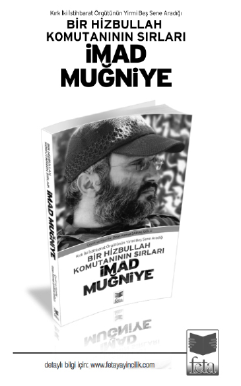

Beşinci Bölüm -AHLAK DERSLERİ(İmam Humeyni’nin Dinî Terbiye Yöntemi)
Nazarî ve Amelî Seyr-i Sülûk
Bugün İmam Humeyni’nin bu konudaki bakış açısını daha iyi anlamak için kendisinin ameli yöntemleri hakkında konuşacağız. Acaba Hz. İmam’a (r.) göre nefsimizi nasıl ıslah edebilir, onunla nasıl mücahede edebiliriz? Başka bir ifadeyle Allah’a kavuşma yolunu nasıl katedebiliriz?
Bu konunun derki birkaç noktanın anlaşılmasına bağlıdır:
Bu âlemde varlığın (vücudun) iki boyutu bulunmaktadır (burada ahlak ilminin ıstılahlarını kullanmak zorundayız): Bunlardan birincisi teorik ve ilmî olanı, yani uzmanlıkla ilgili olanıdır ve “nazarî irfan” şeklinde tanımlanmaktadır. Bu bilim için üstada ve kitaba ihtiyaç duymaktayız. Tıpkı herkesin hizmetinde olan felsefe ve tıp kitapları gibi bu alanın da kendine has kitapları vardır; alanın üstatları öğrencilerine bu kitapları öğretir, kendi yorumlarını da üstüne eklerler.
Seyr-i sülûkun ikinci boyutu ise Kuran-ı Kerim, Resul-ü Ekrem ve Ehl-i Beyt’in (s) bizlere açıkladıkları amelî yöndür. Yüce Allah’a seyr ve sülûk etmenin nasıl olacağı ve nefsi emmare ile cihadın mertebelerini ve yolunu öğrenebilmek için ayetleri ve rivayetleri bizler için tefsir ve tebyîn edecek büyük âlimlerimize de başvurmak zorundayız. Zira hiç kimsenin kendi kendine seyr-i sülûk yöntemi icad etme yetkisi yoktur. Bu konuyu Allah Teâlâ’dan öğrenebiliriz yalnızca. Peki, bu konuların teorik bilgisini elde ettikten sonra amel ve tatbik aşamasında üstat ve mürşide ihtiyacımız var mı yok mu, arifler ve âlimler bu konuda ihtilaf etmişlerdir. Önemli sayıda bir âlim ve arif topluluğu, seyr-i sülûkun kendi nezareti altında sürdürüleceği bir üstadın varlığının gereklilik olduğunu söylerler. Başka bir görüşe göreyse, eğer yolun özelliklerini (dinin ve seyr-i sülûkun hususiyetlerini) örneğin İmam Humeyni gibi güvenilir âlimlerden öğrenmiş isek artık özel bir üstat ve mürşide ihtiyacımız kalmayacaktır; her ne kadar üstada sahip olmak daha iyi olsa da.
Daha emin olmak için İmam Humeyni’ye onlarca yıl yarenlik etmiş olan yaranından birine, Ayetullah Tevessüli’ye bu konuyu sormuştum: “Acaba Hz. İmam amel aşamasında mürşid ve üstadın varlığını zorunlu buluyorlar mıydı?” Kendileri İmam’ın bunu şart olarak görmediğini belirterek: “İmam Humeyni’nin ameli seyr-i sülûk, nefisle cihad ve tezkiye ile meşgul olup manevî makamlara eriştiği sıralarda özel üstadı yoktu. Evet, teorik irfan dersleri görmek için hocalarının huzurunda bulunuyordu ama ameli seyr-i sülûkta hiçbir üstadın şakirdi değildi” dediler.
İmam’ın hayatının hiçbir evresinde hiç kimse ile “şunu yap bunu yapma, kendi hallerini bana anlat, ne ettin ne etmedin?” vs. şeklinde bir üstatlık ilişkisi olmamıştır. Ayetullah Tevessüli’nin dediği gibi: “Esasında İmam Humeyni’nin üslup ve yöntemi böyle değildi. Birisi kendisinden vaaz ve nasihat istediğinde tavsiyelerde bulunurdu yalnızca. Elbette bu yönelime sahip olan başka arifler de vardır.”
Nefisle Cihadın İki Makamı (Zâhir ve Bâtın)
İmam Humeyni (r.a.) nefisle cihad alanında iki makam ve mertebe olduğunu belirtmiştir:
Nefisle cihad kâmil olduğunda ve insan, şeytanı bu memleketten (yani nefisten) atmayı ve onu meleklerin ve Allah’ın salih kullarının mesken, vatan ve mabedi kılmayı başardığında –yani sözünü ettiğimiz her şeyle amel ettiğinde- ve nefsini şeytanın askerlerinin yuvası olmaktan kurtardığı bir merhaleye ulaştığında “sülûk-u ilallah” kolay ve insaniyetin sırat-ı müstakimi aşikâr olacaktır. Bu durumda Yüce Allah basiret gözümüzü açacak ve yolu bizler için apaçık ve aydınlık kılacaktır. İşte o vakit cennetin bereket kapıları insanın yüzüne açılacak ve cehennemin aşağı mertebeleri (derekât) bize kapalı kalacaktır. Âdemoğlunun yolu ilahi maarifin kapılarına açılacaktır, bu, insanların ve cinlerin yaratılışının nihai hedefidir. Yüce Allah bu kişinin elini tuttuğunda artık üstat ve şeyhe ihtiyacı kalmayacaktır; zira bu baştan sona tehlikelerle kaplı yolda onun kalbini ve aklını kendi marifet nuru ile aydınlatan bizzat Allah Teâlâ’dır. Seyr-i sülûkun en önemli kısmı olan nefisle cihad ve nefsin tezkiyesi alanındaki hedef zahir ve bâtınımızın, dilimizin ve aklımızın Yüce Allah’ın istediği gibi olmasıdır. Eğer böyle olunursa Allah’ın has kullarından olunmuş demektir. Ubudiyet, kulluk budur. Kulluk, kişinin efendisi karşısında isyan edememesi, görüş önerememesi ve itiraz sadedinde bir söz söyleyememesidir. Bütün emirlerine itaat etmesi ve teslim olmasıdır. Meleklerle şeytan arasındaki fark da meleklerin Allah’ın emrine asla itaatsizlikte bulunmamasıdır.
İnsan da zahir ve bâtınında ve bütün işlerinde Allah’ın istediği şekilde davranırsa halis bir kul olur. Ubudiyet makamı çok yüce bir makamdır, şehadet kelimesinde “Eşhedü enne Muhammeden abdühu ve resûluhu” dememizin nedeni budur. Eğer Peygamber’in (s.a.a.) “ubudiyeti” olmasaydı “risalet” makamına da ulaşamayacaktı.
İşte bu nedenle Yüce Allah bizden hayatımızda, zahir ve bâtınımızda kendi sevdiği gibi olmamızı istemektedir; şeytan ise bundan hoşnut olmamaktadır. Savaş ve mücadele tam da burada veriliyor. Allah kendi istediği gibi olmanı istiyor, şeytan ise buna razı değil. Şeytan için senin ne olup ne olmadığın hiç de önemli değildir; sana istediğini yap ve yeter ki Allah’ın dilediği gibi bir kul olmayasın. Şeytanın vazifesi budur. Amacı bizleri Allah’a ulaştıracak olan yolu kapamaktır, savaş bunun için çıkmaktadır. İmam Humeyni (r.a.) ise insanın beden ve ruh olmak üzere iki unsurdan mürekkep olduğunu, bedenin topraktan ruhun ise melekût adlı başka bir âlemden geldiğini söylemektedir.
Çamur dünyadan ruh ise semadandır; insan yerin ve göğün bileşimi olduğu için kendisini hem toprağa hem de göğe çeken güçler mevcuttur. Ruhtan yoksun bir beden hiç mesabesindedir, ölüdür. Bedeni faal kılan ruhtur. Cisim, nefsin (nefs-i natıka, ruh anlamında) sevk ve idaresi altındadır, kararları alan bu nefistir.
Nefsanî (Nefsi Natıkaya Ait) Kuvvetler:
Demek ki esas mesele insan nefsidir. Hz. İmam ve bütün ahlak âlimleri insan nefsine ait olan iki türlü kuvvetten bahsetmişlerdir:
Zahirî ve Bâtınî Kuvvetler:
İmam Humeyni’nin Kırk Hadis Şerhi kitabında belirttiği üzere bu kuvvetler göz, kulak, dil, mide, tenasül uzvu ve el ile ayaktan ibarettir. Bâtıni kuvvetleri ise akıl, vehim, şehvet ve gazap oluşturmaktadır.
Bazı ameller gazap kuvvesi ile ilgilidir, bazıları da şehvet, vehim ve hayalle. İmam iki merhaleden bahsettiği için birinci aşamada nefsin zahirî kuvvetleriyle, ikinci aşamada da bâtınî kuvvetleriyle verilen mücadele hakkında açıklamalarda bulunmaktadır.
Biz de ilk önce zahirî kuvvetler alanında nasıl mücadele edeceğimizden söz edecek, sonra da ikinci aşamaya, yani bâtınî kuvvetlerin hallerinin şerhine yöneleceğiz.
a) Zahirî Kuvvetlerle Cihad
(Akıl ve Cehalet Arasındaki Mücadele):
Akıl ve din bir yanda, şeytan da öte tarafta olmak üzere zahirî kuvveleri kendi tarafına çekmek için şiddetli bir kavga verilmektedir. Akıl ve din; göz, kulak, dil ve diğer zahirî organların ilahî iradeye teslim olmasını istemektedir, şeytan ise bu güçlerin Allah’tan başkalarına itaat etmelerini istemektedir. Hz. İmam, nefsin bu zahirî organlarını ele geçirmek için verilen mücadeleyi “Rahman’ın ve Şeytan’ın ordularının çatışması” veya başka bir tabirle “Akıl ve cehalet ordularının savaşı” olarak isimlendirmektedir. Akıl ve nefis, örneğin gözü farklı yerlere çekmek istemektedir ve insan tam da burada savaşa girmekte, nefis ile cihadın bu ilk merhalesinde son sözü söylemekte ve savaşın kaderini tayin etmektedir.
Yüce Allah bizlere namahreme bakmayı yasaklamıştır. Bu durum her gün yüz yüze olduğumuz, açık bir örnektir. Her gün gözümüzün önüne çıkan reklam panolarına ve televizyon dizileri ile filmlerdeki sahnelerin, dergilerin çoğuna bakmak haram ve masiyettir. İşte burada aklın ve dinin sana “Bakma!”, nefs-i emmaren ise “Bak, nasıl olsa sonra tövbe ve istiğfar edebilirsin” demektedir. Fakat insanın sağ kalabileceği ve tövbe edebileceği kesin değildir. İnsanın tam da bu haram ile meşgulken ölmesi ve fırsatı yitirmesi mümkündür. Şeytan insanı kandırmakta ve yoldan geri çevirmektedir.
Başka bir örneği de Kur’an kıraatinden verelim. Kuran’ı ezberden değil de yüzünden okumak müstehabtır, böylece ayet-i şerifelere göz teması sağlanabilmektedir. Fakat şeytan insanı bu işten de alıkoymaktadır. Kur’an’ı açar açmaz esnemeye başladığımız ve uykumuzun geldiği hiç olmamış mıdır? Bu şeytanın işidir. Şeytan zincirlerini insanın boynuna geçirebilmek için bütün çabasını kullanıyor. Bazen insanın uykusunu getirmekte, bazen de zihnini değişik vesveseler ve endişelerle meşgul etmektedir. İlk aşamada Kur’an okumasını engellemek istemekte, bunu başaramaması durumundaysa kalp huzuru olmadan ve anlamına dikkat etmeksizin dağınık bir kafayla okumasını sağlamaya çalışmaktadır.
Demek ki gözlerinin bakmak istediği şey her ne olursa olsun eğer bu bakışta Allah rızası bulunursa aklın ve dinin sana “Bak” diyecek ve nefs-i emmaren de senden aksini isteyecektir. Burada sen tam yol ağzındasın. Seç ve kararını ver. Hiç kimse seni mecbur etmiyor. Ne akıl, ne din, ne melek ve ne enbiya ve imamlar; ne de şeytan boynuna kılıç uzatıyor. Kıyamet günü şeytan sana “Yaptığın işlerin benimle hiçbir ilgisi yoktu” diyecek. Şeytan o gün kendine tabi olanları kınayacak. Burada son sözü söyleyecek olan ve kararını verecek olan sensin. Acaba harama bakacak mısın yoksa bakmayacak mısın?
Kulaklarda da durum böyledir. Gınaya kulak vermek haramdır ve bu türden sesler insan iradesinde etkili olan en olumsuz unsurlardandırlar. Şeytan nefs-i emmarene “Bu güzel bir şarkıdır, niye dinlemiyorsun?” derken aklın ve dinin “Niçin bu tür müziklere kulak veriyorsun? Bu haramdır ve Allah sana bu yüzden azap edecek” demektedir. Burada kendini engelleyecek olan yalnızca sensin. Gıybete kulak vermek ve laf taşımakta da aynı şey geçerlidir.
Dile gelince, Allah senden dilinin doğruluk mazharı olmasını istemekte, şeytan ise yalan söylemeni. Allah dilinin ıslah aracı olmasını dilerken şeytan dilinin fitne ve koğuculuk aleti olmasını istemektedir. Allah senden hayra davet eden bir dil talep etmekte, şeytansa bu dilin sapkınlık, hokkabazlık ve üçkâğıtçılık dili olmasını istiyor.
Dilden kasıt dilin konuşabilme yeteneğidir, yoksa ağzımızdaki şu et parçası değil. Konuşabilme, açıklama yapabilme ve konuları aktarabilme yeteneğidir. Dil üzerinde verilen bu kavgada son sözü söyleyecek olan kişi de sensin ve nefisle cihad tam da budur.
Mideye gelince, acaba haram mı yemeliyim yoksa helal mi? İçki içeyim mi yoksa içmeyeyim mi? Acaba başkalarından gasp edilen şu malı yesem mi? Sülûk ehli sana “Her zaman oruç tut, sürekli aç kal ve açlıktan öl!” demiyor, helal ve temiz olan şeylerden yemeni istiyorlar. Burada da seçim senindir.
Cinsî şehveti tatmin meselesinde de durum budur. Şeytan ve nefis cinsî şehvetini hangi yoldan olursa olsun doyurmanı isterler. Yüce Allah ise bu şehveti inkâr etmiyor, sana dediği bu ihtiyacını helal yoldan tatmin etmendir ve helalin yolunu, yani evliliği insana öğretmiştir.
İnsan elleriyle pek çok iş gerçekleştirmektedir. Geçmişte ellerinden daha çok yemek ve içmekte yararlanmaktaydı, bugün ise bilgisayar ve internetle iş görmektedir, resim ve heykel yapmaktadır. Elin kullanılabilirlik alanları bilim ve teknolojinin gelişmesiyle birlikte artmıştır. Ellerin imza attığı bütün bu işlerin iki boyutu bulunmaktadır. Birincisinde Allah’a itaatsizlik, diğerinde ise O’nun rızası yatabilmektedir.
Ayaklar ise bazılarını mescitlere ve cephelere, şehid cenazelerine taşırken bazılarını ise Allah göstermesin fesat ve lehviyat meclislerine götürmektedir. Bu yedi organ üzerinde hâkimiyet kurmak için hiç bitmeyen bir mücadele verilmektedir ve insan bu karşılaşmada muzaffer olmak zorundadır. Göz memleketi öylesine korunmalıdır ki hiçbir zaman şeytan ordularının eline geçmesin, kulak yurdundaki murakabe de bu organın şeytanın oyuncağı haline gelmesine engel olmalıdır. Diğer zahirî kuvvetlerde de durum böyledir.
İnsan bu savaşta yedi askerî karargâhı elinde tutan ve bunları savunmak zorunda olan asker gibidir. İnsanın bu yedi mevzinin tümünün savunmasında muzaffer olması gerekmektedir. Altı cephede çok iyi olsa ve yalnızca bir cephenin savunulmasında başarısız olsa, bu durum bile yeterli olmayacaktır. Örneğin insan göz, kulak ve avret organlarını haramdan korusa fakat dilini kontrol gücüne sahip olmasa, şeytan karşısında kâmil bir galibiyet elde etmesine imkân yoktur. Tek bir mevzide şeytana yenilmiş olmak, diğer karargâhlara da yol bulmasına neden olabilir.
Şeytan ile mücadelede önemli noktalardan bir diğeri ümitsizliğe düşmememiz gerektiğidir. Mesela üç karargâhı bile kaybetmiş olsak ümidimizi korumalı ve savaşı bu mevzileri geri alıncaya dek sürdürmeliyiz. Bugün ve bu aşamada elimizden gelen budur. Bazen Rahman’ın orduları bu mevzilere hâkim olurlar, bazen de şeytan orduları. Televizyon seyrederken haram sahnelerle karşılaşır karşılaşmaz kanalı değiştiren veya televizyonu kapatan biri göz cephesinde şeytan orduları karşısında galip gelmiş demektir. Fakat aynı kişi başka bir gece haram sahnelere gözünü açarsa göz memleketinde şeytanlar hüküm sürüyorlar anlamına gelir bu.
Bu merhalede muzaffer olmamız durumunda güçlü bir şekilde ikinci merhaleye adım atabiliriz. Fakat ilk aşamada yenilgiye uğrarsak eğer, hiçbir zaman ikinci merhaleye geçmemiz mümkün olmaz.
Çatışmanın Silahları (Seyr-i Sülûk’un Amelî Aşamaları):
Bu meydanda hangi silahlar kullanılmaktadır? Bizler bu meydana girmek ve çatışmaya katılmak istiyoruz. Bu meydanda mücehhez olmamız gereken silahlarımız nelerdir? İmam’a bu savaşa hangi silahlarla gireceğimizi sormak istiyoruz. Bu meydanda nasıl dik duralım? Şeytanın ordularını nasıl dışarı atalım? İmam’ın bu savaşta kullanımımıza sunduğu silahlar şunlar:
1- Tefekkür,
2- Azim,
3- Tövbe,
4- Murakabe,
5- Muhasebe,
6- Müşarete,
7- Tezekkür.
Biz yalnız bu yedi silahtan bahsedeceğiz, özelliklerini açıklayacağız ki, kendimiz için bir program hazırlamamız durumunda buna sadık kalalım ve yolu sürdürebilelim. Devamlılık çok önemli ve temel bir şarttır. İnşallah sonunda öyle bir noktaya ulaşacağız ki şeytan ve askerlerinin bu yedi zahiri kuvveye nüfuz etmeleri tamamen imkânsız olacaktır.
Fakat burada daha önemli olan nokta, bu yedi silaha ek olarak her anımızda Allah’a tevekkül içinde olmamız gerektiğidir. Bu çok önemli bir noktadır ve İmam (r.a.) da sürekli olarak bu konuyu vurgularlardı. Her anımızda ümidimiz ve inancımız O’na olmak zorundadır. Sürekli olarak dergâhında dua ve istiğase etmeli ve şeytan, nefs-i emmare ve şehvetimiz karşısında bize yardım etmesini istemeliyiz. Eğer Allah’a tevessül edersek bizlere yardım edecektir, tıpkı düşmanlar karşısında verdiğimiz savaşta bizlere yardım ettiği gibi. “Eğer Allah’a yardım ederseniz O size yardım eder.” (Muhammed, 7)
İmam (r.a.) burada çok ince bir noktaya işaret etmekte ve şöyle buyurmaktadır: Yüce Allah’a, kendi nezdindeki en sevgili varlıklarla, yani Muhammed ve Ehl-i Beyti (s.a.) ile tevessül etmeliyiz.
İmam Humeyni’nin önemle üzerinde durduğu başka bir konu da Yüce Allah karşısındaki aczimizi ve kusurlarımızı alçakgönüllüce ve huşu içersinde itiraf etmemizin gerekliliğidir. İnsanın marifet, basiret ve nuraniyeti arttıkça Allah karşısındaki aczine ve yoksulluğuna olan vukufu da derinleşmektedir.
İşte bundan dolayı, bu meydanın temel şartlarından biri kalbimizin kendisinden memnun olmaması ve yalnız Allah’a dayanıp O’ndan yardım dilemesidir. Güvencimiz Allah’a olmalıdır. Yarattıkları arasında kendisine en sevimli gelen Muhammed ve Ailesinin (s.a.a.) vesilesiyle Rahman olan Allah’a tevessül edelim. Kendimizi sadece dilde değil amelde de O’nun karşısında küçük ve aciz bilerek dergâhına tevessül edelim. İnsan bazen oturarak tevessül eder bazense secde eder. Secdedeki tevazu ve huşu daha fazladır. Bazen de secde eder, yüzünü toprağa koyar, gözyaşı döker ve kendisini Hakk’ın karşısındaki aczin, yoksulluğun zirvesinde görür. Böylesi bir tevessülün eseri ve faydası hepsinden daha çoktur…
Az önce bahsettiğimiz bu yedi başlıkla ilgili açıklamalarda bulunacağız, önce tefekkür, sonra da azim hakkında.
1. Tefekkür:
İmam şöyle buyuruyor: “Tefekkür nefis ile cihadın ve Hakk’a doğru yolculuğun ilk şartıdır.” Bizim buradaki konumuz ilk merhaledir ve ikinci merhale hakkında yeri gelince konuşacağız. Elbette İmam’ın Kırk Hadis kitabında sözünü etmediği bazı merhaleler de bulunmaktadır. Tefekkür seyr-i sülûkun bütün aşamalarında istifade edilen bir silahtır fakat her aşamadaki düzeyi farklılık göstermektedir.
Bu merhalede sözünü ettiğimiz tefekkür, şeytan ve ordusu ile yedi zahirî kuvvenin hâkimiyeti için verilen savaştaki tefekkürdür.
Bu Merhaledeki Tefekkürün Düzeyi: Burada şu soruyu sormamız gerekiyor: Bu merhaleye uygun olan tefekkür düzeyi nedir?
İmam (r.a.) şöyle diyor: Her birimiz tek başınayken -yalnız olunması daha iyidir- tefekkür ve teemmül etmeliyiz. Bunun illa da karanlık bir odada olmasına gerek yok. Sahilde, deniz kenarında veya bir dağ başında oturarak düşünsün. Önemli olan etrafında kendisini meşgul edecek kişilerin olmamasıdır.
Tefekkür ve teemmül esnasında kendi hakikatine baksın ve kendisine şunu sorsun: Beni yaratan ve yaratılışımı en güzel bir şekilde gerçekleştiren, türlü türlü nimetlere boğan (göz, kulak, ruh, akıl…) Yüce Allah, beni bütün mevcudattan ve hayvanlardan mümtaz kıldı ve bütün bu varlık âlemini bana boyun eğdirdi. O’nun bütün bu dünyayı ve ahireti, cenneti ve cehennemi; ne hayvanlar, ne yıldızlar ve ne de bu dünyanın idaresinde, rızıkların indirilmesinde ve ruhların kabzedilmesinde etken kıldığı melekler için değil de yalnız ve yalnız insan için yaratmasındaki hedefi ne idi? Bütün bunların da ötesinde bizim için peygamber gönderdi ve bu peygamberlerle birlikte kitaplar nazil etti. Eğer bütün bu konuları kabul ediyor, onlara iman ediyorsak öyleyse şu soruya da cevap vermek zorundayız: Acaba bunca nebiyi, resûlü ve kitapları insan için göndermesi, peygamberlerin bütün bu dert ve işkencelere göğüs germeleri ve bizlerin hidayeti ve terbiyesi için şehid olmaları yalnızca bu dünya için mi? Yani hedef yalnızca bu dünya mıdır? Ben ve sizler beş on yıl, bilemedin yüz yıl yaşayalım, yiyip içelim ve şehvet duygumuzu dindirelim; bu sultan veya diğeri hükümran olsun, şu zengin bu fakir olsun diye aramızda savaşmamız için mi bütün bunlar? Yaratılışın hedefi bu mu? Bu sonsuz nimetlerin, binlerce peygamberin ve onca ilahî kitabın hedefi bu mu?
Her birimiz azıcık düşünmekle bile bu yüce hedefin saydıklarımızdan ibaret olmasının muhal olduğu neticesine ulaşacağız. İnsanın önünde yemek içmekten daha önemli bir hedefi vardır. İnsanoğlu bu durumu, özellikle bu dünyanın türlü hallerine iyice dikkat ettiğinde daha iyi kavramaktadır.
Bu dünyadaki nimetlerin hepsi yok olucudur, ebedî ve sonsuz nimetler bu dünyanın ötesindedir. Bu âlemdeki tüm lezzetler dert ve eziyet ile karışıktır; mutlak, katışıksız lezzeti yoktur. Fakat bu dünyanın maverasındaki cihanda, içersinde hiçbir şekilde dert ve yorgunluk bulunmayan, asla aklınızdan bile geçmemiş lezzetler bulunmaktadır.
Kur’an-ı Kerim’in ayetlerinin çoğu ahiret hakkında, Yüce Allah’ın mümin ve itaatkâr, salih amel işleyen kullarıyla kâfirler, mücrimler ve münafıklar için hazırladıkları şeyler hakkındadır…
Niçin Düşünmüyoruz?: Dünyanın hali buysa ve diğer âlemin başlangıcı da can verme öncesindeki sıkıntılar, ölüm ve ruhun bedenden ayrılması ve bunların ardından kabir, yalnızlık, korku ve karanlık; sonrasındaysa sorgu ve azap ise niçin sonumuz hakkında düşünmemekteyiz? Kabirde başımıza gelecekler hakkında niçin düşünmüyoruz? Kıyamet gününe kadar berzahımız olacak olan o kabri? Kıyamet gününde başımıza gelecek olan şeyler hakkında niçin düşünmüyoruz peki? “En büyük açlık” ve “en büyük susuzluk” gününü, insanların en sevdiklerini terk edecekleri o günü? “O gün herkesin kendisini meşgul edecek işi vardır.” (Abese, 37) “Bütün sırların açığa çıkacağı o gün.” (Tarık, 9)
İnsanlara defterlerinin arz edileceği ve bazılarına ateşe git deneceği o gün hakkında, cehennemin özellikleri hakkında niçin düşünmüyoruz? Cehenneme giden insanlar iki türlü pişmanlık duyarlar: Cehennemin ve ilaveten cennetten yoksunluğun azabı. Cennetlikler için de iki mutluluk vardır: Cennetten alınan haz ve cehennemden kurtuluşun mutluluğu.
İnsan tefekkür ehli olmalıdır. Niçin pek çok ayet ve rivayette ölüm, kabir, berzah, cennet, cehennem ve kıyametten söz edilmektedir? Elbette kitabı doldurmak için değil hâşâ! Burada amaçlanan insanların düşünmesi ve uyanmasıdır.
“İnsanlar uykudadırlar, öldüklerinde uyanırlar.” (Bihar-ül Envar; 4, 43) Ölmeden önce kendinize gelin, zira gaflette ve uykuda olanların ölümden sonra uyanmaları işlerine yaramayacaktır. Fakat bu hayatlarında gaflet uykusundan uyanan kişilerin eksikliklerini telafi etmek için fırsatları vardır. İşte bu tefekkür o tefekkürdür. Tefekkür Yüce Allah’a seyr ve sülûk etme yolunun başlangıcıdır. Eğer mümkünse her gün otur ve değişik yöntemlerle bu konuları ve anlamları zihninden geçir. Bunun yollarından biri de Kur’an’ı Kerim’i ve kabir, ölüm, cennet ve cehennemden, dünya ve ahiretten bahseden rivayetleri okumaktır. Geçmiştekilerin öykülerine ibretle bir bak. Bak, neredeydiler, ne oldular ve şimdi neredeler? Böyle düşünen bir kişi marifet makamına ulaşacak ve gaflet uykusundan uyanacaktır. İnsanın asıl sorunu gaflettir ve düşünmenin en önemli faydaları ise şunlardır:
1- Gafleti ortadan kaldırır, gaflet ise şeytanın işidir. Şeytan sen Allah, ahiret ve kendinle ilgili hakikatlerden gafil olduğunda peşine düşmektedir.
2- Haramların terkinde insan için teşvik edici bir unsur olmaktadır.
2. Azim:
İkinci etken de azim ve iradedir. Düşündükten ve helali ve haramı tanıdıktan, dünyanın ve ahiretin hallerine vakıf olduktan sonra karar vermek zorundayız. Yani insanda artık bundan sonra Yüce Allah’ın emirlerine isyan etmemeye niyetlenme hali oluşmalıdır. Öyleyse tefekkür, bilinç ve tanıma tek başına yeterli değildir. Tefekkürden sonra azim ve iradenin varlığı şarttır. Haram işlememe ve şeytan ve nefs-i emmare ile cihad kararı alma seyr-i sülûkun olmazsa olmaz şartlarındandır. Bunun gerçekleşmesi için pek çok fedakârlıkta bulunmalı ve zorluklara katlanmalıyız.
Hz. İmam’ın (r.a.) buyurduğu üzere sağlam bir azim ve iradenin elde edilmesi şu şartlara bağlıdır:
1- Günahların terki
2- Taat ve ibadet ile meşgul olmak
3- Boynumuzdaki vaciplerin kazasını gerçekleştirmek
İmam (r.a.) şöyle demektedir:
Azim, insanın namaz ve oruç gibi üzerinde geçmişten kalan tüm vaciplerin kazasını gerçekleştirme ve zulüm ettiği biri varsa ondan da helallik dileme kararı almasıdır.
Azim yolun başında şart olduğu gibi yolun sürdürülmesi için de şarttır.
İmam şöyle buyuruyor:
Azim ve iradeyi en çok zayıflatan şey günah işlemektir. Bu yüzden insan kendisine günah işlemek için izin verir vermez ve bu hayâsızlığı işlemesiyle birlikte iradesi zayıflamaktadır.
Hz. İmam, çok değer verdiği hocası Ayetullah Şehabadi’den –büyük ihtimalle kendisi İmam’ın teorik irfandaki hocasıdır- şöyle nakletmektedir:
Azim, insaniyetin cevheri ve temelidir. İnsanların değişik mertebelerde bulunmalarına neden olan şey, hepsinin azimlerinin farklı olmasıdır. Peygamberler (s.a.) bile böyledirler; Yüce Allah onları azim ve iradelerine göre derecelendirmiştir, bundan dolayı bazı peygamberlerimiz ‘ulü’l-azm’ iken bazıları da ‘ulü’l-ilm’ ve ‘ulü’l-ibadet’ olmuşlardır. Azmi zayıflatan ve ortadan kaldıran şey günahlardır.
İmam şöyle devam ediyor:
İnsanın azim ve iradesini zayıflatan önemli günahlardan biri de gınaya kulak vermektir. Gınanın söyleyenleri ve dinleyenleri için en büyük tehlikesi irade ve azmi ortadan kaldırması ve insanı şeytanın emirlerinin itaatçisi yapmasıdır. Sonunda da şeytan insanı kendisiyle birlikte sağa ve sola döndürmekte ve onu günahlara daldırmaktadır.
Dolayısıyla tefekkür ve azim çok önemlidir ve bu kavramlara gereken önem gösterilmelidir. Bunlardan birincisi, yani tefekkür hakkında sayısız ayet ve rivayet vardır. Tefekkür, bu rivayetlerin birinde yetmiş ve hatta yedi yüz yıllık ibadetten daha faydalı addedilmiştir.
3. Tövbe:
Tefekkür ve azimden sonra atmamız gereken üçüncü adım tövbedir. Tövbe çok beğenilmiş bir davranıştır. Yüce Allah’a şu şekilde yakarmalıyız: “Allah’ım! Bugüne kadar işlediğimiz bütün günahlardan dolayı senden bağışlanma diliyor ve sana dönüyoruz. Ömrümüzün geride kalan yıllarında pek çok günah işledik, pek çok vacibi terk ettik, insanlara zulümler ettik.”
Allah’a varacak bir yola adım atan insanın yükü ağır olmamalıdır. Birisine “Gel şu dağı aş” dediklerinde bu kişi elinden geldiğince yükünün az olmasına çalışacaktır. Günahlar ve başkalarının hakları insanı Allah’a kavuşmaktan alıkoyan ağır yüklerdirler ve bundan dolayı da azimden sonra yapılması gereken ilk iş tövbe etmektir. Yüce Allah hiç kimse dergâhından ümitsiz olmasın diye bu kapıyı açık tutmuştur.
Resül-i Ekrem (s.a.a.) zamanında gerçekleşen mezar hırsızının hadisesini duymuşsunuzdur mutlaka. Bu kişi Müslümanların mezarlarını kazıyor ve kefenlerini çalıyordu. Bir gün de yeni vefat etmiş Müslüman bir kadının kefenini çaldıktan sonra cesedine tecavüz etmiş! Sonra da Peygamberin (s.a.a.) huzuruna geliyor ve tövbesinin kabul olup olmayacağını soruyor. Efendimiz ise ona meclislerini terk etmesini, zira gökten gelecek olan bir ateşin üzerlerine düşeceğinden korktuğunu söylüyor. Bu kişi de çöldeki bir dağa gidiyor ve gece gündüz burada günahı için ağlıyor, istiğfar ediyor. En sonunda Allah tarafından bağışlanıyor ve gufrana mazhar oluyor. Tövbe kapısı işte bu kadar açıktır hem de! Allah Kur’an-ı Kerim’de “De ki, Ey kendi nefisleri aleyhinde aşırıya giden kullarım, Allah’ın rahmetinden ümidinizi kesmeyin. Allah bütün günahları affeder” (Zümer, 53) buyurmaktadır.
Tövbenin Aşamaları ve Unsurları: Tövbenin pek çok merhalesi vardır, bizler şu an içersinde bulunduğumuz merhalesinden söz edeceğiz, yani günahlar mevzusundan. İmam şöyle buyurmaktadır:
Rivayetlerimizde insanın beyaz kalbi diye bir konu bulunmaktadır; çok temiz ve parlak bir levha gibi. İnsan günah işlediğinde bu günahı, büyüklüğüne göre insan kalbinde siyah bir nokta bırakmaktadır. İnsanın günahlarına devam etmesi durumunda kalbinin kararması kişinin tamamen Allah’ı unutarak gafillerden olmasına yol açmaktadır. Allah onu unutmakta, bu kişi de hatta kendi kendisini unutmaktadır. ‘Nesullahe feensahum enfüsehüm’ ‘Onlar Allah’ı unuttular Allah da onlara kendi kendilerini unutturdu.’ (Tövbe, 67) ‘Nesullahe fenesihum’ “Allah’ı unuttular, Allah da onları unuttu.’ (Haşr, 19).
Şeytan böyle bir insanı tamamen kendi kontrolüne geçirmekte ve ona şöyle demektedir: “Sen artık benim hizbimdensin; zira artık senin için hiçbir ümit kalmamıştır.” Böyle bir durumda tövbe etmenin yolu kalpteki bütün karanlıkları ve siyahlıkları temizlemek ve onu en baştaki haline döndürmeye çalışmaktır.
Demek ki tövbenin işlevi temizlemekten ibarettir; yani kalbi siyahlıklardan, karanlıktan ve günahlardan temizlemek, ta ki insan seyr-i sülûkunu gerçekleştirebilsin ve Allah’a ulaşabilsin. Allah Kur’an-ı Kerim’de “Şüphesiz Allah tövbe edenleri ve temizlenenleri sever” (Bakara, 222) demektedir. Hadis-i şerifte ise “Günahından tövbe eden hiç günah işlememiş gibidir” (Usul-ü Kâfi, 2. Cilt, 435) diye buyrulmaktadır.
Peki, tövbe nasıl gerçekleşecektir? İmam şöyle diyor: “Sadece, Allah’ım bizi bağışla, sana döneceğiz” demek yeterli değildir. Zira tövbe dil laklakası değildir. Tövbenin iki rüknü, iki de kabül şartı vardır. Yani eğer bu ikisini gerçekleştirirsek tövbemiz daha kâmil olacaktır. Demek ki tövbenin hakikatinden olan iki rükûn, onsuz tövbenin kabul edilmediği iki de şart vardır. Tövbenin iki rüknu işlenen günahlara pişmanlık duymak ve bir kez daha bu günahları işlememeye karar vermektir.
Bu iki şey tövbenin hakikatiyle ilgilidir. Yani pişmanlık olmadan ve bir daha günah işlememeye niyetlenmeksizin tövbeden söz etmek mümkün değildir.
Tövbenin İki Kabul Şartı:
1- Kişinin hakkını yediği kişilere (kul hakkı) olan borcunu ödemesi gerekir. Bir daha hırsızlık yapmamaya, fitne çıkarmamaya niyetlenmesi yeterli değildir. Malını yediği yetimlere haklarını ödemelidir, aralarında fitne çıkardığı eşler arasında tekrar sulh ve sükûneti sağlamalıdır...
2- Eğer üzerinde namaz ve oruç gibi ilahî haklar bulunuyorsa bunların kazasını gerçekleştirmelidir. Hac, zekât, humus ve kefaretler gibi vaciplerde de aynı işlemi yapmak zorundadır.
Tövbenin kemali için iki şart daha bulunmaktadır; yani bu iki şartı gerçekleştirmemiz durumunda tövbemiz daha iyi ve daha faziletli olacaktır. Pişman olmak, azim ve hakların iadesiyle tövbemiz gerçekleşmiş, hakikati hâsıl olmuştur ve kabul şartları gerçekleştirmiştir. Fakat kusursuz ve sürekli bir tövbenin peşindeysek bunun gerçekleşmesi için iki şarta daha ihtiyacımız var ve İmam bunlara “kemal şartları” demektedir:
1- Bu şart vücudunu haram mal ile semirtmiş kişilere mahsustur, yani hiç helal mal yememiştir bu kişi. İmam “Bu etleri erit! İster oruçla, ister yemeyerek! Sonra da ikinci kez helal maldan yemeye başla ki derin ve kemiklerin arasında helal maldan helal et oluşsun” demektedir. Bu şartı gerçekleştirmek zor olduğu için kemal şartı olarak tanımlanmıştır.
2- Cismine günahın lezzetini tattırdığın gibi (zira günahın zahiri bir lezzeti vardır) itaat ve kulluğun acısını da tattırmalısın.
Tefekkür, azim ve tövbe hakkında konuştuktan sonra murakabe, muhasebe ve müşarete hakkında da bazı açıklamalarda bulunmak zorundayız.
4. Murakabe:
Murakabe sabahtan geceye kadarki bütün eylemlerimize ve konuşmalarımıza dikkat etmemiz anlamına gelmektedir. Gözümüzle nereye baktığımıza, dilimizle ne konuştuğumuza dikkat etmeliyiz, aynı şekilde diğer zahirî organlarımıza da.
Sürekli kendisini murakabe altında tutan bir insan hata ve günah işlemez, şeytan böyle bir kişiye musallat olamaz, ayakları sürçmez. Murakabenin anlamı budur. Şeytan bu alanda da bizi kendi halimize bırakmıyor; gün boyu kendi halimize dikkat eden ve ibadet etmek ve günahları terk etmek için uğraşan bizler üzerine ins ve cin şeytanlarını sevk etmektedir. Bunu özellikle murakabeye niyet ettiğimiz ilk gün gerçekleştirmektedir; zira ilk gün ihanet eden kimsenin ikinci ve üçüncü günlerde de bunu tekrarlaması daha kolay olacak ve daha rahat günah işleyecektir. Şeytan seni bu imtihanda başarısız kılmak ve sonrasında da “Artık başarılı olamazsın, daha önce de sana yapamazsın demiştim ama dinlememiştin!” demek için bütün silahlarını, yöntemlerini, hile ve tuzaklarını kullanmaktadır.
İşte bu yüzden insan günün başlangıcında dikkatini iyi toplamalı ve tüm eylemlerine ve sözlerine dikkat etmelidir. Murakabenin ilk günü için özellikle önemli olan şeylerden biri de insanın şeytana kendi derununa nüfuz etme izni vermemesinin zorunluluğunun hatırlanmasıdır. Şeytanın sızacağı en küçük bir delik ve çatlak bile bırakılmamalıdır.
5. Muhasebe (Kendini Hesaba Çekme):
Günümüzü iyi ve ciddi bir murakabe ile tamamlamamızın ardından uyku vakti geldiğinde muhasebenin zamanı da gelmiş demektir. Hadis-i şerifte şöyle buyrulmuştur: “Her gün veya her gece kendi muhasebesini yapmayan bizden değildir.” (Usul-ü Kâfi; Cilt 2, 453) Her gece uykudan önce kendinle halvete girmeli, sabahtan akşama yaptığın her şeyi yazmalı ve sonra da bakmalısın; acaba yalan söyledin mi? Kimseyi aldattın mı? Eğer bunlardan hiçbirini yapmadıysan galip gelmişsin demektir, artık burada secdeye vararak Yüce Allah’a sana inayet ettiği bu nimetten dolayı şükretmelisin. Kıyamet günü bu gününü çok nuranî olarak göreceksin. Elbette benliğinle mağrur olup “ben, ben” dememeye gayret etmelisin, aksi takdirde gerisin geriye dönersin. “Allah’a şükürler olsun ki elimden tuttu, şeytanı benden uzak tuttu ve bana nefs-i emmarem karşısında galip gelme gücü verdi, bana ibadet etme tevfikini nasip etti” demelisin. Her zaman lütuf ve faziletin Allah tarafından geldiğini ve O’nun inayeti olmadan hiçbir iyi ameli gerçekleştirmeye gücünün yetmeyeceğine iman etmelisin.
6. Muşarete:
Bugün günah işlemediğine emin olduktan sonra –bunda başarılı olmak çok zor değildir- ikinci gün de tıpkı ilk gün gibi olmak için kendi kendine söz vermelisin. İkinci günse ilk gün gibi kendini murakabeye almalı ve günün sonunda hesap defterlerini açmalı, tıpkı ilk iki gün gibi üçüncü günün kararını almalısın. Bunu Yüce Allah’a kavuşuncaya kadar sürdürmelisin ki ne gecen ve ne de gündüzlerinde hiçbir günah yazılmamış olsun.
Bahsettiğimiz noktaya ulaşabilmek için zorunlu olan şart, devamlılık ve ısrardır. Eğer yalnızca bir hafta bu program doğrultusunda hareket edip sonra bundan vazgeçersen bir fayda elde edemezsin, hatta bunu bir ay sürdürsen bile faydadan halidir. Eğitimle ilgili meselelerde az bile olsa sürekli yapılan bir eylemin etkisi bölük pörçük yapılan işlerden daha etkilidir. Örneğin insan bir gün pek çok müstehab işlese, fakat sonra buna bir ay süreyle ara verse bunun çok faydasını görmeyecektir. Küçük fakat sürekli ve sebatla sürdürülen işler daha faziletli ve etkilidir. Zira devam insanda meleke oluşturmaktadır. Meleke ya insanın tabiatında olan, doğuştan getirdiği bir özelliğidir ya da alıştırma ve telaşla elde edilmiş bir hususiyettir. Bu yüzden başında cimri olan birinin asla cömert bir insan haline dönüşemeyeceğini zannetmemeliyiz.
Aksine, bir insan sürekli olarak kendini cömertlik göstermeye zorlar ve bu yönde davranmayı sürdürürse cömert bir insana dönüşecektir. Ailesi ve çevresi yüzünden çocukluğundan itibaren yalan söylenen bir ortamda büyüyen ve yalan söylemeye adet etmiş, yalan “zati tabiatı” olmuş bir kişinin de bu özelliğinden sıyrılamayacağını düşünmemiz doğru olmaz. Israrlı bir şekilde doğru söylemeyi sürdürürse bu sıfat vücudunda yer edinecek ve meleke halini alacaktır. İnsanın hedefi bünyesinde ibadet ve günahı terk etmeyi meleke haline getirmektir. İşte bunun içindir ki, fakihler cemaat imamı için zorunlu olan adalet vasfını tanımlarken “Adalet, sahibini günahtan alıkoyan derunî bir melekedir” demişlerdir. Yani doğumundan bugüne kadar günah işlememiş bir insanın adalet sıfatına haiz olması zorunlu değildir. Adil olması için itaat etmek ve günahtan kaçınmak o kişi için meleke olmak zorundadır. İşte bundan dolayı adil bir insanın ayağının sürçmesi ve günah işlemesinin ardından tövbe etmesi halinde, bu günahı adalet sıfatını kendisinden selbetmemektedir. Tövbe eder etmez arkasında namaz kılmak mümkündür; zira adalet sıfatı onun için meleke halini almıştır, hatasının ardından tövbe etmesiyle bu melekesini yanında hazır bulacaktır. Demek ki insan için önemli olan doğru söylemesi değil, doğru söylemeyi kendisi için meleke haline getirmesidir. Önemli olan takva, vera, huşu ve alçak gönüllülük, kalp huzuru ve Allah korkusu gibi sıfatların insanda hâsıl olmasıdır. Süreklilik ve çaba ile her insan kendisinde bir meleke oluşturabilir, her nefsin bunu kabul etme ve en üst dereceli sıfatları edinme liyakati ve yeterliliği bulunmaktadır.
7. Zikir ve Tezekkür:
Seyr ve sülûkun ve nefisle cihadın bu son merhalesinde bahsedeceğimiz son konu zikir ve tezekkür konusudur. Hz. İmam bunu en önemli ve en müessir etken olarak tanımlamaktadır.
Bu konuda pek çok hadis nakledilmiştir. Örneğin Resûlullah (s.a.a.) şöyle buyurmuştur: “Biliniz ki Rabbiniz katındaki en hayırlı ameliniz, dereceleriniz içinde en temizi ve en yükseği ve güneşin üzerine doğduğu en hayırlı şey Yüce Allah’ın anılmasıdır. Allah kendi halinden haber vermiş ve buyurmuştur: Ben, beni ananla birlikte otururum.” (Vesailü’ş- Şia; 7. Cilt, 162)
Başka bir hadiste de şöyle buyrulmaktadır: “Hiçbir şeyi Allah’ın zikrine tercih etmeyin. Çünkü Allah ‘Zikrullah her şeyden yücedir’ (Ankebut, 45) demektedir.” (Biharü’l-Envar; 74. Cilt, 109)
Resûlullah’a (s.a.a.): Cihadın niçin yapıldığı soruldu. Efendimiz cevaplarında: “Eğer Allah’ın zikrinin hatırı için olmasaydı hiçbir zaman cihad emri verilmezdi” dediler.
Cihad, kelimetullahın yüceltilmesi, insanları karanlıklardan aydınlığa hidayet etmek ve yalnızca Allah’a kulluk edilmesini sağlamaktır. Bedir Savaşında Hz. Peygamber şöyle dua etmişti: “Eğer bu topluluk yok olursa yeryüzünde artık sana ibadet edecek hiç kimse kalmayacak.” Onlar yalnızca cihad etmek için savaşmadılar, özel bir hedef için savaştılar. Allah’ı anmak savaşın kendisinden daha sevimlidir.
Emirü’l-Müminin İmam Ali (a.s.): “Kalbin temizliğinin temeli Allah’ı anma ile meşgul olmasıdır” (Gurerü’l-Hikem) diye buyurmaktadır. Hz. Ali başka bir yerde de: “Zikre devam ruhun gıdasıdır” demiştir.
İmam Cafer Sadık (a.s.) da: “En faziletli tavsiye Allah’ı unutmaman ve Rabbini sürekli hatırlaman, günah işlememen ve oturuyor ve ayaktayken O’na ibadet etmendir.” (Biharü’l Envar; 75. Cilt, 200) diyor. İmam Sadık’tan gelen başka bir rivayette ise şöyle deniyor: “Allah şöyle diyor, ey Âdemoğlu beni kalbinde an ki ben de seni anayım, beni yalnızlıkta an ki ben de seni kimsenin olmadığı yerlerde anayım, beni kalabalıkta an ki ben de seni kalabalıkta (meleklerle) anayım.” (Biharü’l-Envar; 90. Cilt, 157)
İmam Cafer’in yakın ashabından birine şöyle dediği rivayet edilmektedir: “Allah’ın kulları için vacip kıldığı en zor şeyleri size söyleyeyim mi? Halka insaflı davran, kardeşini kendine ortak kıl (rızıkta) ve her yerde Allah’ı an.” (Vesailü’ş-Şia; 15. Cilt, 255)
Zikir ve Tezekkürün Manası: Zikrin seyr-i sülûkun en önemli ve en büyük amili olduğunu söylemiştik; fakat zikir ve tezekkürün geniş anlamları olduğuna dikkat etmeliyiz. Zikrin manasının en açık mısdaklarından biri de unutmanın, yani nisyanın karşısındaki anlamıdır.
Hem itaatte, hem de masiyette Allah’ı hatırlamalıyız. Nimet anında O’nu anmalı, musibet zamanında da Yüce Allah’ın zikrini dilimizde cari kılarak ilahi kaza ve kader karşısında sabretmeliyiz.
Dolayısıyla burada zikirden kastedilen her durumda Allah’ı anmaktır. Örneğin çok sevdiği bir yakını vefat eden bir şahıs bu esnada sürekli Allah’ı anma ile meşgul olursa Allah da ona kalp itminanı ve dinginlik verecek ve bu kişiye ayaklarını yere sabit basmasını inayet edecektir; zira bu insan musibet anında Rabbini anmıştır.
Zikrullah her hal ve durumda, hareket ve sözlerinde, pazarda ve camide insanın beraberinde olmalıdır. Uyanık olduğun sürece tezekkür halinde olmalısın. Burada zikrin örneği olarak gösterdikleri şeylerden biri dil ile yapılan zikirdir, yani kitaplarda mevcut olan ezkar ile -örneğin “Estağfirullahe Rabbi ve etubu ileyh”, “La ilahe illallah” gibi- yani Yüce Allah’ı kendi isimleri ve mukaddes sıfatları ile anmak. Dolayısıyla dua bir zikirdir, Kuran okumak zikirdir, namaz zikirdir. Tüm bunlar rivayetlerde önemle tekit edilen dille zikrin örnekleridir.
Başka bir zikir çeşidi de “kalple zikir”dir. Bu, başlangıçta da söz ettiğimiz unutmanın karşısında yer alan durumdan farklıdır. Öyle bir zaman gelir ki dilin tevhid kelimesini söylerken kalbin de buna eşlik etmeye başlar, insan için bunun gerçekleşmesi mümkündür. İmam (r.a.) üstadından naklederek şöyle demektedir:
Dilinle zikrettiğinde bunun etkili ve değerli olmasını istiyorsan mutlaka kalp huzuru ve teveccüh sahibi olmak zorundasın. Bir insan dikkati dağınık ve kalp huzurundan yoksunken eline tespih alsa ve günde bin kere ‘Subhanellah’, ‘La ilahe illallah’ ve ‘Allahu Ekber’ dese bunun bu kişiye etki etmesi mümkündür; fakat bu eser çok az olacaktır. Etkili olan zikir teveccüh, kalp huzuru, tefekkür ve tedebbür ile birlikte yapılan zikirdir. Bazen insanın kırk yıl namaz kılıp bu namazın kendisini kötülüklerden alıkoymadığı olmaktadır. Bu kişi hâlâ manevî sorunlarından kurtulamamıştır; zira namazında huşusu ve alçakgönüllülüğü eksik; ibadeti gaflet ve kalp huzuru yoksunluğu, tefekkürsüzlük ve kalbi Allah’tan başkasıyla meşgul etmekle beraberdir. Böyle bir namazın etkili olmayacağı çok açıktır.
Zikir de böyledir. Eğer bazı özel tesbihat, salâvat ve namazlara devam ediyorsak ve bunu gaflet içersinde ve huşusuz gerçekleştiriyorsak, bunu günde bin kez de olsa yapsak nasibimiz yorgunluktan başka bir şey olmayacak ve değerden yoksun olacaktır. Bundan dolayı dille zikirde kalp huzuru şarttır.
Zikrin ilk merhalelerinde kalp dilin takipçisidir; fakat kalbin iyice öğrenmesi ve alışması halinde bu sefer kalp zikredecek ve dil de onu takip edecektir.
Şu an bahsettiğimiz zikrin geniş anlamı, her şeyden önce Allah’ı anmamız ve O’nun hazır ve nazır olduğunu hissetmemizdir. Bu hissedişin kendisi zikirdir. Bu zikrin manasıdır ve daha önce geçtiği gibi iki çeşittir: dilinle bir zikri söylemen ve kalbin ve ruhunda bu zikri tekrar etmen.
Bu konuyla ilgili diğer temel konuları ele almadan önce tezekkürle ilgili halleri biraz daha açıklayalım - İmam Humeyni de bu konuyu geniş bir şekilde ele almıştır- ve tezekkürün bereket ve sonuçlarından bahsedelim. Dikkatinizi dille yapılan zikirle ilgili bir meseleye çekmek istiyorum. Hakkında konuştuğumuz İmam Humeyni’nin metodunda bir kişinin şeyhine giderek belli bir zikri alması diye bir durum yoktur. İmam Humeyni’ye göre bu iş doğru değildir. İmam şöyle diyor:
Eğer zikir istiyorsan Ehli- Beyt’in (s.a.) kapısına git ve bize hangi zikirleri öğrettiklerine bir bak. Sana şu zikirleri çek şunları çekme diyecek bir üstada ihtiyacın yok…
İmam’ın dayandığı kitap Şeyh Abbas Kummi’nin “Mefatih” kitabıdır. Bu kitapta zikirler, dualar ve pek çok müstehab namaz ve amel mevcuttur, bunlardan istifade edebilirsiniz.
Zikrin Ortamları ve Merhaleleri: İmam zikrin değişik mertebeleri olduğunu buyuruyor, bunlardan biri de işaret ettiğimiz gibi her yerde Yüce Allah’ın varlığını, huzurunu hissetmek, sizinle birlikte olduğunu ve amellerinize nâzır olduğunu bilmektir. Bizler de O’nu yâd etmeli ve kudreti ve huzurunda eşi ve benzeri olmayan O’na ihtiram etmeliyiz.
İmam büyük bir insana ihtiram göstermenin kâfir veya mümin olsun bütün insanların fıtratlarında mevcut olan bir özellik olduğunu kaydetmektedir. İnsanın inancı ne olursa olsun her güçlü ve saygın kişi karşısında ihtiram göstermektedir. Halk padişahlara, başkanlara ve para sahibi insanlara ihtiram göstermektedir, çünkü bu insanların büyük oldukları düşünülmektedir. Peki, herkesten daha güçlü, daha büyük ve daha zengin olan kimdir? Azıcık düşünmekle Allah’ın Malikü’l-Mülk ve Rabbü’l-Âlemin olduğunu anlarız. Eğer büyüklere ihtiram göstermek vacipse ilk önce Yüce Allah’ı ululamak ve O’na kulluk etmek, yalnız O’na itaat etmek ve sadece O’ndan korkmak zorundayız; zira gerçek güç sadece O’na aittir, O’ndan başka kimsede güç ve kudret yoktur, gücü olan da kudretini O’ndan almaktadır. Demek ki, ihtiram göstermek insan için fıtrî bir duygudur; fakat insan bundan gaflet etmekte ve benzeşen durumlar karşısında şaşırmaktadır, yoksa dikkatli düşünen bir insanın Allah’ın yegâne mutlak kudret olduğunu ve bu yüzden kendisine saygı gösterilip sevilmesi gerektiğini fark etmesi zor olmayacaktır.
Nimet Verene İhtiram Göstermek: İmam Humeyni’nin bahsettiği ikinci örnek de nimet verene ihtiram gösterilmesi ve teşekkür edilmesidir. Bu özellik de mümin-kâfir herkesin doğasında mevcuttur. Verilen nimet büyüdükçe minnet altına giren kişinin kendisine cömertlik gösteren kişi karşısındaki hürmeti ve sevgisi artacaktır. Bu iyilikle başka bir şeyin hedeflenmemesi ve karşı taraftan bir şey talep edilmemesi durumunda ise teşekkür duygusu daha da şiddetlenecektir.
Yüce Allah’ın bize inayet ettiği dünyevî nimetleri saymamız mümkün değildir. Kendisine kulluk etmemiz durumundaysa bizlere ne gözümüzün gördüğü, ne işittiğimiz ve ne de aklımızdan geçmiş olan uhrevi nimetler ihsan edecektir. Acaba böylesi bir nimet sahibi zat sürekli anılmaya, itaat edilmeye, sevilip şükredilmeye layık değil midir? Nimet ihsan etmede kim Allah ile mukayese edilebilir?
İmam (r.a.) bütün bunlardan sonra insanın her zaman zikir halinde bulunmasına yardım edecek olan unsurun tefekkür etmek olduğunu söylemektedir ki, biz başta bundan söz ettik. Tefekkürün düzeyi arttıkça zikrin mertebesi de yükselecektir. Yani tefekkür insanı tezekküre yöneltmektedir. Faydalı zikir zât, nefis, ufuklar, gökler ve sahip olduğumuz şeyler hakkında düşünmenin mahsulü olan zikirdir. İmam bu konuda şöyle buyurmaktadır:
Tezekkür tefekkürün sonuçlarındandır ve tezekküre vesile olan her tefekkür bütün amel ve ibadetlerden daha büyük, daha değerlidir. Böylesi bir tefekkürün değeri bir yıllık ibadetten bile fazladır. Hadis-i şerifte ‘Bir saatlik tefekkür atmış yıllık ibadetten daha hayırlıdır’ denmiştir. (Biharü’l-Envar, c. 66, s. 292) Bir saatlik tefekkürün, insanın yüzüne yetmiş yıllık ibadetin açamadığı ilahî marifetlerin ve bereketlerin kapılarını açmış olması mümkündür.
Önemli olan insanın Allah’a yaklaşması, bilinç sahibi olması ve kendisinde ilahi aşkın vücuda gelmesi, ilahi huzuru hissetmesidir. Tefekkürün ve tezekkürün insandaki eserinin maddî ibadetlerden daha fazla olması mümkündür.
İmam şöyle devam etmektedir:
Peygamberlerin, imamların ve irfan ehlinin tefekkür ve tezekkürleri böyledir. Tefekkür ve tezekkür birlikteliği, ahlakı ıslah ve sülûkta avam ve orta dereceli insanlar için en iyi yoldur.
Bu bahsin sonunda şunu anlıyoruz; İmam bize en iyi programı vermiştir ve bunu uygular ve gözümüzün nuru sayarsak pek çok kapının yüzümüze açılması mümkündür.
Demek ki insan her halinde Yüce Allah’ı anmalı ve O’ndan gafil olmamalıdır. Zikir diğer hiçbir işe de engel olmaz. Sokakta, işyerinde veya sınıfında Allah’ı anma ile meşgul olabilirsin. Ebette dilinle ifade etmek zikrin şartlarından biri değildir, zikir Allah’ın varlığını hissetmendir. Zikir bütün varlığınla Allah’ın seni gördüğünü ve O’nun huzurunda olduğunu duymandır. O kalbinden geçenlere vakıftır ve sana şah damarından daha yakındır.
Allah’ı anmak kalplerin ışığı ve dinginliği, gönüllerin şifasıdır. Zikir, aynı zamanda şeytanı insandan uzaklaştırmaktadır da.
b) Bâtınî Güçlerle Cihad:
İmam Humeyni diğer âlimler gibi nefsin bâtın kuvvetlerinin dört tane olduğunu söylemektedir:
1- Akıl kuvveti
2- Gazap kuvveti
3- Şehvet kuvveti
4- Vehim ve hayal kudreti
Demek ki derunî (içsel) kuvvelerimiz akıl, gazap, şehvet ve hayalden ibarettir.
Bu Dört Kudretin Tarifi: Bir kısım âlime göre insan için en önemli hedef kendi nefsini tanımasıdır. Yani önce nefsini tanıyacak, sonra da seyr-i sülûka yönelecektir ki, maksadına ulaşabilsin. Başkaları ise kişinin nefsini tanımasının anlamının, kendi nefsinin güdümünde olan şeyleri tanıması olduğunu -yani nefsinin sahip olduğu zahiri ve bâtınî kuvvetlerini- söylemekteler.
Kendi güdümümüzde olan bu insanî nefsi ve bu nefsin güçlerini ve imkânlarını tanımak istiyoruz. Zira bir yola girmek isteyen kişi elindeki olanakların nelerden ibaret olduğunu bilmek zorundadır. Uçakla mı gidecektir yoksa otobüsle mi? Aracı sağlam mıdır yoksa arızalı mı? Allah’a doğru seyr-i sülûk etmek istemek isteyen bir insan da nefsinin zaaf ve kuvvet noktaları hakkında yeterli bilgiye sahip olmak zorundadır. Biz de imkânımız ölçüsünde bu kuvvetler hakkında açıklamalarda bulunmaya çalışacağız.
1. Akıl Kuvveti:
Eşyanın hakikatini bu kuvvet sayesinde derk etmekteyiz. Dünya ve ahiret, peygamberler ve imamlar hakkındaki bütün hakikatleri bu güçle kavramaktayız. Yine bu nefsanî kuvvetin yardımıyla nesneler ve olgular arasındaki farkları anlıyor; doğruyu yanlıştan, faydalıyı zararlıdan ayırt ediyoruz. Aklın yardımıyla başardığımız işlerden biri de yol gösterici talep etmek ve hidayet olarak doğru yolu bulmaktır.
2. Gazap Kuvveti:
Gazap tabirinin anlamı günlük dilde kullanılan kızgınlık manasından daha geniştir. Bütün bu bağırıp çağırmalar, kırıp dökmeler gazabın mısdaklarındandır; fakat gazap, insandaki bu hayvani parçalayıcılık sıfatından daha geniş bir manadadır ve bazı davranışların ve bir ahlak anlayışının kökenidir. İleride bunu daha ayrıntılı bir şekilde ele alacağız. Kısacası, kudret ve şiddetin bulunduğu her yerde gazap kuvveti devrededir denmektedir.
3. Şehvet Kuvveti:
Şehvetten kasıt insanın arzuları ve nefsanî istekleridir ve bunun an belirgin örnekleri de yemek yeme ve cinsel şehvettir.
İnsan ahlakına etkide bulunan ve farklı sonuçlara neden olan başka şehvetler de vardır (bunlarla ilgili ayrıntılı açıklamalar ilerde yapılacak).
4. Hayal ve Vehim Kuvveti:
İnsan bu gücünün sayesinde hile ve tuzak kurabilir, hokkabazlık yaparak yolu başkalarına tıkayabilir. Üçkâğıtçılık yapmayı aklımızdan öğrendiğimizi zannediyoruz ama bize hile yapmayı öğreten vehim ve hayal kuvvetimizdir.
En Önemli ve En Zor Aşama: Asıl savaş meydanı burasıdır. İmam bu merhalenin ilk merhaleden bile daha önemli ve tehlikeli olduğunu belirtmektedir. Savaşı burada kazanan orada da kazanmış demektir: zira ilk merhalede bile göz, kulak ve el deruni kuvvetleri takip etmektedir. Örneğin bir insan gazap kuvvetini kontrol ve ıslah etmemişse başka birine kızması durumunda ona vuracak ve zulmedecektir, eğer şehvet duygusuna hâkim değilse de haram işleyecek ve zina edecektir. Şehvet yüzünden harama bakmakta ve harama kulak vermektedir. Bu bâtınî güçlerini kontrol altına alacağı bir merhaleye ulaşması durumunda hiç şüphesiz zahiri güçlerine de üstün gelmiş demektir, bu yüzden nefsin içsel kuvvetleriyle mücadele etmek daha tehlikeli ve zordur. Buradaki savaş cephenin ilk hattındadır ve ikincil değil stratejik mevzileri ele geçirmek için verilen bir mücadeledir. Bu savaş, sonucu belirleyen bir çatışmadır. Mesela harama bakıştan gözünü koruyabilmene rağmen etkisi içinde kalabilir. Eğer bu duyguyu içinden söküp atmışsan gözünden, dilinden ve kulağından da kesinlikle atmışsındır demektir.
İmam Humeyni bundan dolayı şöyle buyurmaktadır:
Gerçek nefisle cihad buradadır, en önemli, en zor ve en tehlikeli merhale burasıdır. İnsanın benzersiz bir önem vermesi gereken bir aşamadır burası. Bizden istenen şey yalnızca nefsimizi kötü ve şeytanî ahlaktan temizlemek değildir. Nefsimizde aynı zamanda iyi ahlakî vasıfları da yerleştirelim. Yani güzel ahlak içimizde bir melekeye dönüşmeli, bizim tabiatımız olmalıdır.
İmam Humeyni’nin seyr-i sülûk yönteminde ahlaka çok önem verilmektedir. Hz. İmam’a göre seyr-i sülûk namaz ve oruçtan ibaret değildir: “Güzel ahlak olmadan insanın ilahî visale ulaşması mümkün değildir.”
Resûlü Ekrem (s.a.a.) şöyle buyurmaktadır: “İslam güzel ahlaktan ibarettir.” Başka bir hadiste de şöyle denmektedir: “İyi ahlaklı bir kul bu ahlakı sayesinde ahiretteki en yüksek makamlara ulaşmaktadır, hatta ibadeti az bile olsa.” Bu hadis çok önemlidir, bazılarının bunu işitmekle şaşırmış olmaları mümkündür; zira bu kişiler hayattaki vazifelerinin yalnızca fazlaca ibadet etmek ve kuru bir maddi zühd olduğunu zannediyorlar. İmam Cafer Sadık (a.s.) da şöyle buyuruyorlar: “Allah katında, müminin Allah’a sunduğu ameller arasında vaciplerden sonra hiçbir şey insanlara güzel ahlak göstermekten daha sevimli değildir.” (Kâfi, c. 2, 100) (Çünkü vacipler zaten uygulanmak zorundadır ve burada bir sorun yoktur. Bazıları vacipleri beş vakit namaz ve bazı sınırlı fiillere hasretmekteler ki bu yanlıştır.)
Başka şaşırtıcı hadisler de vardır, “Din doğru sözlülük ve emaneti eda etmektir” gibi. (Kâfi, c. 2, 239) Bu hadis az önce söz ettiğimiz rivayetlerle çelişmez, zira doğru sözlülük zaten güzel ahlakın mazharlarındandır.
Dolayısıyla İslam dinimizde temel önem verilen bu konu İmam Humeyni’nin seyr-i sülûk yönteminde ısrarla vurguladığı bir başlıktır. Güzel ahlak meleke halini aldığında her şey çok daha kolay olacaktır.
Kökünden Sökmek Değil Islah Etmek: Burada önemle işaret etmemiz gereken bir konu bulunuyor. İslam nefsi tezhip etmek isterken nefsin bu kuvvetlerini ortadan kaldırmak istemiyor. İslam’ın talebi gazap sıfatını yok etmek değildir örneğin, zira gazap kuvveti pek çok güzel ahlaki hasletin ve güzel sıfatın kaynağıdır. Eğer insan kendi derunundaki gazap sıfatından yararlanmaz ise artık cesur ve mücahit bir insana dönüşmesi mümkün değildir. Öyleyse niçin bu gücünü tamamen körleştirmek ve öldürmek istiyorsun? Kötü ahlaka neden olduğu için mi? Fakat aynı zamanda iyi sıfatların da kaynağıdır bu kuvvet. İnsanlara zulüm yolunda kullanıldıkları için “Fizik, kimya ve matematik gibi bilimleri okumak haramdır” diyen bir kişiye “Müslümanlar bu bilimleri okuyarak güçlü olur ve namus ve şereflerini, dinlerini korurlar, bu ilimleri niçin tahsil etmeyecekmişiz?” diye cevap verdiğimiz gibi, bu kişiler karşısında da İslam’da insanın gazap gibi bir nefsanî kuvvetini ortadan kaldırmasını salık veren bir hüküm olmadığını belirtmek zorundayız.
Esasında böyle bir şeyin olanağı da yoktur; zira bu güç bize Allah tarafından verilmiştir ve bunu tabiatımızdan çıkarıp atmamız mümkün değildir. Şehvet ve hayal kuvvetlerini de insandan çekip almak imkânsızdır. Eğer hayal ve vehim yeteneklerimiz olmasaydı dış âlemde ve manalar dünyasındaki seyrimizi gerçekleştiremezdik. İslam’ın bizden istediği bu güçleri ıslah etmemiz ve dinin kontrolü altına sokmamızdır. Böyle yapmamız durumunda bu nefsanî güçlerden yardım alarak “hüluku’l azim” (büyük ahlak) sahibi olmamız mümkündür.
Ahlakî Melekelerini Edinmenin Yolu: Sözünü edeceğimiz son konu, iyi ahlaki melekeleri edinmenin ve kötü ve fasit melekelerle (rezail) mücadele yolunun nasıl olacağı hakkındadır. İmam bizlere hepimizin başarabileceği ve ahlak âlimleri tarafından da tavsiye edilen bir yol öğretmektedir. Bu yöntemin kaynağıysa gerçekte İmam Ali’nin (a.s.) “Eğer nefsi zor olan şeyde kendisine itaat etmezse sevdiği şeyi ondan yoksun bırakır” şeklindeki ifadesinde yatmaktadır. (Nehcü’l-Belağa, 193. hutbe)
Şöyle ki, insanın, nefsinin hoşuna gitmeyen bir şey yapmak istediği için kendisine itaatsizlik etmesi durumunda –örneğin kişi ihtiyaç sahibine bir miktar para vermek isterken nefsin “Hayır, bizim de ihtiyacımız var” demesi halinde- bu kişi nefsine muhalefet etmeli ve aksi yönde davranmalıdır. Böylece ona galebe çalması ve kendini ıslah etmesi müyesser olacaktır.
Bahsimizin sonunda İmam’ın pek çok kez vurguladığı bir hususa dikkat çekmek istiyoruz: Nefsin tezkiyesi yolunda hareket edip günahtan kaçınma ve farzlarla amel etmeye, nefsimizin zahirini ve batınını kontrol altında tutmaya çaba gösterdiğimiz bütün aşamalar boyunca Allah’a tevekkül etmek ve O’na sığınmak zorundayız. Bu yolda eğer ciddi çaba gösterir ve Allah’tan yardım dilersek Şeytan ve nefs-i emmare karşısında muzaffer oluruz ve bizlere ilahi yakınlığın en üst derecelerine ulaşma kemali nasip olur, inşallah…
EKLER
İslam Devrimi Rehberlik Makamının 33 Gün Savaşı’nın Ardından İsrail’in Cinayetlerini Mahkûm Ettiği Mesajı
Bismillahirrahmanirrahim
Kana faciası kalplerimizi gam ve kedere boğmuş, bizleri, diğer Müslüman milletleri ve bütün özgür dünya halklarını yaslı kılmış ve gazaplandırmıştır. O masum bebekler ve o zayıf vücutlu insanlar, o küçücük korkmuş kalpler hangi günahlarından dolayı katledildiler? Anne ve babalarının yanık kalpleri kan içici Siyonistlerin ve onların sarhoş ve mağrur destekçileri olan Amerikalıların elleriyle mi tutuşturulacaktı böyle? Lübnan’ın yirmi gün boyunca aralıksız bombalanması, yirmi gün boyunca pek çok cinayetin işlenmesi, bir ülkenin viraneye çevrilmesi ve Kana’da sivillerin katliama uğratılması hangi mantığa ve delillendirmeye dayanmaktadır ki medeni olduğunu söyleyen dünya, BM ve insan hakları savunucusu olduğunu iddia eden örgütler bütün bunların karşısında böylesi bir soğukkanlılık ve ilgisizlik sergilemekteler?
İslam dünyası daha ne zamana kadar baştan ayağa fitne ve şer olan Siyonist rejime tahammül edecek ve İslam ülkeleri savaş çıkarma peşindeki müstekbir Amerika’nın bu hassas bölgedeki elini daha ne zamana kadar açık saklayacak?
Lübnan’da gerçekleşen hadise Amerika’nın “insan haklarının” ne anlama geldiğini ve Amerikan devletinin nasıl bir Ortadoğu peşinde olduğunu herkese göstermiştir.
Bugün belli olmuştur ki, Lübnan’a saldırı önceden planlanmış bir Amerikan-Siyonist projesiydi ve Ortadoğu’yu ve İslam dünyasını tasallut altına almada atılan önemli bir adımdı.
Bush ve beraberindeki Amerikalılar Lübnan faciasında aynı oranda günahkârdırlar. Siyonist rejimin habis ve kara yüzlü önderleri; BM ve pek çok Batı ülkesinin sükûtunu ve kötü sabıkalı İngiltere gibi devletlerin desteğini aldıklarından değişik ölçüde de olsa hepsi ilahî azaba ortak olacaklar.
Bugün Müslüman milletler her zamankinden daha çok Amerika’ya öfkelenmekte ve ondan nefret etmektedirler. Devletleri de -bazı siyasî endişeler yüzünden sınırlama hissedenleri de dâhil- bütün bu müstekbirce saldırılardan bıkmış durumdalar ve bu hale itiraz ediyorlar. ABD rejimi Siyonistlerin cinayetlerine verdiği destek ve Müslüman halkların haklarına açık saldırıları yüzünden İslam ümmetinin sert tokadını beklemelidir.
Lübnan milletinin ve kahraman Hizbullah mücahitlerinin iman, sabır ve tevekküllerinden doğan dik duruşları İslam dünyasının uyanışının ve düşmanlar karşısındaki azimli ve sağlam tavırlarının yeni bir yansımasıdır.
Lübnan’ın mümin ve cesur gençlerinin çelik yumruğu bugün saldırganların çirkin yüzüne inmiştir ve gurur sarhoşluklarının camlarını kırmıştır. Amerika’nın uyguladığı siyasetler bölgede kriz, güvenliksizlik ve savaştan başka bir şeye yol açmamıştır. Şunu bilsinler ki emniyetsizliği ne kadar yaygınlaştırırlarsa halklar da kendilerine o kadar öfkelenecek ve dünya kendileri için daha güvensiz bir yer halini alacaktır.
Amerika ve İsrail’in saldırganca tutumları İslam dünyasındaki direniş ruhunun her zamankinden daha canlı olmasına neden olacaktır ve cihadın değerini daha da belirgin kılacaktır.
İslam dünyası ve bütün İslam ülkelerindeki gençler de vahşi Siyonizm kurdu ve büyük şeytanın saldırganlığıyla mücadelenin yolunun direniş ve fedakârlıktan başka bir şey olmadığını bilsinler.
Maceracı devlet adamlarının ve fitneci Amerika’nın karşısında teslim olmak bunların cesaretlerini arttıracak ve dünya milletlerinin işini daha da zorlaştıracaktır. Eğer Lübnan, İsrail ve Amerika’nın saldırıları karşısında teslim olsaydı ve Hizbullah’ın mücahid gençleri ve mazlum güney Lübnan halkı bu mukaddes savunmanın derdini yüklenmeseydi uzun süreli bir zillet bütün Lübnan halkını kaplayacak ve bölgeye saldırı tehdidinin sürmesine yol açacaktı. Bugün Hizbullah, İslam ümmetinin ve bölgedeki tüm halkların savunulmasında en ön cephede yer almaktadır.
Siyonist düşman için din ve ibadet, mescid ve kilise, Sünni ve Şii fark etmemektedir; ırkçı, saldırgan ve kan dökücü bir rejimdir o. Eğer önünde bir engel görmez ise hiçbir cinayeti işlemekten çekinmeyecek ve hiçbir topluluk ve halka yüzünü dönüp bakmayacaktır.
Bölge milletleri, İslami mezhepler ve Lübnan’daki değişik dinlerin takipçileri birbirlerine vahdet ellerini uzatmalı ve aralarındaki ayrılığın düşmanın gücüne dönüşmesine fırsat vermemelidirler.
İslamî İran, Amerika’nın kabadayılığı ve saldırganlığı ve Siyonist rejimin şerareti karşısında durmayı ve direnmeyi vazife bilmektedir ve bütün mazlum milletlerin, özellikle de aziz Lübnan halkının ve Filistin’in savaşçı milletinin yanında durmaya devam edecektir.
Lübnan’daki sivillerin katledilmesine açık destek veren ve ateşkese karşı çıkan Amerika, Siyonistlere mali, siyasi ve askeri yardım sunmakla fiili olarak savaşa dâhil olmuştur, bugün ise Lübnan devletine ve halkına kendi şartlarını dayatarak işlediği zulmü arttırmak istemektedir.
Şüphesiz bu direnişçi millet ve cesur mücahitler böylesi bir zulmü kabul etmeyecek ve kendi çıkarları neyi gerektiriyorsa yalnızca o yönde davranacaklar.
Lübnan milletine, muzaffer Hizbullah’a ve cesur ve mümin önder Seyyid Hasan Nasrallah’a selam olsun.
“Öyleyse sabret, şüphesiz Allah’ın vaadi haktır ve kesin inanmayanlar seni hafife almasınlar.” (Rum, 60)
Seyyid Ali Hamenei
10 Mordad 1385, 2006
İslam Devrimi Rehberinin Hizbullah’ın 33 Gün Zaferinin Ardından Yayınladığı Tebrik Mesajı
Mücahid Kardeşim Çok Değerli Seyyid Hasan Nasrallah Bey (Allah Ömrünü Uzun Kılsın)
“Sabretmenize Karşılık Selam Size”
Selam Size ve Diğer Kardeşlere, Hizbullah’ın Her Bir Savaşçısına
Benzersiz cihadınız ve direnişinizle İslam ümmetine hediye ettiğiniz şeyi tasvir etmekten acizim. Cesurca ve mazlumca sürdürdüğünüz bu cihad ilahî yardımı üzerinize celbetti ve modern ve ölümcül silahların iman, sabır ve ihlâs karşısında etkisiz kaldığını, iman ve cihada sahip bir milletin mağlup olarak zalim kudretlerin hâkimiyeti altına girmeyeceğini gösterdi.
Zaferiniz İslam’ın zaferi idi. Sizler Allah’ın inayet ettiği kudret ile askeri üstünlüğün silah, uçak, gemi ve tankla değil akıl ve tedbirin eşlik ettiği iman kudreti, cihad ve fedakârlıkta olduğunu ispat etmeyi başardınız. Sizler, askeri üstünlüğünüzü Siyonist rejime kabul ettirdiniz, bölgesel ve küresel boyutlardaki manevi başarınızı sabitleştirdiniz. Siyonist ordunun yenilmezlik efsanesini ve yalancı heybetini maskara ederek gasıp rejimin ne denli incinebilir olduğunu gösterdiniz. Arap halklarına izzet bağışladınız ve istikbarın propagandaları ve siyasetleriyle onlarca yıldır inkâr edilmekte olan güçlerini amel meydanına çektiniz.
Elde edilen bu zafer, özellikle Ortadoğu’dakiler olmak üzere bütün İslam ülkelerine ve halklarına Allah tarafından gönderilen bir hüccet idi. Sizin mazlumane cihadınız düşmanı ifşa ederek gerçek çehresini ortaya çıkardı. Sivillerin acımasızca katledilmesi, günahsız bebeklerin ve savunmasız kadınların kana bulanması, Kana hadisesi ve benzerlerinin tekrarlanması, binlerce evin yerle bir olması ve bir o kadarının yersiz yurtsuz edilmesi, Lübnan’ın altyapısının önemli bir kısmının ortadan kaldırılması Amerika’nın idarecilerinin ve bazı Avrupa devletlerinin gerçek yüzünü, tıpkı Siyonist rejim gibi, herkese gösterdi. Bunların dillendirdiği insan hakları, özgürlük ve demokrasi gibi münafıkça şiarların ne kadar kirli olduğunu ve yalandan ibaret olduğunu ispat etti. Ülke liderlerinin rahmet, şefkat ve mantıktan yoksun olduklarında insaniyet camiasının başına ne gibi faciaları getirebileceklerini gösterdi. ABD başkanının Siyonist rejimin cinayetlerini savunurken gösterdiği gülünç iddialar, İsrail’in Lübnan savaşında galip geldiğini söylemesi bu merhametsizliğini ve mantıktan yoksunluğunu herkesin gözünün içine soktu.
“Emma Lübnan… Ve ma edrake ma Lübnan?”… Lübnan, halkının cesaretinin ve himmetinin bereketiyle parladı. Düşman, Lübnan’a saldırarak bölgedeki en zayıf halkayı hedeflemeyi planlamış ve kendi istediği hayali Ortadoğu projesini mühürlediğini zannetmişti. Düşman, yani Amerika ve İsrail, Lübnan halkının sabır, zekâ ve cesaretinden gafildi, nice az toplulukların daha kalabalık gruplar karşısında galip geldiği şeklindeki ilahi kanundan haberdar değildi.
Lübnan milleti ve onun cesur yiğitleriyle zeki siyasetçileri sert bir tokatla düşmanlarını uykularından uyandırdılar. Düşman bugün, bu güçlü ve becerikli pazıyı kesmek istemekte ve siyaset ehli arasında ihtilaf çıkarmayı hedeflemektedir. Herkes bu siyasetler karşısında uyanık olmak zorundadır. Allah’ın inayeti ve yardımıyla sizler bu komploları etkisiz hale getirmekte başarılı olacak ve ikinci bir zafer elde edeceksiniz, inşallah.
Bugün önünüzde olan bu yeni meydandaki cihad, tıpkı askerî alanda gösterdiğiniz fedakârca cihadınız gibi çok büyük bir önemi haizdir ve tevekkül, ihlâs ve tedbir burada da belirleyici önemdeki unsurlardır.
Sizlere ve cihad meydanındaki diğer kardeşlere ve yiğitlere selam ediyor ve hepinizin ellerinizden ve pazılarınızdan öpüyorum.
Seyyid Ali Hamenei
25 Mordad 1385, 2006
Hizbullah’tan Açık Mektup Kuruluş Bildirisi
Takdim
Bu bildiriyi, Lübnan’da parlayarak özgür ve izzetli yaşamın yolunu bu ülkenin ezilenlerine gösteren ve kendi pak kanını dökmek suretiyle Siyonist rejimin kudreti efsanesini söndüren o meşaleye,
Kendi halkı için mücahede örneği olan ve halkına yardım yolunda can vererek şehadet mertebesine ulaşan o sadık bayraktarın huzuruna,
Başı dik İslamî Direniş’in ve görkemli halk kıyamının –ki milletimiz bu kıyamın Hüseynî yiğitliğini güneyde ve Bekaa’da sürdürmektedir- sembolü olan o kişiye,
Amerika’nın Lübnan’daki rüyalarını rüzgâra savuran ve Velayet-i Fakih’in emirlerine itaat bayrağını kaldırarak işgalci İsrail karşısında duran o insana ki, o, önderini “dünya Müslümanlarının İmamı Humeyni” diye nitelemekten büyük haz duyardı,
Yani; Şeyhe’ş-Şüheda Rağıb Harb’in huzuruna takdim ediyoruz…
Şehadetinin birinci yıldönümü dolayısıyla bu açık mektubu bütün dünya ezilenlerine sunuyor ve satır aralarında, bu mutlu şehidimizin şehid silah arkadaşlarıyla birlikte Lübnan mücahidlerinin yollarını aydınlatması için açık bir şekilde mücessem kıldığı siyasî, İslamî ve devrimci çizgimizi tanımlıyoruz…
Yüce Allah’tan bizlere sabır ve istikamet inayet etmesini ve adımlarımızı daha sağlam atmamızı sağlayarak zalimler karşısında bizlere yardım etmesini diliyoruz.
Vesselamu Aleykum ve Rahmetullah
Hizbullah
Bismillahirrahmanirrahim
Biz Kimiz ve Ne İstiyoruz?
Ey mustazaflar,
Bizler, Lübnan’daki Hizbullah’ın oğulları hepinizi selamlıyor ve sizin aracılığınızla bütün dünyadaki siyasî şahsiyet ve kurumlara, insanî teşekküllere ve dünya basınına sesleniyoruz. Hiç kimseyi dışarıda bırakmıyor ve bu feryadımızın herkesin kulağına ulaşmasını, bu mesajı derk ederek meselelerimizi anlamalarını ve projelerimizi incelemelerini ısrarla talep ediyoruz.
Biz Hizbullah toplumunun çocukları kendimizi, eşit bir şekilde Doğu ve Batı Emperyalizminin en küstah saldırılarına maruz kalan İslam ümmetinin bir parçası biliyoruz. İstikbar güçlerinin hedefi Allah’ın İslam ümmetine yüklediği hayırlı işleri gerçekleştirme, insanları şer eylemlerden alıkoyma ve onların arasındaki en hayırlı topluluk olmak misyonunu engellemektir. Müstekbirlerin hedefi bu ümmetin servetlerini ve kaynaklarını yağmalamak ve bütün işleri üzerinde hâkimiyet kurmaktır.
Biz, İran’daki öncülerine Allah tarafından yardım edilen ve dünyadaki ilk merkezî İslam devletinin çekirdeğini bir kez daha meydana getiren Hizbullah topluluğunun çocuklarıyız. Biricik rehberliğimizin, bütün gerekli şartları haiz Veliyy-i Fakih’in –bunun günümüzdeki tecessümü olan Ayetullah Ruhullah Musevi Humeyni’nin- hekimane ve adilane emirlerine uyacağımızı ilan ediyoruz. O, Müslümanların inkılâbının, bu büyük hareketin mimarıdır.
Bu esas itibariyle bizler kapalı bir partisel teşkilat veya Lübnan’daki dar bir siyasî grup değiliz. Biz kendimizi dünyanın dört bir yanındaki Müslümanlarla İslam çerçevesi içersinde sağlam bir akidevî ve siyasî irtibatı olan bir topluluk olarak tanımlıyoruz.
İşte bundan dolayı Afganistan, Irak, Filistin ve diğer ülkelerdeki Müslümanların çektikleri dert ve musibetler, gerçekte bizim de ayrılmaz bir parçası olduğumuz İslam ümmetinin bedenine isabet etmiştir. Bundan dolayı şer’î vazifemiz gereği ve Veliyy-i Fakih’in çizdiği küllî siyasî çerçeve doğrultusunda bunun karşısında durmayı kendimize şart koşuyoruz.
Kültürümüzün temeli Kur’an-ı Kerim, Masumların sünneti ve taklit mercilerimizden sadır olan fetvalardan kaynaklanmaktadır. Bu meseleler istisnasız çok aydınlık ve kolaydır ve hiç kimse için anlaşılmaz değildir, felsefî-teorik çabalara değil yalnızca pratik sorumluluğa ve icraî yöne ihtiyaç duyarlar.
Askerî gücümüzüyse hiç kimse tasavvur edemez; zira askerî aygıtımız uzvî bünyemizden ayrı değildir. Önderlik halkı cihada davet ettiğinde hepimiz bir savaşçıya dönüşür ve şerî teklif gereğince ve Velayet-i Fakih çerçevesiyle amel etme doğrultusunda savaştaki sorumluluklarımızı yerine getiririz. Allah bizimledir ve kendi lütfuyla bize yardım göndermekte, düşmanlarımızın kalbine korku salmakta ve bizleri onlar karşısında muzaffer kılmaktadır.
Küresel İstikbarın Bize Karşı Yapılan Savaşta
Tek Vücut Olması
Ey mustazaflar!
Doğulu ve Batılı zalim ve müstekbir ülkeler bizimle savaşmak için el ele vermişler ve kendi uşaklarını aleyhimizde tahrik ediyorlar. Onlar çirkin bir çaba ile ve yalana başvurarak imajımızı zedelemek ve böylece bizlerle dünyanın diğer ezilenleri arasında ayrılık çıkarmak istiyorlar. Amerika ve müttefikleri karşısında elde ettiğimiz büyük kazanımları değersiz göstermek ve silmek peşindeler.
Amerika; içerdeki uşakları aracılığıyla, Lübnan’daki zalim sultalarına son veren, Amerikalı askerleri zelil bir şekilde bu ülkeden dışarı atan ve Lübnan mustazafları aleyhindeki komplolarına son veren kişileri, içki satan yerleri ve kumarhaneleri havaya uçurmaktan başka ellerinden bir şey gelmeyen mutaassıp teröristler olarak göstermek istemektedir.
Bu tür yalanlarla ümmetimizi kandıramayacaklarına eminiz; zira dünya kamuoyu, Amerika ve dünya emperyalizmiyle mücadele etmeyi düşünen insanların fitnenin başıyla değil kuyruğuyla meşgul olmak kabilinden bu tür küçük işlere tevessül etmeyeceklerinin farkındadır.
Bütün Musibetlerimiz
Amerika’nın Başı Altından Çıkmaktadır
Biz münkerin kökünü kurutmak için mücadele ediyoruz ve dünyadaki bütün münkerlerin kökünün de Amerika olduğuna inanıyoruz. Bundan dolayı bizleri, Amerika ile mücadele etmekle kıyaslandığında ikincil ve ayrıntı mesabesinde kalacak her türden girişime çekmek isteyen komplolar sonuçsuz kacaktır. Rehberimiz İmam Humeyni bütün sorunlarımızın Amerika’dan kaynaklandığını ve bütün çirkinliklerin kökünün ABD olduğunu söylemiştir defalarca. İslam’ı ve ümmetin izzetini savunmak için Amerika ile savaşmak meşru hakkımızdır.
Bizler buradan açıkça ilan ediyoruz ki, Allah’tan başka kimseden korkmuyor ve zulüm, saldırı ve zilleti kabul etmiyoruz. Amerika ve müttefikleri, NATO üyeleri ve mukaddes İslam toprağı Filistin’in işgalcisi rejim bizimle husumete devam etmekte ve hor ve zelil olmamız için uğraş vermektedir. Bundan dolayı saldırıyı püskürtmek ve din ve izzetimizi, mevcudiyetimizi savunmak için sürekli teyakkuzda beklememiz gerekmektedir.
Onlar ülkemize saldırdılar, köylerimizi yok ettiler, bebeklerimizin başlarını kestiler, namusumuza saldırdılar ve ümmetimiz karşısında en vahşi cinayetleri işleyenleri başımıza musallat ettiler. Bugün de İsrail’in müttefiki olan bu cellâtları desteklemeyi sürdürüyor ve kendi kaderimizi tayin etme hakkından bizi mahrum bırakmak istiyorlar.
İsrail’in Lübnan’a yaptığı kapsamlı taarruzu ve Beyrut’un muhasarası esnasında bombaları yağmur gibi halkımızın üzerine yağıyordu. Uçakları gece gündüz demeden meskûn mahalleri bombalıyor, kadın ve çocukları, yaralıları katlediyorlardı. Satılık Falanjistlerin mahalleleri bombalanmıyordu ve bu yerler düşman kuvvetlerinin sevk ve operasyon merkezi haline gelmişti. O günlerde dünyanın vicdanına sesleniyor, fakat hiçbir dert ortağı bulamıyorduk.
Müslümanların dert ve musibet zamanında sessiz kalan bu vicdan, katil Falanjistlerin Zehle şehrinde ve İsrail müttefiklerinin Deyrülkamer’deki muhasaraları esnasında birden uyanıverdi! Dünya vicdanının müstekbirlerin menfaatinin gerektirdiği durumlar hariç kıpırdamadığı bizler için açıklık kazanmıştı!
İsrailliler ve müttefikleri olan Falanjistler bir gece içinde çocuk, bebek, kadın ve erkek kardeşlerimizden oluşan binlerce kişiyi Sabra ve Şatilla kamplarında öldürdüler; fakat hiçbir kurum NATO güçlerinin destek ve işbirliği ile gerçekleştirilen bu çirkin cinayetleri kınamadı. Bu güçler, Lübnan’dan çıkmalarından birkaç gün, belki de birkaç saat önce Filip Habip adlı Amerikalı tilkinin emriyle bu mülteci kampını kurtlara teslim edip ortadan kayboldular. Bu saldırganca ve canice girişim bizlerin itikadî görüşümüzü doğrulamaktadır: “Müminlere düşmanlıkta en şiddetli olarak Yahudileri görürsün.”
Kaçınılmaz Hesaplaşma
Bunun içindir ki, saldırı karşısındaki cevap yalnızca fedakârlık ve özveri ile verilebilir ve kendi kanımızı dökmek suretiyle izzet ve başı dikliği elde etmemiz mümkündür. Kimseye özgürlük verilmiyor, özgürlük canla başla çabalamakla elde ediliyor. Bizler de izzet, özgürlük ve dine yer veren bir hayat sahibi olmayı tercih ettik ve zilletle mücadele ederek hiçbir zaman Amerika ve müttefikleri İsrail ile Falanjistler karşısında teslim olmamaya karar verdik. Bizler topraklarımızın özgürlüğü, sömürgeci ve saldırganları bu topraklardan kovmak için kıyam ettik.
Artık daha fazla sabretmemiz mümkün değil. Mihnet ve dert dönemimiz on yılı aştı; fakat ilgili makamlar içinde tamahkâr, dalkavuk ve güçsüz insanlardan başkasını görmedik.
Falanjistlerin Siyonistlerle İşbirlikleri
Amerika, İsrail ve Falanjistlerin halkımıza verdirdikleri kayıp yaklaşık yüz bin kişidir.
Yaklaşık yarım milyon Müslüman da mülteci konumuna düşmüş ve bu kişilerin yaşadıkları yerler neredeyse tamamen virane halini almıştır. Cübeyl bölgesinde kalan Müslüman aileler de büyük bir tehlikeyle yüz yüzedirler ve hiçbir uluslararası kurum bu insanların kurtuluşları için çaba göstermemektedir.
Siyonist işgalciler Müslümanların topraklarını gasp ederek -Falanjistler ile önceden planladıkları işbirliğiyle- Lübnan toprağının üçte birinden fazlasını işgal ettiler. Falanjistler Siyonistlerin planlarını uygulamaya geçirmeye ek olarak bunlar karşısında durma çabalarını da mahkûm ediyor ve Lübnan devleti karşısında el altında hazır bekletiliyorlardı.
Böyle de oldu. İşte bu şartlar altında Beşir Cemil adlı ünlü cellât, İsrail, petrol zengini Arap ülkeleri ve Lübnan meclisindeki bazı Müslüman milletvekillerinin yardımıyla, Falanjistlerin kontrolünde cumhurbaşkanı oldu. Amerika ve İsrail Cemil’in cani yüzünü süslemek için önceden planladıkları bir şekilde ortak bir operasyon merkezi kurdular ve adını da “Kurtuluş Topluluğu” olarak adlandırdılar. Bu topluluk, Amerikalılar ve İsraillilerin Falanjistlerin üzerinden geçerek ezilenlere hâkim olması için kurdukları bir köprüden başka bir şey değildi.
Halkımız bu zillet karşısında sessiz oturamazdı ve Siyonistlerin ve müttefiklerinin rüyasına son vermekte gecikmedi. Fakat Amerika bu ahmakça faaliyetlerini sürdürdü ve Emin Cemil’i idam edilen kardeşinin yerine atadı. Bunun ilk avı da savaş mültecilerinin meskûn evlerini tahrip etmek, mescitlere saldırmak, güney Beyrut’un mustazaf mahallelerini ordunun emriyle topa tutmak ve NATO ülkelerinden yardım alarak uğursuz 1983 anlaşmasını imzalamaktı. Bu anlaşma Lübnan’ı Amerika ve İsrail’in müstemlekesi haline getirmişti.
Gerçek Düşmanımız
Artık halkımızın bütün bu ihanete tahammül etme gücü kalmamıştı ve küfrün önderleri; yani Amerika, Fransa ve İsrail karşısında direnme kararı alarak ilk cezalandırma eylemini 18 Nisan ve 29 Ekim tarihlerinde gerçekleştirdi. İşgalci İsrail güçleri karşısında verilen tam anlamıyla gerçek bir savaşın sonucunda iki askeri üs bütünüyle ortadan kaldırıldı. Halkımız İslami direnişi hem askeri hem de halk desteği anlamında geliştirdi ve saldırgan düşman kaçma aşamasına geldi. Böylesi bir karar İsrail’in Araplarla mücadele tarihinde bir ilkti.
Bizler Hizbullah’ın oğulları ve kızları olarak buradan ilan ediyoruz ki, Amerika, İsrail, Fransa ve Falanjistleri asli düşmanımız olarak telakki etmekteyiz.
Lübnan’daki Hedefimiz
Hizbullah aşağıdaki hedeflerini gerçekleştirene kadar asli düşmanları karşısındaki mücadelesini sürdürecektir:
• İsrail’in yok oluşunun başlangıcı ve Kudüs’ün işgalcilerin kirli varlığından özgürleşmesinin ilk merhalesi olarak bu rejimin Lübnan’dan nihai olarak çıkartılması
• Amerika, Fransa ve müttefiklerinin Lübnan’dan nihai olarak çıkarılışı ve emperyalist ülkelerin Lübnan’daki nüfuzuna son vermek
• Falanjistlerin, Amerika ve İsrail’in tahrikleriyle Müslümanlar ve Hıristiyanlar karşısında işledikleri cinayetlerden dolayı adil bir şekilde yargılanmaları
• Lübnan halkına kendi kaderini tayin ve diledikleri rejimi özgür bir şekilde seçme hakkının sağlanması. Elbette İslami hükümet taraftarı olduğumuzu ve herkesi İslamî nizamı seçmeye davet ettiğimizi gizlemiyoruz; zira sömürgecilerin ülkemize tekrar hâkim olmalarını engellemek yalnızca İslamî hükümetle mümkündür.
Dostlara Çağrı
Yukarıdakiler Lübnan’daki hedeflerimiz, onlar da düşmanlarımız. Dostlarımızsa şunlardan ibaretler: Dünyanın bütün ezilen halkları, düşmanlarımızla savaşan ve bize de düşmanlık göstermeyen herkes; ister parti veya örgüt isterse birey olsunlar. Bu çağrımızda onları muhatap kabul ederek şöyle diyoruz: Ey Lübnan’ın dört bir yanında faaliyet yürüten partiler ve teşkilatlar ve hangi düşüncede olursa olsun bütün insanlar, bizler ve sizlerin ortak ve büyük bir hedefi bulunmaktadır: Amerika’nın Lübnan’daki sultasının ortadan kaldırılması, Siyonist işgalcilerin dışarı atılması ve sulta talepçisi Falanjistlerin hükümeti ellerine geçirme çabalarının ortadan kaldırılması. Her ne kadar mücadelenin yöntemi ve ölçüsü hakkında ihtilaf etsek de hedef budur.
Gelin aramızdaki küçük meselelerden dolayı husumet etmeyi bırakalım ve bu büyük hedeflerimizi gerçekleştirmek için geniş kapsamlı çabaların kapılarını açalım. Bir partinin ülkenin bir sokağını ele geçirmesi değildir önemli olan, önemli olan kitlelerin desteğini almasıdır. Bir partinin halk içersindeki askeri manevralarının fazlalığı da önemli değildir, iş İsrail karşısındaki askeri operasyonları arttırmaktır. Bildiriler yayınlamak, konferans ve seminerler değil, Lübnan’ı Amerikan projelerinin mezarlığı haline getirmektir mühim olan.
Her ne kadar sizler İslamî olmayan düşüncelerin takipçileri iseniz de bu konu sözünü ettiğimiz hedeflerin gerçekleşmesi yolunda işbirliği yapmamıza engel değildir. Mücadelenizdeki temel nedenin de İslamî bir saiki olduğunu -yani sizlere tağut tarafından uygulanan zulüm ve tağut yüzünden mustazaf kılınmanız- görüyoruz. Bu amaç her ne kadar gayri İslamî fikirler şeklinde ifade edilse de hiç şüphesiz kendi asli mahiyetine dönecektir, tıpkı devrimci İslam’ın zulüm ve istikbar ile mücadelenin önderliğini eline aldığından beri gördüğünüz gibi.
Bizler sizler tarafından güvenliğimiz ve izzetimize yapılacak tahrik edici bir girişimi ve saldırıyı kabul etmediğimizi bildirdiğimiz gibi, sizlere de aramızdaki her ihtilaf ve sorunu “billeti hiye ehsen” (en güzel şekilde) çözeceğimiz sözünü veriyoruz. Bizi, hedeflerimize ulaşmamızı engelleyecek ve meşgul edecek sorunlarla uğraştırmamanız konusunda da ısrar ediyoruz.
Sizinle işbirliği yapma konusunda çok istekli olduğumuza emin olun, düşüncelerimizin birbirine yaklaşması ve kararlarınızı bağımsız olarak aldığınıza inancımız arttıkça ve ilişkilerimizin İslam’ın ve Müslümanların maslahatına olduğunu teşhis ettiğimiz ölçüde karşılıklı olarak sizlere yaklaşacağız ve ilişkilerimizi geliştireceğiz.
Ey partilerin ve cemaatlerin mustazaf üyeleri, sizler haklarını talep ederken hataya düşen kişilersiniz. “Hakka ulaşmak için çabalarken hata eden, bâtılı talep eden ve onu seven gibi değildir.” Bundan dolayı sizlere dostluk elimizi uzatarak içtenlikle şunu söylüyoruz: “Ey kavmimiz Allah’a davet edene icabet edin”47, “Allah ve Resûlü sizi diriltecek şeye çağırdığında icabet edin.”48
İslam’a Bağlıyız; Ama Kimseyi Buna Zorlamıyoruz
Ey mustazaflar,
Bizler İslam’ın davetine bağlı olan bir topluluk olarak bütün ezilenlerin bu göksel çağrıyı incelemelerini ve kendi programlarının ana ekseni yapmalarını istiyoruz; zira bu din adalet, barış ve esenliğin bütün dünyada hâkim kılınması için gereken bütün özelliklere sahiptir. Bizler İslam’ı hiç kimseye zorla benimsetme peşinde değiliz, tıpkı başkalarının kendi kabul ve programlarını bizlere dayatmak istemelerini kabul etmediğimiz gibi. Bizler siyasî Marunîliğin yaptığı gibi İslam’ı Lübnan’a zorla hâkim kılmak istemiyoruz.
Bununla birlikte hayat bağışlayan İslam dinine akide, siyasî nizam ve düşünce olarak bağlılığımızın da altını çiziyor ve herkesi İslam’ı tanımaya, hâkimiyetini kabul etmeye ve ferdî, toplumsal ve siyasî hükümlerinin uygulanmasına davet ediyoruz.
Lübnan’daki halkımıza özgürce dilediği hükümet nizamını seçmeleri fırsatı verildiğinde İslam’dan başka bir nizamı tercih etmeyeceklerine şüphe yoktur. Biz de buna dayanarak özgür ve doğrudan seçim yoluyla İslamî nizamın uygulanmasını istiyoruz ve bazı kişilerin tasavvurlarının aksine bu düzeni zorla dayatmanın karşısındayız.
Lübnan’ın Amerika, dünya emperyalizmi ve uluslararası Siyonizm’e karşı olan ülkelerin oluşturduğu kampa dâhil olmasını arzuladığımızı açık bir şekilde ilan ediyoruz. Bu kampta İslam adil bir önderlikle birlikte hükmedecektir.
Bu bir partinin değil, bir ümmetin arzusudur. Bu seçim bir çetenin değil bir halkın seçimidir.
Lübnan’da İstediğimiz Asgarî Şey
Şer’î olarak gerçekleştirmekle emrolunduğumuz en küçük hedefimiz şudur: “Lübnan’ı Batı’ya ve Doğu’ya bağlılıktan kurtarmak, işgalci Siyonistleri bu topraklardan atmak ve halkın seçimini özgürce yapacağı bir siyasi nizamı tesis etmek.”
Lübnan’daki Mevcut Rejimle Niçin Mücadele Ediyoruz?
Lübnan hakkındaki görüşlerimiz ve isteklerimiz bunlardır ve bundan dolayı da ülkedeki fiilî nizamla savaşmamızın iki delili bulunmaktadır:
1. Bu nizamı dünya emperyalizminin ve İslam karşıtı bazı ülkelerin oluşturduğu kamp üretmiştir.
2. Bu düzenin temeli zalimce şekillenmiştir ve hiçbir reform çabasından fayda görmeyecektir, bu yüzden de köklü bir değişime uğratılmalıdır.
Rejim Muhalifleri Karşısındaki Duruşumuz
Yukarda saydığımız iki delilin ışığında Lübnan siyasî nizamının muhalifleri karşısındaki duruşumuzu da netliğe kavuşturalım:
Rejim karşısında, emperyalist güçlerin kırmızıçizgilerini göz önüne alarak politika yapan tüm hareketlerin sadece şekilsel muhalefet yürüttüklerine ve sonuçta mevcut rejimle paralel düşeceklerine inanıyoruz.
Bizce mevcut anayasayı koruma çerçevesinde sürdürülen ve egemen düzende hiçbir esaslı değişimi kabul etmeyen tüm muhalefet hareketleri sadece görünüşte muhaliftirler ve ezilen kitlelerin çıkarları ve istekleri doğrultusunda bir girişimde bulunmaları mümkün değildir.
Aynı şekilde muhalif bir hareket olarak yalnızca hâkim nizamın yönettiği bir doğrultuda hareket eden tüm gruplar da müesses nizama hizmet eden sonuçsuz cereyanlar olmaya mahkûmdurlar.
Öte yandan mevcut taifeci fasit nizamın çerçevesinde önerilecek olan tüm siyasî ıslah tekliflerinin de bizimle hiçbir ilgisi bulunmamaktadır.
Lübnan Hıristiyanlarına Hitap
Ey şerif mustazaflar!
Sizin kanalınızla Lübnan Hıristiyanları, hassaten Marunîlere birkaç şey söylemek istiyoruz.
Hiç şüphesiz siyasî Marunîliğin “Lübnan Cephesi” ve “Lübnan Güçleri” gibi aygıtları vasıtasıyla izlediği siyaset Lübnan Hıristiyanları için barış ve istikrar sağlayamaz. Çünkü bu siyaset fırka ve kavim taassubuna ve taifeci imtiyazlara dayalıdır ve emperyalizm ve İsrail ile işbirliğiyle şekillenmiştir.
Lübnan’da yaşanan facialar da bu sorunu daha da sabitleştirmiş ve bu ayrımcılıklar Lübnan iç savaşının meydana gelmesindeki asıl etken olmuştur. En sonunda da Hıristiyanlar, müttefikleri olan Amerika, Fransa ve İsrail’den yardım istedikleri gün cevap bile alamamışlardır.
Artık mutaassıp Hıristiyanların taifeciliğin ve bütün ayrıcalıkları kendileriyle sınırlamanın karanlık tünelinden çıkmalarının zamanı gelmiştir. Bu Hıristiyanlar semavî çağrıya cevap vermeli ve akıllarını silahların, mantıklarını da taifelerinin yerine geçirmelidirler.
Allah’ın elçisi Hz. Mesih’in, Falanjistlerin Mesih ve sizler adına işledikleri cinayetlerden memnun olmadığına kesinlikle eminiz. Aynı şekilde liderlerinizin bizim ve sizin üzerimizde hükümran olmak için işledikleri amellerden de beridir O. Aynı şekilde Resûlullah Muhammed (s.a.a.) de ilahî şeriata uymayan bazı Müslümanların yaptıklarından razı değildir.
Geçmiş eylemlerinizi bir kez daha değerlendirdiğinizde maslahatınıza uygun olan davranışın başkalarının size mızrak ucuyla dayattığı şeyleri uygulamak değil de kendi kararınız gereğince davranmak olduğunu anlayacaksınız. Bizler Allah’ın buyruğu üzere sizlere elimizi uzatıyor ve şöyle diyoruz: “Ey Kitap Ehli sizinle bizim aramızda ortak olan kelimeye gelin…” (Al-i İmran, 64)
Ey Lübnan Hıristiyanları…
Eğer bazı devlet işlerini Müslümanlarla paylaşmak size zor geliyorsa Allah’a and olsun ki bu ortaklık bizlere de zor gelmektedir; zira bu Müslümanlar hem size hem de bize zulmeden bir hükümette yer almışlardır. Bu hükümet peygamberlerin sonuncusu ile kemale eren ilahî şeriatın hükümlerine dayanmamaktadır.
Eğer adil hükümetin peşindeyseniz kim Allah’tan daha adil olabilir? O, İslam dinini gökten insanlara adaletle hükmedilsin ve her hak sahibi hakkını alsın diye indirmiştir.
Fakat birisi sizleri kandırmış (bizden korkutarak), sorunları olduğundan büyük göstermiş ve bizi Falanjistlerin cinayetleri yüzünden sizden intikam almak istiyoruz diye tanıtmıştır. Bu hayale dayanan korkunun hiçbir zaman doğru bir nedene dayanmadığını ve tarafsız Hıristiyanların hala aramızda yaşadıklarını, kimsenin bu insanların güvenliklerine zarar vermediğini söylemeliyiz.
Bizler eğer Falanjistlerle savaşıyorsak bunun nedeni onların, sizlerle gerçekler arasında engel oluşturmasıdır. Bizler hiç şüphesiz sizlerin iyiliğinizi istiyoruz ve dünya ve ahirette mutlu olmanız için de sizi İslam’a çağırıyoruz. Ama bu çağrımızı kabul etmeseniz bile Müslümanlarla yaptığınız anlaşmalara bağlı kalmanız ve aleyhlerindeki savaşlara katılmamanız şartıyla sizle hiçbir sorunumuz olmayacaktır.
Ey Hıristiyanlar! Düşüncelerinizi nefret doğuran taifecilikten özgürleştirin. Aklınızı bencillik taassubunun zincirlerinden kurtarın. Gözlerinizi iyi niyetli Müslümanlara ve İslam’a açın, kurtuluşunuz ve mutluluğunuz, dünya ve ahiretteki salahınız bunda gizlidir. Bu çağrıyı Müslüman olmayan bütün ezilenlere yapıyoruz. Etnik olarak İslam’a mensup olan insanları da dinlerinin pratik yükümlülüklerini ifa etmeye ve dinle uyuşmayan fırkacı taassuplarını bir kenara bırakmaya davet ediyoruz.
Herkese ilan ediyoruz ki, bu asır İslam’ın ve Hakk’ın zafer asrı, küfrün ve batılın yenilgi çağıdır. Bunun için pişmanlık günü zalimlere çatmadan önce Hakk’ı talep edenlerin kervanına katılınız. O gün zalim şöyle diyecek: “Keşke Resûl ile bir yol tutsaydım, keşke filancayı dost edinmeseydim.” (Furkan, 28–29)
Dünya Emperyalizmi ve Biz
Ey şerefli mustazaflar! Küresel istikbar karşısındaki konumlanışımızı ise şöyle özetliyoruz: Amerika ve Sovyetler arasındaki ideolojik mücadele dönemi sona ermiştir ve bu sahne artık bir kez daha açılmayacaktır. İki taraf, her ne kadar komünizm ve kapitalizm adlı farklı düşünceleri insanlara sunmuş olsa da, ikisinin mahiyeti de materyalist olduğu için bireylerin ve toplumların sorunlarını çözmekte başarısız olmuştur.
Adil ve huzurlu bir toplumun tesisi için ne batı kapitalizmi ne de doğu sosyalizmi başarılı olamadı. Bu düşünceler birey ve toplum arasında dengeyi sağlayamadıkları gibi insan fıtratı ile toplumsal maslahatları birbirine yaklaştırmayı da beceremediler. Doğu ve Batı blokları artık dünyanın şu bu köşesinde nüfuz bölgeleri ve menfaat elde etmek için mücadele ettiklerinden dolayı aralarındaki ideolojik ayrılığı de sonlanmış buldular. Fakat asıl mücadelelerini dünya kamuoyunun gözlerinden ideolojik kavga perdesi altında saklamaktalar.
Bu bilginin ışığında bizler iki blok arasındaki düşünsel mücadelenin tamamen sonlandığına ve Amerika ve Sovyetler önderliğindeki müstekbir ülkelerin önderliğinde yürütülen çıkar savaşının bunun yerine geçtiğine, ezilen ülkelerin de bu savaşın yeni sahnesi halini alıp mazlum halkların bu savaşın tutuşturucu odunu olarak görüldüğüne inanıyoruz. Biz bu iki süper gücün savaşını materyalist bakışlarının doğal sonucu görmekteyiz ve bu mücadelenin ezilen halkların haklarının ve doğal servetlerinin ziyanıyla sonuçlanmasını kabul etmeyeceğimizi de buradan bildiriyoruz.
Bu esasa dayanarak doğu veya batılı bütün emperyalist güçlerin mustazaf ülkelerin ve bizlerin içişlerine karışmaları karşısında duracak ve açgözlü hedeflerine ulaşmalarına engel olacağız.
Amerika’nın Vietnam, İran, Nikaragua, Granada, Filistin, Lübnan ve diğer ülkelerdeki cinayetlerini kınadığımız gibi, Sovyetlerin Afganistan saldırısını ve İran’ın içişlerine karışarak savaşta Irak’ı desteklemesini de mahkûm ediyoruz.
Lübnan ve Filistin konusuna gelince bizler kendimizi radikal bir şekilde Amerika’nın karşısında durmakla mükellef görüyoruz; çünkü bu ülke istikbar bloğu arasında en büyük nüfuza sahip olan güçtür ve İsrail de uluslararası Siyonizm’in beslemesidir. Bundan dolayı bölge halklarının aleyhine Amerika’ya destek veren NATO üyesi müttefikleri karşısında durmayı kendimize şart biliyoruz. Henüz halkımızın özgürlüğü ve çıkarları aleyhinde Amerika’nın yanında girişimde bulunmamış ülkelere de böyle bir helak edici işe dâhil olmamaları uyarısında bulunuyoruz.
İsrail Ortadan Kaldırılmalıdır
İsrail’i Amerika’nın İslam dünyasındaki koçbaşı olarak tanımlıyoruz. İşgal edilmiş toprakların asıl sahiplerinin haklarını geri alabilmek için bu gasıp düşmanla savaşmalıyız. Bu düşman çocuklarımızın geleceği ve ümmetimizin kaderi için büyük bir tehlike arz etmektedir; özellikle Nil’den Fırat’a kadar uzanacak olan büyük İsrail’in kurulması şeklindeki hedeflerini göz önüne aldığımız zaman.
İsrail ile mücadelemiz itikadî kabullerimizden ve tarihi tecrübemizden kaynaklanmaktadır; bizler Siyonist rejimin daha kuruluşundan itibaren saldırgan olduğuna, gasp edilmiş topraklar üstünde ve Müslüman bir halkın haklarının ortadan kaldırılması üzerine tesis edildiğine inanıyoruz. Bunun içindir ki, bu rejimle mücadelemiz tamamen ortadan kaldırılmasına dek sürmelidir diyoruz ve bu nedenle de imzalanacak olan her türlü ateşkesi, silahlı mücadelenin durdurulmasını veyahut bu rejimle tek veya birkaç taraflı barış anlaşması imzalanmasını resmî olarak asla tanımayacağız.
İsrail ile barışmaya dönük tüm çabaları ve projeleri şiddetle kınıyor ve bu aracıları düşman telakki ediyoruz, bunların çabaları Filistin’in Siyonistlerce işgalini kanuni kılmaya yardım edecektir sadece.
Bu bağlamda Camp David Anlaşmasını, Kral Fahd inisiyatifini, Fas’ın teklifini, Reagan’ın ve Brejnev’in önerilerini ve Mısır ile Fransa’nın ortak projesini reddediyor ve Siyonist rejimi zımnen de olsa tanıyacak her girişime karşı olduğumuzu ilan ediyoruz.
Bu bakış açısının ışığında “barış karşısında toprak” söylemiyle teslimiyetçi çözüm önerilerini savunan bütün ülkeleri ve sapkın örgütleri şiddetle mahkûm ediyor ve bu girişimlerinin Filistin’in Müslüman halkının kanlarına ve kutsal Filistin davasına ihanet anlamına geleceğini söylüyoruz.
Öte yandan, Güney Lübnan’daki yerleşkeler için Yahudi mülteciler çağrılmasını ve Etiyopya ve diğer ülkelerden göç eden Yahudi nüfusun işgal edilmiş Filistin topraklarına yerleştirilmeleri çabalarını da İsrail’in İslam dünyasındaki yayılma politikasının bir parçası olarak değerlendiriyor ve bu durumu İsrail rejimini resmen tanıma veya barış içersinde bir arada yaşama çabalarının tehlikeli sonuçları olarak telakki ediyoruz.
İslamî Direniş
Gasıp İsrail’den söz ettiğimizde işgal edilmiş güney Lübnan’da ortaya çıkmış olan yeni bir olgudan, İslamî Direniş’ten de söz etmek zorundayız. Hiç şüphesiz ki bu yeni olgu, Siyonist düşmanla mücadele sahnesinde tarihi ve kültürel bir değişim yaratmak amacıyla ortaya çıkmıştı.
Siyonistler karşısındaki direniş ve kahramanlığın en güzel örnekliğini sunan şerefli İslamî Direniş, mücahidlerinin imanı ve sarsılmaz maneviyatı ile İsrail’in yenilmezlik efsanesini ortadan kaldırmıştır. İslamî Direniş günlük operasyonları ve işgalcilere askerî, siyasî ve iktisadî alanlarda verdirdiği ağır kayıplarla Siyonist rejimi gerçek bir çıkmazla yüz yüze getirmiştir; öyle ki, İsrail ordusunun komutanları artık Müslümanların güçlü ellerinden aldıkları ağır darbeleri itiraf etmektedirler.
Yüce Allah’ın yardımı ve bütün dünya Müslümanlarının desteğiyle İslamî Direniş genişleyerek devam etmeli ve yolunu bu “kanser tümörünün” ortadan kaldırılmasına dek sürdürmelidir.
İslamî Direniş’in mahiyetini vurgulamamız direniş gerçekliğini açıklamak amacıyladır. Zira bu direnişin amacı, hedefi, yol ve yönteminin tümüyle İslamî olduğu çok açıktır. İslamî esaslara bağlılık millilik vasfıyla çelişmediği gibi bu boyutunu daha da güçlendirmektedir. İslamî Direniş’in İslamiliği şüphe altına girerse bu durumda millilik vasfı da zayıflayacak ve içi boşalacaktır.
İslamî Dayanışmanın Genişletilmesi Çağrısı
Bu fırsatı ganimet sayarak bütün dünya Müslümanlarına sıcak ve samimi bir şekilde çağrıda bulunuyor ve herkesi işgalci Siyonistlerle yapılan bu şerefli savaşta Lübnanlı mücahid kardeşleriyle işbirliğine –doğrudan veyahut mücahidlerin desteklenmesi suretiyle- davet ediyoruz. Zira İsrail ile savaş yalnızca Cebel-i Amil ve Bekaa’nın oğullarının vazifesi değil tüm dünya Müslümanlarının sorumluluğudur.
İslamî Direniş, şehidlerinin döktükleri kanlar ve silahşorlarının yorulmak bilmez cihadı sayesinde Arapların İsrail karşısındaki mücadele tarihinde ilk kez olarak bu düşmanı Amerika’nın ve diğerlerinin dehaleti olmadan Lübnan’dan geri çekilmek zorunda bırakmıştır. İsrail’in bu geri çekilişi Amerikalıların ciddi anlamda endişelenmelerine yol açtı ve Siyonizm’le mücadelede bir dönüm noktası halini aldı.
Kadınlar taş ve kaynamış yağla, çocuklar feryatları, yaşlılar zayıf bedenleri ve bastonlarıyla, mümin gençler de makineli tüfekleri ve güçlü iradeleriyle ümmetin kendi kaderini özgürce eline alması durumunda pek çok şeyi değiştirebileceğini gösterdiler.
Devletin Besleme Politikası ve Haince Görüşmeler
Bu başlık altında Lübnanlı siyasetçilerin Siyonizm karşısındaki direnişle ilgili olarak değişik münasebetlerde sundukları gösterişli tavır ve beyanlarını ele alacağız. Söz konusu devlet adamları bu yolla halkı kandırmak istemektedirler. Tam da bu yüzden açıkça ilan ediyoruz ki:
Halkımız propaganda amaçlı bu sözlü savunmaların mahiyetini çok iyi tanımıştır ve bunların sözcülerini küçümsemektedir. Eğer hükümet organlarının bazı üyeleri bu ifadelerle kitleleri kandırabileceklerini zannediyorlarsa ciddi bir yanılgı içersindeler demektir. Zira herkes bilmektedir ki bu tür söylemler rejimin gerçek duruşunu yansıtmamaktadır; çünkü bu kişiler hiçbir surette Lübnan ordusunun şerefli özgürlük mücadelesine katılımına hazır değildir.
Direniş’in mali olarak desteklenmesine gelince; eğer silah, cephane ve savaş masraflarının karşılanması sağlanmazsa bunun da hiçbir önemi olmayacaktır.
Halkımız devletin Direniş’e yardım adı altında izlediği satın alma politikasını da şiddetle kınamaktadır. Kahraman şehitlerin kanları ve savaş gazilerinin ve mahrumlarının isimleriyle ticaret yapan ve yüksek makamlara ulaşan kişilerin yargılanacakları gün de gelecektir.
Bir kez daha vurguluyoruz ki düşmanla diyalog kurma siyaseti Direniş karşısında işlenmiş büyük bir hıyanettir. Rejimin bir taraftan Direniş’i destekleme iddiasını sürdürürken öte yandan da düşmanla müzakerede ısrarcı olması işgalci Siyonistlerin resmen tanınması için düzenlenmiş bir komplodur. Biz bu müzakereleri Lübnan mustazafları karşısında işlediği cinayetler karşılığında düşmana verilmiş bir ödül olarak değerlendiriyoruz. İslamî Direniş açıkça bu müzakere ve diyalog sonuçları hakkında hiçbir sorumluluk duymadığını ve cihadını Siyonistleri işgal ettikleri topraklardan çıkarıncaya kadar -tamamen yok edilmelerinin başlangıç merhalesi olarak- sürdüreceğini ilan eder.
Uluslararası Güçlerin Şüpheli Rolleri
İslam topraklarına ve düşmanın geri çekilme kararı aldığı alanlara küresel istikbarın emriyle uluslararası güçlerin yerleştirilmeleri -direnişin faaliyetlerine engel olmak ve İsrail’in emniyetinin sağlanması amacıyla- bizce kabul edilebilir değildir. Zira bu durumda uluslararası güce de tıpkı Siyonistlere olduğu gibi davranmak zorunda kalacağız.
Herkes bilmelidir ki, Falanjist rejimin verdiği sözler İslamî Direniş için hiçbir sınırlama yaratamayacaktır. Uluslararası güce destek veren ülkeler de İsrail’in çıkamadığı bu bataklığa saplanmadan önce Lübnan’a asker göndermenin sonuçları üzerinde düşünmek zorundadırlar.
Mağlup Arap Rejimleri
Siyonistlerle barış yapmaya çok hevesli olan yenik Arap rejimleri ümmetin taleplerini ve arzularını gerçekleştirebilme gücünden yoksundur ve hiçbir zaman Filistin işgalcisi rejim karşısında durmayı düşünme gücüne bile sahip olmamıştır. Çünkü bu rejimler sömürgeci güçlerin himayesinde oluşmuş ve emperyalizm bu kokuşmuş sistemlerin kuruluşunda çok etkili olmuştur.
Bazı mürteci liderler, özellikle de petrol ülkelerinin önderleri, vatanlarını Amerika ve İngiltere’nin askerî üslerine çevirmekten hiçbir çekince duymamaktadırlar. Bu rejimler hassas makamlarına yabancı müsteşarları getirmekten hiç utanmamakta ve “Beyaz Saray”ın bu ülkelerin servetlerini yağmalamak ve emperyalistler arasında paylaştırmak şeklindeki politikasını değişik biçimlerde icra etmektedirler.
Bu rejimlerin, hainliklerini ve Amerika’nın emirleri karşısındaki teslimiyetlerini gizlemek için kendilerini İslam şeriatının savunucuları ilan etmeleri de –ülkelerine tek bir İslamî ve devrimci kitabın girişine dahi izin vermemelerine rağmen- utanç verici bir hadisedir.
Sonuç olarak bu irticai rejimlerin İsrail karşısındaki teslimiyetçi siyasetleri yüzünden Siyonist rejim, zihinlere kendisinin inkâr edilemez bir gerçeklik olduğu ve güvenliğinin sağlanması gerektiği şüphesini ekebilmiştir.
Bu türden teslimiyetçi siyasetler idam edilen Enver Sedat’ı büyük hıyanetine teşvik etmiş ve İsrail ile uzlaşmak amacıyla zillet dolu o anlaşmayı imzalattırmıştı. Bugün de Körfez Ülkeleri İşbirliği Şurası üyeleri Ürdün, Mısır, Irak ve Arafat’a bağlı örgütün öncülüğünde bu siyaset doğrultusunda hareket etmektedirler.
Bu siyaset Amerika karşısında teslim bayrağı çekmek anlamına gelmektedir ve gerici Arap liderlerini de Irak rejimini ve satılık Saddam’ı İslam Cumhuriyeti karşısındaki savaşında sınırsız olarak desteklemek zorunda bırakmıştır. Bu yöneticiler Siyonist Tikriti rejimine sundukları mali, iktisadî ve askerî yardımla İslam Devrimi’ni ortadan kaldırabileceklerini ve devrimci çehresinin ve kavramlarının yaygınlık kazanmasını önleyebileceklerini sanmaktalar. İşbirlikçi rejimlerin teslimiyetçi siyasetleri halkı cehalet içersinde bırakmış ve İslamî ve insanî kişiliklerinin serpilmesini engellemiştir. Bu rejimler Amerika’nın ve müttefiklerinin muhalifi olan bütün İslamî hareketleri ezmişlerdir ve ezilenlerin uyanışından ve siyasî meselelere karışmalarından da ödleri kopmaktadır; çünkü bu durumda düzenleri tehlike altına girecektir. Halkların rejimlerinin fesatlarına ve şüpheli ilişkiler içersinde olmalarına vakıf olmaları halinde bu devletlerin bekası tehlikeye girecek ve bu durum halkların İslam dünyasındaki ve tüm gezegendeki özgürlükçü İslamî hareketlerin taraftarları haline gelmesiyle neticelenecektir.
Bizler bu gerici Arap rejimlerini Müslüman halkların bilinçlenmesi önündeki engeller olarak görmemizin yanı sıra Siyonistlerle mücadelemizin önüne dikilmiş duvarlar olarak telakki etmekteyiz.
Müslüman halkların İslam ülkelerinin çoğunda açık bir şekilde bu rejimlerle olan mesafelerini ortaya koymaları ve dünyadaki devrimci eğilimlere, özellikle de muzaffer İslam Devrimi’ne yaklaşmaları ümitlendirici gelişmelerdir. Nihayetinde öyle bir gün gelip çatacaktır ki, Müslüman halklar devrimlerden elde ettikleri tecrübeyle bu zayıf rejimleri birbiri ardına yerle bir edeceklerdir. Tıpkı İran tağutunun taç ve tahtının ezilenlerin sıkılı yumrukları karşısında devrilip gittiği gibi.
Biz Amerika ve İsrail ile bölgedeki müttefikleri karşısında ölümcül bir savaşa girmiş durumdayız; mürteci rejimlere de ümmetin kıyam ve yönelişine muhalif bir yolda hareket etmekten sakınmaları ve düşmanın nihai yenilgisine kadar savaşını sürdüren Lübnan İslamî Direniş’inden ibret ve ders almaları uyarısında bulunuyoruz.
Bu rejimlere yeni doğmuş İslam Devrimi karşısındaki düşmanca komplolarda ve yeni teslimiyetçi anlaşmalarda yer almamaları uyarısında bulunuyoruz; zira bu planlar kendilerinin kaderini Enver Sedat, Nuri Said ve diğerlerininkine benzetecektir.
Ezilenlerin Küresel Cephesi
Bütün Arap ve Müslüman halklarına ilan ediyoruz ki, İran İslam Devrimi tecrübesi hiç kimse için bir özür bırakmamıştır; zira bu tecrübe silahsız eller ve çıplak göğüslerin iman ve ilahî yardım kudretiyle dolu olması halinde tağutî ve baskıcı nizamların çelikten zincirlerini kırabileceklerini hiçbir şüpheye yer bırakmadan herkese ispat etmiştir.
Bunun için bu halkları harekete geçmeye ve tek saf halinde bu zincirleri kırma hedeflerini gerçekleştirmek ve satılık rejimleri devirmek için hareket başlatmaya davet ediyoruz.
Bizler, bütün dünyanın özgürlükçü hareketlerinin oluşturacağı ve düşmanın zayıf noktalarına odaklanacak faal bir oluşum olacak olan küresel bir ezilenler cephesinin kurulmasının zaruret olduğunu hatırlatıyoruz.
Bugün eğer bütün emperyalist rejimler ezilenlerle yürüttükleri mücadelede el ele veriyorlarsa bizlerin görevi de küresel emperyalizmin bu komploları karşısında bir araya gelmektir.
Dünyanın bütün mustazaf halkları, özellikle de Müslüman ve Arap halklar Amerika’nın Sovyetler ve diğerleriyle anlaşmasının sonucunda sahte hareketlerin ve düşüncelerin üzerine sonsuza kadar butlan çizgisinin çizildiğine dikkat etmeliler. Mazlum halklar saldırı ve zulüm karşısında direniş düşüncesini yalnızca İslam’ın sağlayabileceğini bilmelidirler.
Özellikle de insan fıtratı hakkındaki bütün Batı düşüncelerinin, insanî ihtiyaçların ve arzuların tatmini için gereken cevapları veremeyeceğini anlamamızın zamanı gelmiştir. İslam harekete geçiren, insanda ilerleme ve yaratıcılık doğuran yegâne hayat verici dindir.
Ey Müslüman halklar!
Habis emperyalistlerin birliğinizi zedelemek ve Şiiler ve Sünniler arasında fırka taassubu yaratmak için ekmek istedikleri ihtilaf tohumlarına dikkat edin. Bilin ki emperyalizm; birlik içersindeki saflarınızda ayrılık oluşturmaya güç yetirebilmesi, Şiileri ve Sünnileri birbirleri aleyhine tahrik edebilmesi veyahut bu görevi kendisine bağlı idareciler ve satılık saray mollaları ile yürütebilmesi durumunda Müslümanların servetlerini de yağmalayabilir demektir.
Öyleyse Müslümanların birliğini emreden ilahî buyruklara riayet edin ve bunu amelî kılavuzunuz haline getirin; zira bu birlik müstekbirlerin komplolarını seraba çeviren geniş bir çöl gibidir. İlahi ipe sarılarak ve “Topluca Allah’ın ipine sarılın ve fırka fırka olmayın” ayetiyle amel etmek suretiyle ülkelerinizdeki “böl ve yönet” politikalarının uygulanmasına izin vermeyin.
İslam Uleması
Ey İslam uleması!
Sizler ümmeti İslam’a hidayet etmek için en uygun insanlarsınız. Sorumluluğunuz Müslümanların uğradığı musibetleri oranında büyüktür. Vazifeniz, düşmanların Müslümanların servetlerini yağmalayarak köle etme hedefli komploları hakkında insanları bilgilendirmektir.
Sizler de bilmektesiniz ki, Müslümanlar sizleri Resûlullah’ın (s.a.a.) emanetçisi ve Peygamberlerin vârisleri olarak görmektedir. Bundan dolayı hakkı açıklamak ve tağutlar ve müstekbirler karşısında durmakta halk için iyi bir örneklik sunmalı ve onlara ümit vermelisiniz, dünyanın şaşalı süslerinden çekinerek şehadet iştiyakı duymada ve cennete ulaşmada numune olmalısınız.
Allah Resûlü’nün (s.a.a.) hayatı sizler için en iyi misaldir. Peygamber halkın açlığını hisseder ve yemeğini onlarla paylaşırdı. Namazda cemaate imamlık ettiği gibi cihad meydanlarında da onlara önderlik ederdi. O müşkül hadiseler esnasında Müslümanların sığınağıydı. Müslümanlar da tam bir itminanla emirlerine itaat ediyorlardı.
Ey İslam Uleması!
Rehberimiz İmam Humeyni, âlimlerin başkalarından önce kendilerini ıslah etmelerinin gerekliliği hakkında defalarca vurguda bulunmuştur: “Eğer bir dükkân sahibi fasık olursa insanlar ‘Falanca şahıs günahkârdır’ derler; ama Allah korusun bir âlimin salih olmaması durumundaysa ‘Dinin bize faydası yok’ diye konuşurlar!”
Öyleyse ey İslam uleması! Bu ve diğer konulardan dolayı omuzlarınızda çok ağır bir sorumluluk bulunmaktadır. Bu sorumluluğun altından kalkabilmek için Allah’tan yardım dilemelisiniz. Bu takdirde ümmetin her bir ferdinin önderliğinize ve kılavuzluğunuza olumlu cevap vereceğini göreceksiniz. Şunu bilin ki, emperyalizm sizlerin ümmet içersindeki konumunuzun öneminin farkındadır ve bundan dolayı mücahid ulemaya en güçlü darbelerini indirmektedir. Emperyalizm, düşmanca komploları karşısında İslam ulemasının etkisinden haberdar olduğu için İmam Musa Sadr’ın ortadan kaybolması, büyük İslam filozofu Murteza Mutahhari’nin suikasta uğratılması ve büyük merci Ayetullah Sadr’ın idamı gibi şeytanî komplolara imza atmıştır. Emperyalizm Ayetullah Şehid Sadr’ın ilkesel duruşunun ve değerli sözlerinin – ‘İmam Humeyni’de eriyin, O’nun İslam’da eridiği gibi’ sözü gibi- kendisi için yarattığı tehlikenin farkında olduğu için bu âlimi şehid etmiştir.
Emperyalizm bir yandan da Müslümanlar arasında tefrika yaratabilmek amacıyla takvasız saray mollalarını hizmetine koşmuştur. Bu hocalar uyduruk fetvalar vererek İsrail ile barış imzalamayı caiz saymışlar ve bu rejimle savaşmayı haram saymak suretiyle zalim yöneticilerin ihanetlerini meşru göstermişlerdir.
Öyleyse siz İslam ulemasının en önemli görevi Müslümanları eğitmek ve dinin ahkâmına bağlılık göstermelerini sağlamaktır. Sizler sahih siyasi yönelişi göstermek ve Müslümanları izzet ve başı diklik yoluna yöneltmek zorundasınız. Dini ilim havzalarına önem veriniz ki, bu merkezler dine ve ümmete yardımları dokunacak ihlâslı önderler sunsunlar topluma.
Uluslararası Kuruluşlara Son Söz
Son olarak BM ve Güvenlik Konseyi gibi uluslararası kurumlar ve mahfiller hakkında birkaç söz söylemek zorunda hissediyoruz kendimizi.
Bu kuruluşların mustazaf halklar için tribün konumunda olmadıkları gerçeğini ve küresel istikbarın sultası yüzünden alınan kararları onaylamak veya reddetmek gücünü kaybettiklerini vurguluyoruz. Güvenlik Şurası üyesi ülkelerin sahip oldukları veto hakkı bizim bu sözümüze teyit mührünü vuracaktır.
Bu kuruluşlardan ezilenlerin faydasına olumlu bir adım atmalarını beklemiyoruz. Bundan dolayı kendilerine saygısı olan ülkelerden isteğimiz müstekbir ülkelerin veto hakkını ellerinden almanın yollarını aramalarıdır. Bu ülkelerden İsrail’in BM’den ihracı için de öneri sunmalarını istiyoruz, zira İsrail kanunsuz, işgalci ve haddi zatında insaniyet düşmanı bir rejimdir.
Ey özgür mustazaflar! Siyasi çizgimize hâkim olan hedeflerimiz bunlardan ibarettir. Sözümüzü dinleyerek kabul eden herkese “Allah tabi olmaya en layık olandır” diyoruz. Sözlerimizi reddeden olursa sabredeceğiz, ta ki “Allah bizimle zalim kavim arasında hüküm verinceye dek.”
Vesselamu Aleykum ve Rahmetullahi ve Berakâtuh
Hizbullah
Hizbullah lideri Seyyid Hasan Nasrullah’ın 2000 Zaferi Dolayısıyla Tahran Üniversitesi’nde Farsça yaptığı Konuşmanın Tam Metni49
Eüzübillahimineşşeytanirracim
Bismillahirrahmanirrahim
Elhamdülillahi Rabbilalemin Vesselatü Vesselamü Ala Muhammed ve Ala Alihittayyibin…
Selamun Aleykum ve Rahmetullahi ve Berakatüh
Farsçaya yeterince hâkim olmamama rağmen inşallah bu mecliste bu mübarek dilde sohbet etmek istiyorum. Anlatmak istediğim konuları tam istediğim gibi beyan edemeyeceğime eminim. Fakat Arapça konuşmam durumunda tercüme yapılacağı için bunun oturumun samimiyetini azaltacağını düşündüm, öte yandan kırık dökük Farsçamla sohbet edersem sözlerim kalpten çıkacağı için kalplere ulaşmaları da daha muhtemel olacaktır. Neyse, eğer bazı cümlelerim veya kelimelerim çok açık olmaz veya eksik kalırsa, özellikle ulema ve üstatlardan ve tüm kardeş ve bacılardan önceden özür dilerim.
Bana fırsat verilmişken özet de olsa bölgemizden söz etmek istiyorum. Düşünsel ve kültürel konulara girmeyeceğim, hamdolsun sizler burada ulema ve hocaların huzurundan gerekli şekilde istifade ediyorsunuz.
Lübnan’ın İran İslam İnkılâbı’ndan Önceki Durumu
İmam Humeyni (Allah sırrını kutsasın) önderliğindeki İslam İnkılâbı’nın zaferinden önce bölgemiz yeis ve ümitsizlik içersindeydi ve İsrail, Filistin’e, Lübnan, Suriye ve Ürdün gibi İslam topraklarının bazı bölgelerine kâmilen hâkim olmuştu.
Arap devletleri İsrail ile savaşılamayacağı ve teslim bayrağı çekilmesi gerektiği sonucuna varmıştı. “Müzakere masasına oturmalıyız” diyorlar ve barış görüşmeleri için fırsat doğmasını bekliyorlardı.
Halklar da ümitsizlik içersindeydiler, bir yandan da Arap rejimlerinin zulmüne katlanıyorlardı ve morallerini kaybetmişlerdi. Arap ülkelerine hâkim olan gayri İslami kültür etkisini gösteriyordu.
Bu halklara ve devletlere “Hayır! İsrail ile mücadele edilebilir, İsrail yenilebilir” diyen biri yoktu. Bölge halkları, özellikle de Arap ülkeleri böyle bir beklenti içersindeydiler, durum bu şekilde sürseydi herkes teslim olacaktı, hem devletler, hem de halklar. Hatta o günlerde Yasir Arafat önderliğindeki Filistin Kurtuluş Örgütü bile bu neticeye varmıştı ve İsrail ile anlaşma masasına oturmak için bahane arıyordu. Artık İsrail’i yok etme hedefini söz konusu etmiyorlardı. O bölgede birisi gelip bir şekilde “İsrail’i ortadan kaldırmalıyız” dediğinde de onu delilikle ve gerçekçi olmamakla suçluyorlardı.
İslam İnkılâbı Her Şeyi Değiştirdi
İşte bu esnada İslam İnkılâbı muzaffer oldu. İslam için büyük bir kudret ortaya çıktı ve bölgede ve tüm dünyada büyük değişimlere yol açtı. Küresel dengeler ve hesaplar bütünüyle değişti.
İnkılâba, Hz. İmam’a ve bu kültüre eşlik eden ve etkilenen dünyanın en önemli bölgelerinden birinin de bizim coğrafyamız; yani Lübnan, Filistin ve Şamât olduğunu söyleyebilirim. Bildiğiniz gibi zayıf, zelil ve meyus olanlar hep gaybtan bir şey beklerler. İşte dünya Müslümanlarına olan bu ilahî ve gaybî inayet, İslam İnkılâbı ve İmam Humeyni’nin mukaddes varlığı idi ve bunlar bölgemizde büyük değişikliklere neden olmuştu. En çok da kültürel değişim, yani bölgemizdeki düşünce tarzı ve kavramlar değişmekteydi ve İslam İnkılâbı’nın zaferinden ve İmam Humeyni’nin hareketinden pek çok ders alındı.
Herkes Teslim Olduğunda!
İslam İnkılâbı’nın zaferine kadar İsrail 23 yıldır Lübnan’a saldırmaktaydı. Bütün Lübnan’ı işgal etmek istiyor ve kendisine uşaklık edecek ve uzlaşıp barış anlaşması imzalayacak bir Lübnan hükümetini başa getirmeyi planlıyordu. Bunun sonucunda da Lübnan tamamen İsrail’e tabi, taifeci bir hükümetin hâkim olduğu gayri İslami bir ülkeye dönüşecekti. Bu konudaki ayrıntılara girmek istemiyorum.
İsrail Lübnan’a saldırdı. Ne yazık ki, biraz savaşan Filistinli örgütler hariç herkes teslim oldu. Lübnan partilerinin çoğu da teslim olanlar arasındaydı. Çok ağır bir baskı vardı ve İsrail ordusu Lübnan toprağının yarısından fazlasını işgal etmeyi başarabildi. Özgür kalan diğer yarısı da teslim olmaya hazırdı. Direniş ruhuna sahip değillerdi yani.
İsrail’in bu eylemi zahiren çok tehlikeliydi. Ben Farsçasını çok iyi ifade edemeyeceğim. Arapçasını söyleyeyim. “Zahiruhul azab velâkin batinuha kane rahmet” (Dışı azab içi rahmet) idi. Böylece İmam Humeyni’nin “Olan şeyde hayır vardır” sözü tahakkuk etti.
Hizbullah’ın Kuruluşu
İsrail’in Lübnan saldırısı, Hizbullah hareketinin ve İslamî Direniş’in teşkil edilmesinin hızlandırılmasındaki ana etkendi. Yani, İsrail’in bu geniş kapsamlı saldırısından önce Hizbullah veya İslam İnkılâbı’nın cihadî hareketi diye bir şey yoktu.
O günlerde bir grup ulema, mümin ve mücahid ki en ön safta İslamî Direniş şehidlerinin efendisi Seyyid Abbas Musevi yer alıyordu, İmam Humeyni’nin huzuruna çıktılar ve “Lübnan’ın vaziyeti böyle, Filistinli ve Lübnanlı örgütler şöyle yaptılar, hepsi teslim oldu ve ülke İsraillilerin eline düştü, dahası Lübnan Devleti İsrail’e bağlandı. Lübnan ordusundan bir grup kenara çekilirken bir kısmı da İsrail ile işbirliğine gitti. Lübnan halkının bazı taifeleri ise İsrail’le birlik oldular. Üstüne üstlük, çok uluslu güç (Amerikalı, Fransız ve diğerlerinden oluşan) İsrail’e bağımlı bu Lübnan hükümetini desteklemek için Lübnan’a çıkarma yaptılar vs.” dediler.
İmam Humeyni: Lübnan’ı Yahudi Mezarlığına Çevirin, Sizin Vazifeniz Budur
O günün şartları çok zordu. Bizim elimizde bir şey yoktu, ilahî mucize de buradadır. Hizbullah hadisesi budur. Siyasî meselelere çok girmek istemiyorum. Biz geldik ve “vazifemiz nedir?” diye sorduk. “Biz sizin mukallidiniz (İmam Humeyni), size tabiyiz, siz ne buyurursanız biz bunu yerine getiririz. Elimizde bir şey yok, sayımız da az, maddî olarak hiçiz, özellikle İsrail ve Lübnan’a giren büyük kuvvetler karşısında” dedik.
Bu mesele fıkhî bir sorun nihayetinde, Veliyy-i Fakih’e ihtiyaç var burada. Bir âlim Lübnan’a gelmeli, Lübnan halkına ve gençlere “direnmelisiniz, şehid vermelisiniz” demeli. Pek çok entelektüel, hatta ulema bile bu türden mücadeleye karşıydılar. Böyle bir şey “insanları tehlikeye atmak, intihar etmektir” diyorlardı. Evet, bölgemizde, özellikle de o şartlar altında İsrail ile mücadele etmek kendi kendini öldürmekle bir sayılıyordu.
İmam Humeyni şöyle buyurdu bize: “Şer’i ve asli vazifeniz gidip mücadele etmektir. Savaşın, direnin! Lübnan’ı Yahudi mezarlığına çevirin! Sizin işiniz de vazifeniz de budur!”
İmam elimizin boş olduğunu biliyordu; fakat “Sıfırdan başlayın; ama şunu bilin ki, zafer sizindir. Gidin bu işi başlatın, direnişe geçin. Cihad edin!” diyordu.
Kardeşlerimiz geri döndüler, bu cihadî hareketi tesis ettiler ve mücadele başladı. O günlerde bizi kimse kabul etmiyordu, ne sözümüzü, ne de yöntemimizi. Bize “Siz Hizbullah değilsiniz, siz deliler hizbisiniz (Hizbulmecanin), siz birkaç deli genç, toy âlim ve yeniyetme hoca geldiniz bu ülkeyi harap etmek istiyorsunuz!” diyorlardı.
Mazlum Direniş
Hizbullah mücahidleri mücadeleyi başlattıkları ilk yıllarda çok mazlumdular. Sadece düşmandan kaynaklanmıyordu bu mazlumiyetleri, dostların da gadrine uğruyorlardı. Yani Direniş’in hücrelerinden biri operasyon gerçekleştirdiğinde ve bir yere gizlenmek, kaçmak istediğinde halktan kimse tarafından kabul edilmiyordu. Resmen sokağın ortasında kalıyorlardı, İsrailliler de gelip onları esir alıyordu. Çok mazlumca mücadele ediyorlardı. Fakat bu mücahidler sadakatlerinin, ihlâs ve şehadet aşklarının ve İmam Humeyni’yi sadık bir şekilde takip etmeleri, İmam Hüseyin’e (a.s.) duydukları ilgi ve kalplerinde İmam Mehdi’ye (Allah zuhurunu çabuklaştırsın) duydukları ümidin yardımıyla bu cihad yolunu sürdürebildiler.
İstişhadî Eylemler Zafer Silahıydı!
İstişhadî eylemler İsrail ile mücadelenin önceki tarihinde kullanılmayan yeni bir yöntemdi. Hizbullah’ın çıkışının 50 sene öncesi boyunca, hiç kimsenin bir arabayı patlayıcıyla doldurup, ya da üstüne bomba bağlayıp düşmanın askeri bir konvoyuna, karargâhına veya ordu binasına saldırdığı ve gülen bir çehreyle kendini havaya uçurduğu vaki olmuş değildi. İsrail’le Arapların tarihinde böyle bir şey olmamıştı. Kısacası bu mücadeleye Allah yardım etti ve İslamî Direniş sadece 3 sene içersinde zafer kazandı. İsrailliler ölü ve yaralı verdiler ve kendi deyişleriyle Lübnan’da aldıkları zarar, Araplarla yaptıkları bütün savaşlardan daha ağırdı.
Lübnan küçük ve zayıf bir ülke olduğu için 3 yıldan daha az bir süre içersinde bugün Güney Lübnan güvenlik şeridi denen küçücük bölgeye geri çekilmek zorunda kaldılar. Bahaneleri de kuzey Filistin’deki şehirleri korumak ve mücahidlerin Güney Lübnan üzerinden işgal edilmiş Filistin’in kuzeyine operasyon gerçekleştirmelerine engel olmaktı.
Böyle Bir Şey Aklımıza Bile Gelmezdi!
Bu çok büyük bir zaferdi! Öncelikle İmam Humeyni’nin tefekkürü ve çizgisi, müminler ve mücahidler için. Bu zafer gerçekten de tamamen Allah’tan gelmişti. İsrailliler biz geri çekileceğiz dediklerinde bile biz yalan söylediklerini düşünüyorduk. Sonunda gerçekten de geri çekildiler. Zilletle hem de aslında işin doğrusu geri çekilmediler, resmen kaçtılar.
Düşmanın Bütün Planları Suya Düştü!
Neyse, ardından biz son birkaç sene boyunca da bu yolu sürdürdük ve şimdiki aşamaya ulaştık. Hangi aşamadayız peki?
Beş sene önce barış müzakereleri başladı. Amerika bu mesele için çok uğraştı ve görüşmeler sonucunda “olumlu” bir noktaya ulaşılması için bütün dünya bir araya geldi. Elbette olumludan kasıt, Amerika ve İsrail’in bölgedeki menfaatlerinin gözetilmesi, Arap rejimlerinin ve halklarının uzlaşmayı kabul etmeleridir. Bu kadar. İkinci Körfez Savaşı’nın, yaygın adıyla Çöl Fırtınası’nın sonrasında Arap devletlerinin ve halklarının durumu çok daha kötüleşti. Ne karşılık verebiliyor, ne de mücadele edebiliyorlardı. Fakat Lübnan’daki Hizbullah mücahidleri, Filistin’deki kardeşlerimiz Hamas ve İslami Cihad mücahidleri bu durumu değiştirdiler. Barış müzakereleri çıkmazla sonuçlandı ve hamdolsun İsrailliler de Lübnan’a girdikleri dönemden bu yana gördükleri en kötü günlerini yaşıyorlar. Yani yükseliş dönemleri sona erdi ve zeval seyirleri başladı.
Büyük İsrail Projesi İflas Etti!
İsrail 10-12 sene önce Hizbullah’ın mücadelesi sonucu geri çekilmeye başlamak zorunda kaldı ve bu durum Büyük İsrail hayalinin sona ermesi anlamına geliyor. “Nil’den Fırat’a” projeleri Lübnan’da toprağa gömüldü. İsrailliler artık, en azından kısa ve orta vadede böyle bir şeyi gerçekleştiremezler, peki niçin?
Nil’den Fırat’a kadar hâkimiyet tesis edecek Büyük İsrail’in silahlı kuvvetleri bütün bölgede üslenmek ve faaliyet yürütmek zorundalar. İyi de İsrail ordusu Lübnan topraklarının yüzde ellisi üzerinde hâkimiyet kuramadıktan, birkaç yüz mücahid -bir ordu değil-, cihadî ve devrimci bir oluşum karşısında duramadıktan sonra nasıl olacak da Nil’den Fırat’a devlet kuracak? Bu büyük devlet efsanesi son bulmuştur. Bu Hizbullahî gençler Büyük İsrail planlarını bozmuş ve yenilgiye uğratmışlardır.
Büyük İsrail projesinin karşısında bir de Genişletilmiş İsrail projesi var. Peki, bunlar arasındaki fark ne?
Büyük İsrail; yani sınırları Nil’den Fırat’a kadar uzanan tek bir ülke, tek bir devlet. Diğer ülkeler de buna dâhil olacaklar, böylece geriye ne Lübnan, ne Mısır, ne Suriye, ne de Ürdün vs. kalacak… Bölgede İsrail adıyla tek bir büyük devlet olacak.
Genişletilmiş İsrail ise başka bir şey. Şimdiki İsrail, yani işgal edilmiş Filistin devleti, ordusu ve halkı olacak; fakat İsrailliler gelip bütün Ortadoğu bölgesine hâkim olacaklar. Devletler, emniyet teşkilatları, ekonomi, medya, partiler ve kültür yoluyla hâkim güç olacaklar. Şimon Peres’in Yeni Ortadoğu dediği şey budur. Yani İsrail, devlet olarak sadece Filistin’de kalacak; ama hâkimiyeti bütün bölgede hissedilecek.
“Mekeru ve Mekerallah…”
Onlar müzakereler yoluyla barışa ulaşmak istediler; ama Filistin içersindeki şehadet operasyonlarının ve Hizbullah’ın İsrail’in hava kuvvetleri ve tankları karşısında 16 gün direndiği Nisan Savaşı’nın neticesinde Şimon Peres hükümeti düştü. Ardından bütün dünya liderleri Şarm eş-Şeyh’te toplandılar, hatırlar mısınız bilmem. O toplantıda İran İslam Cumhuriyeti’ni küresel ve bölgesel terörizmin destekçisi olarak lanse ederek İslam Cumhuriyeti karşısında durma ve Hizbullah, Hamas ve İslami Cihad’ı yok etme kararı aldılar.
Bütün dünya Şarm eş-Şeyh’te bir araya gelmesine karşın Allah bu mücahidlere zafer inayet etti. Peres hükümetten düşerek yerine Netanyahu geldi ve barış görüşmeleri de bu esnada çıkmaza girdi. Bu sürecin akamete uğratılmasındaki asli unsur Filistin ve Lübnan mücahidlerinin mücadeleleriydi. Elbette ben Genişletilmiş İsrail planının yenilgiye uğratıldığını söylemiyorum, kısa ve orta vadede çıkmaza sokulduğunu söylüyorum. Bu da büyük bir zaferdi. Fakat bundan da önemlisi, bölgemizde, halklarımız arasında -ister Sünni olsunlar iste Şii, Müslüman veya Hıristiyan- büyük bir kültürel değişimin meydana gelmesiydi. Bu değişim İsrail toplumu içersinde de görüldü ve birazdan bahsedeceğim nokta çok ümit vericidir. Çok önemlidir. Nedir bu önemli nokta?
Yapılabilir! Başarabiliriz!
Halklar arasında, Lübnan, Suriye, Ürdün, Filistin ve Mısır halkları arasında, bu bölgede nereye giderseniz gidin, siyasetçiler, partiler, aydınlar ve sıradan insanlar İsrail ile mücadele edilebileceğini söylüyorlar artık. Bu büyük bir değişimdir. Evet, İsrail ile mücadele edilebilir, hatta İsrail’i yenilgiye uğratmak bile mümkündür!
Dahası, bölgedeki politikacılar ve analistler “yeni durumda bu sözlerden daha büyüğünü söyleyebilmek mümkün” diyorlar. Nedir bu? “İsrail’i ortadan kaldırmak dahi mümkündür”. Ben bölgenin bazı büyük siyasetçilerinden bunu bizzat işittim. Doğrudan bana dediler. İsimlerini vermiyorum. Bunu sadece bunlar demiyor, bir topluluk artık böyle düşünüyor. Bu, bölgede yeni bir kültürdür. Şöyle diyorlar: “Daha önce bir gün gelecek bölgedeki İsrail varlığı ortadan kalkacak diye düşünüyordum. Fakat biz o günleri görmeyeceğiz. Belki torunlarımız zamanında olacak bu. Fakat son hadiseler ve mücadelelere, Filistin ve Lübnan’daki son zaferlere ve uzlaşma görüşmelerinin çıkmaza girmesine, Hizbullah’a ve Hizbullah gibi olanlara baktıktan sonra artık şöyle diyorum: Hayır! İsrail bizim zamanımızda ortadan kalkacak!”
Bu çok büyük bir dönüşümdür. Bizler birkaç sene önce Lübnanlı gençlere “ey aziz kardeşlerimiz gelin savaşın” demek zorundaydık, onları ikna etmek zorundaydık. Fakat şimdi başka bir sorunumuz var. Bu Lübnanlı gençlere vazife vermekte zorlanıyoruz; çünkü sayıları çok fazla! Pek çoğu bilfiil mücadele etmek istiyor. Sadece Şiiler ve Hizbullahiler de değil üstelik. Hepsi! Elbette bu, bölgede meydana gelen büyük bir hadisedir. Özellikle bu gencin (oğlu Seyyid Hadi) şehadetinden sonra her şey ispatlandı. Bu benim için, Hizbullah’taki kardeşlerim ve bacılarım için çok doğal bir şeydi. Bizler tarihte oğlunu İslam için feda eden İmamlara (a.s.) sahibiz. Tarihimizde Hüseyn’imiz, Zeyneb’imiz var, Kerbela’mız var. Bunlar bizler için doğal şeyler. Fakat başkaları için sıra dışı, acayip olgulardı bunlar. Ben Farsça olarak çok iyi açıklayamıyorum, kısacası bölgede büyük bir değişim meydana geldi.
Artık Her Şey Değişti!
Artık dost ve düşman nezdinde Hizbullah’ın direnişinin siyasî menfaatler için verilen bir mukavemet olmadığı kesinlik kazanmıştır. Ciddi, sadık ve muhlis bir hareket ki sözle vasfetmekten acizim. Bölgemizdeki önemi giderek artmıştır.
Bugün sadece İranlı kardeşlerimiz değil, bütün Arap ve İslam dünyasından bizimle temas kuruyorlar, bize mektup yazarak Lübnan’a gelmeyi ve saflarımızda savaşmayı dilediklerini belirtiyorlar. “Biz İsraillilerle savaşmaya, istişhadî operasyonlar gerçekleştirmeye hazırız” diyorlar. Kadınlar ve erkekler… Size şunu söyleyeyim, bundan 15 sene önce tüfeğini eline alıp İsrail ile savaşmaya hazır olanların sayısı birkaç yüzü geçmiyordu. Bu çok ümit verici bir durumdur.
Bu Direnişle O Direniş Arasındaki Fark
İsrail’in savunma bakanı -biz ona savaş bakanı diyoruz- iki üç hafta önce basın karşısında “başımızda bir bela var” açıklamasında bulundu. “Ordu ve toplumuzda kriz var.” Nedir bu? “Gençlerimizin artık orduya yazılmak için sebepleri kalmadı” diyor. Kutsal bir hedefi olmayan kişi değil Lübnan’daki operasyonel görevlere, hatta cephe gerisindeki nöbetlere bile gitmeye hazır olmaz. İsrailli aileler oğullarının askerlik vazifesinden muaf tutulması için on binlerce dolar veriyorlar veya en azından, “çocuklarımızı Lübnan’a göndermeyin” diyorlar. Bunları İsrail televizyonunun kendisi söyledi. Bir İsrailli anneye “Dualarınızda ne istiyorsunuz?” diye sorulduğunda “Güney Lübnan’daki oğlumun sağ salim geri dönmesi için dua ediyorum” diyor.
Öte yandan uluslararası televizyonlardan bazıları Lübnan’a bizimle röportaj yapmaya geliyorlar. Oğlu cephede olan mücahid annelerimizden birine “arzunuz ne diye?” soru yönelttiklerinde “Oğlumun İslam ve cihad yolunda yüce şehadet derecesine ulaşmasını ve kıyamet gününde yüzümün Hz. Fatıma (selamullahi aleyha) karşısında ak olmasını istiyorum” yanıtını veriyor. İşte buna kültür diyorlar. Siz kardeşlerime göre muzaffer olacak olan kültür hangisidir? Bugün Güney Lübnan’da elde edilen zaferler bu kültürün meyvesidir. Bizim fazladan bir şeyimiz de yok. Eski Filistin örgütlerinin ellerindeki kalaşnikoflar, İkinci Dünya Savaşı’ndaki katyuşalar var bizde de. Fakat bu direnişle o direniş ve iki akım arasındaki fark zahirde değil içeriktedir.
Oğlum Hadi Şehid Olduğunda…
Seyyid Hadi cephede, en ön safta idi ve beraberindeki iki İslami Direniş savaşçısı ile birlikte şehid düştü. İsraillilerin ödü kopmuştu. Üst düzey bir askeri yetkilileri olay gecesi televizyonda yayınlanan röportajında aynen şöyle diyordu: “Bizim onun Nasrallah’ın oğlu olduğundan hiç haberimiz yoktu. Onu öldürmek istememiştik. Çatışmada öldü.” Çok zelil bir şekilde anlatıyordu. Bize, “Bu kazayla oldu, bize bir şey yapmayın” demek istiyorlardı kısacası.
Biz de özel bir şey yapmak istemiyoruz. Onlar bu yolda şehid oldukları için övünçlüyüz. Naaşları hala İsrailliler elinde olduğu için iftihar ediyoruz. Pek çok ailenin şehidleri de İsrailliler elinde kaldı. Hala düşman elinde olan onlarca şehid naaşımız var, bunların sayısı, mesela 30 iken şimdi 31 olmuş oldu.
Yolumuzu Ümitle Sürdüreceğiz
Biz Allah’ın izniyle 19 yıl önce İmam Humeyni’ye ve İmam’ın irtihalinden sonra da Rehberlik Makamı İmam Hamenei’ye biatımız, Muhammed ve Al-i Muhammed’e (s.a.a.) olan ahdimiz üzere bu yolu sürdüreceğiz. O gün elimiz boşken çok ümitliydik, bugün bölgede garip değilken elbette çok daha ümitliyiz. Artık bölgemizde yalnız değiliz. En azından bize akıllı diyorlar şimdi, 12 sene önceki gibi “mecnunlar topluluğu” diye adlandırmıyorlar. Geçmişe nazaran şartlarımız çok daha iyi.
Bugün bölgedeki durum kolay değil, çatışmalar sürüyor. Ben İsrail yarın ortadan kalkacak demiyorum. Bu yolda olduğumuzu söylüyorum. Bölgenin durumu bu yönde değişmektedir. Artık 5 yıl mı, 10 yıl mı yoksa daha fazla mı sürer bilmem. İsrail’in zeval sürecine girilmiştir. Allah bu şehidlerin kanlarına bereket vermiştir. Bizler bu şehid kanlarından öylesine bir bereket ve lütuf gördük ki, inanmakta zorlanıyorduk. Bunlar bölgede Hizbullah’ı, Ehl-i Beyt takipçilerini ve İslam’ı aziz kıldılar.
Biraz uzadı galiba. Biz bu yolu ümitle sürdüreceğiz inşallah. Sizler de çok ümitli olunuz.
Hepinize teşekkür ederim, bize dua ediniz.
Vesselamu Aleykum…
Nasrallah’ın Bilinmeyen Yönleri50
50 Hüccetülislâm Seyyid Ali Muhteşemi ile Yapılan Röportaj
İsrail karşısında kazandığı büyük zaferlerle İslam dünyasında apayrı bir yer edinen Lübnan Hizbullah hareketinin nasıl kurulduğu, bugünlere nasıl geldiği ve Hizbullah lideri Seyyid Hasan Nasrallah’ın nasıl bir şahsiyet olduğunu, Hizbullah’n kurucularından olan Ali Ekber Muhteşemi anlattı.
Hüccetülislam Seyyid Ali Ekber Muhteşemi’nin Hizbullah’ın kuruluşu ve bunu takip eden süreç hakkında anlattıkları, kendisi örgütün kuruluşunda ve teşkilatlanmasında bizzat yer alan bir şahsiyet olduğu için, bu hareketin tahlilinde başvurulacak en güvenli kaynaklardan biridir.
Muhteşemi, Necef’teki ikameti ve tahsili esnasında Şehid Rağıb Harp ve Seyyid Abbas Musevi ile tanışmıştı, İslam Devrimi’nin zaferinden sonra ise İran İslam Cumhuriyeti’nin Şam büyükelçiliği görevini kabul ederek Hizbullah’ın kuruluşunda çok etkin bir vazife ifa etti.
Muhteşemi, Hizbullah’ın kuruluşu ve önderlerinin -özellikle Seyyid Hasan Nasrallah’ın- daha önce sözü edilmemiş bazı şahsî özellikleri hakkında konuştu.
Bundan 25 yıl önce, Suriye’de İslam Cumhuriyeti’nin büyükelçiliği görevini ifa ederken Hizbullah’ın kurulması ve teşkilatlanmasında çok önemli bir rolünüz oldu, Allah’ın inayetiyle. Hizbullah’ın bugün geldiği konuma ve ulaştığı güce baktığınızda neler hissediyorsunuz?
Ben de bütün Müslüman halklar, Lübnan milleti ve dünyanın değişik yerlerine dağılmış tüm devrimci akımlar gibi bundan gurur duyuyorum. Hizbullah’ın sadece Lübnan halkı için değil dünyanın bütün özgürlükçü ulusları adına elde etmiş olduğu böylesine büyük bir kazanımdan dolayı çok mutluyum. İsrail’in ve Amerika’nın Orta Doğu’daki planlarının yenilgiye uğratılması az bir kazanım değildir, özellikle de Amerika, İsrail ve emperyalist dünyanın karşısında duran bu gücün bir devlet değil de direnişçi bir parti ve akım olduğu göz önüne alındığında. Hizbullah, bundan 25 yıl önce İslam İnkılâbı’ndan ve İmam Humeyni’nin rehberliğinden ilham alarak oluşmuş ve bugün izzetin zirvesine çıkmış bir harekettir.
İmam Humeyni Necef’te iken sizler de onunla birlikte idiniz; Şehid Abbas Musevi gibi bazı Lübnanlı talebeler de Şehid Muhammed Bakır Sadr’ın medresesinde tahsil ile meşgul idiler. O dönemde Hizbullah’ın ikinci genel sekreteri olan Abbas Musevi ile bir irtibatınız var mıydı?
Necef-i Eşref’te hemen hemen bütün İslam ülkelerinden tahsile gelmiş öğrenciler vardı ve bunlar sık sık İmam’ın yanına uğruyorlardı. Fakat Lübnanlı İslamî ilimler öğrencileri diğerlerinden çok daha mümtaz idiler, diğerleri arasından hemen seçiliyorlardı. Kültürlü, dinamik, açık fikirli ve günün sorunlarına vakıftılar.
Seyyid Abbas Musevi ile irtibatınız var mıydı yoksa Lübnan’da mı tanıştınız?
O dönemde merhum Şehid Abbas Musevi Necef’te tahsil görüyordu. İslamî Direniş’in şeyhi lakaplı Rağıb Harp -kendisi de şehadet mertebesine ulaştı sonraları- Necef’te bulunan pek çok Lübnanlı talebeden biriydi. Bu kişiler özel ve farklı bir psikolojiye ve İmam Humeyni ve hareketine yakın bir düşünsel kimliğe sahip olmakla diğerlerinden ayrılıyorlardı. İmam Humeyni’nin fikirlerini benimsemekle birlikte Şehid Seyyid Muhammed Bakır’ın derslerine de katılıyorlardı. O sıralarda İmam Musa Sadr da Lübnan’da idi ve hareketi (Emel=Mahrumlar Hareketi) ülkesine kök salıp yayılmıştı. Bizim Musa Sadr ile irtibatımız daha çok Şehid Mustafa Çamran aracılığıyla gerçekleşiyordu. Fakat İslam İnkılâbı’ndan sonra Lübnan Şii ve Sünnileri ile diğer gruplar İmam Humeyni ile doğrudan irtibata geçmeye başladılar.
Hizbullah’ın kuruluşundan bahsedebilir misiniz?
Hizbullah’ın kuruluşuyla doğrudan ilgisi olan şey İsrail’in Lübnan’a saldırısı ve bu ülkeyi işgali idi. Lübnan saldırısı İran Irak Savaşı’nda İran’ın Hürremşehr’i geri almasının sonrasında gerçekleşmiştir. Bu evre tüm dünya tarafından İran’ın en büyük zaferi olarak görülüyordu; zira Irak rejimi şehrin etrafında çok güçlü savunma hatları oluşturmuştu ve bu müstahkem mevziler Saddam’ın şehri tamamen ilhak etme niyetinde olduğuna işaretti. Kimse Hürremşehr’in kurtarılacağını beklemiyordu, şehir özgürlüğüne kavuştuğunda İsrailliler, İslam İnkılâbı’nın Filistin meselesine ilkesel bir önem atfettiğini ve kısa, fakat çok anlamlı olan “bugün İran, yarın Filistin” şiarını da göz önüne alarak “Eğer İran bu savaşı kazanır ve Irak rejimini mağlup ederse İran için Filistin yolu açılacak ve Irak üzerinden kuvvetlerini bizimle savaşmak için Filistin’e sevk edecek” diye düşündüler. Bu İsrail’in varlığı için ciddi bir tehdit olacaktı. Ürdün; Amerika ve İsrail’in siyasetlerinin paralelindeydi ve İsrail için tehdit oluşturmuyordu. Suriye ise Hafız Esed’in yönetimi altında olmasına rağmen merkezî hükümet politikaları izleniyordu ve Suriye’nin İran’a İsrail’le savaşması için sınırlarını açması söz konusu olamazdı. Güçlü ve merkezî bir yönetime sahip olmadan Şiilerin ve Sünnilerin güçlü olduğu ve içersinde Filistinlileri de barındıran yegâne ülke Lübnan’dı ve İran, Filistinlilerin ve Lübnanlıların yardımı için buraya ulaşabilirdi.
Hürremşehr’in 1982’deki fethinden birkaç gün sonra Filistinlileri Lübnan’dan, Lübnan kuvvetlerini de ülkenin güneyinden çıkarma bahanesiyle İsrail’in Güney Lübnan’a saldırısı başladı. İsrail’in Güney Lübnan’ı işgalinden bir hafta sonra ise İran, Lübnanlı ve Suriyelilere destek olması için bölgeye kuvvet gönderdi. Ordu ve Devrim Muhafızları’nın temsilcilerinin ve üst düzey siyasî kişiliklerin -Doktor Ali Ekber Velayeti ve dönemin savunma bakanı olan General Selimi gibi- Suriye’ye gelmesiyle Hafız Esed ve Suriye’nin siyasî ve askerî makamlarıyla görüşmelerde bulunuldu ve bunun sonucunda İran’ın Ordu ve Devrim Muhafızları’na ait 11 birliğinin Lübnan’a yerleşmesi kararı alındı (bütün bunlar bir hafta içersinde gerçekleşti). Lübnan’da Suriyeli ve İranlı komutanlardan oluşacak bir ortak operasyon odası kuruldu ve İran’ın Suriye ve Lübnan’ı savunmak amacıyla savaşa girmesi için somut bir cephe hattını bizim yetkimize bıraktılar.
Bu güçlerin komutası kimlerin elindeydi?
Ortak operasyon odasında komutanlar oturur ve savaşla ilgili kararları alırlardı. Kural olarak asıl komuta Suriyelilerin elindeydi; çünkü Suriye cephenin ön hattında bulunduğu için Suriye ordusu ile koordinasyon içersinde olmak şart idi. Ama fiilen bu gerçekleşmedi.
Bunun nedeni neydi peki?
İran kuvvetleri Lübnan’a girer girmez ateşkes imzalandı çünkü. İsrail amacına ulaşmış ve Lübnan’ın ta Beyrut’a dek uzanan önemli bir kısmını işgal etmişti. Bütün Filistinli güçler geri çekilmişlerdi. Bundan dolayı da herkes ateşkesi beklemedeydi. İsrail ateşkesi ilan ettiğindeyse Lübnan ve Suriye bunu kabul ettiler, artık savaş bitmişti.
İsrail’in Lübnan saldırısının yegâne amacı Filistin direnişini yok etmek mi idi, yoksa uzlaşmacılığı dayatmak gibi başka amaçları da var mıydı?
Bence asıl hedefleri Lübnan’da İmam Humeyni’nin düşünsel çerçevesinde bir şeylerin oluşumuna fırsat vermemekti. İran, Irak ile savaşında gerçekte dünya emperyalizmi ile mücadele ediyordu. Irak’ın arkasındaysa ABD, Sovyetler, Fransa, Almanya ve İngiltere ile kendisine para desteği sağlayan Arap rejimleri vardı. İran’daki devrimin zaferinin ardından İslam İnkılâbı düşüncesi sadece bu ülkenin sınırlarında mahsur kalmamıştı. Diğer Müslüman ülkeler, özellikle de Lübnan, devrimin berrak suyuna teşne idi; İslam Devrimi ise dünyanın bütün noktalarındaki Müslümanların haklarını savunacağını ilan etmişti. Bu düşüncenin Lübnan’a dek ulaşmış olması son derece doğaldır. Ve eğer bu akım Lübnan’da iyiden iyiye şekillenir de İslam Cumhuriyeti’nin savaştaki metodunu kendine örnek alsa bu durum Lübnan’ı işgal etmiş olan İsrail’i çok zor durumda bırakacaktı. Bu hadisenin önünü almak için gelip Lübnan’ı işgal ettiler.
Her şeyden önce Lübnan’daki Filistinliler İran’ın yardımını kabule hazırdılar. Lübnan’da 30.000 Filistinli fedai-gerilla vardı ki, bunlara İslam Devrimi güçlerinin katılması halinde İsraillileri rahatlıkla yenilgiye uğratabilirlerdi. Öte yandan Lübnan Şiileri ve Emel hareketi de İran’ın devrimci düşüncesini kabul ediyordu. Bu hesabı göz önüne alan İsrail, Lübnan’da bilfiil bulunan güçleri, yani Filistinlileri tamamen ortadan kaldırdı ve bu gerillaların Mısır, Tunus ve diğer yerlere dağılmalarını sağladı. İsrail Güney Lübnan’da Emel de dâhil olmak üzere bütün parti ve güçleri yok etti, Lübnan ve Filistinlilerin silah depolarını ele geçirip bu silahları kendi üslerine nakletti.
İşte bu şartlar altında güçlerimiz Suriye ve Lübnan’a vardılar. Başta alınan karar İran’ın Suriye ve Lübnan’ı savunmak için savaşa dâhil olması yönündeydi; fakat işin ortasında İmam Humeyni sürece müdahil oldu ve planı değiştirdi. İmam böyle bir şeyin olmaması gerektiğini, başka bir başlangıç yapmak suretiyle savaşa girilmesini emir buyurdu. İmam’a göre bu işin öncesinde yapılması gereken şey düşmanla yüz yüze cephe savaşına girmeden önce kuvvetlerimizin arkalarını sağlama almak olmalıydı ve Suriye ile Lübnan bu açıdan güvenli değildi. İmam, birliklerimize silah, cephane, gıda ve ilaç ulaştıracak koridorun İran’a ulaşması gerektiğini düşünüyordu. Tüm bunları Suriye ve Lübnan’a ulaştırmak için nereden geçireceksiniz? Irak’ın başında Saddam var ve siz onunla savaş halindesiniz, Türkiye derseniz NATO üyesi ve ABD müttefiki. Eğer bunlar yardım sevk etmenize izin vermezlerse güçlerinizi doğrudan ölüme göndermişsiniz demektir bu. Sonunda kuvvetlerimizin Lübnanlı gençleri eğitmeleri ve bu kişilerin meydana kendilerinin atılmaları noktasında hemfikir olduk. Bu hususta onlara yardım edecek ve bizden ne isterlerse sunacaktık. Bundan dolayı Hizbullah’ın kurucusu bizatihi İmam Humeyni’nin kendisidir diyebiliriz.
Ben ve Hizbullah’ın kuruluşunda rol alan diğer kişiler Lübnanlıları davet ederek onlara yeni hareketlerinin teşkilat şurasını ve önderliğini kendi ellerine almaları çağrısında bulunduk. Şuranın başında Seyyid Abbas Musevi bulunuyordu. Şuranın diğer üyeleri de Seyyid Hüseyin Musevi (Ebu Hişam), Şeyh Subhi Tufeyli ve birkaç başka isimden ibaretti. Hizbullah’ın şekillenmesiyle ve bu gücün kullanımı ile ilgili kararlar şura tarafından alınıyordu. Bütün çaba ve gayret kararların başka bir yerden yüklenerek değil Lübnanlıların kendilerince alınması idi.
Suriye tüm bu olup bitenlere ne oranda razı idi?
Suriye, İran kuvvetlerinin Lübnan’a girmesi ve Nebiyyişşit şehrinin yakınlarında Devrim Muhafızları’na ait bir askerî eğitim merkezi açılmasına rıza göstermişti; ama Hizbullah’ın içyapısına hiçbir etkisi yoktu. Aslında Suriye’nin Hizbullah’ın kurulmasından ve bunların kim olduğundan da haberi bulunmuyordu.
Bu teşkilatın muhtevası meselesine gelince, direniş operasyonlarının başlaması hakkında iki görüş vardı. Lübnanlıların, Devrim Muhafızları’nın komutanlarının ve dışişlerindeki bazı kişilerin paylaştığı ilk görüşün taraftarları “bizler Lübnan’da mevcut olan Emel, Müslüman Âlimler Birliği, merhum Şeyh Said Şaban’ın önderi olduğu Tevhid Hareketi ve Hizbu’d-Davet gibi bütün İslamî güçleri eğitelim ve bunların teşkil edeceği bir İslamî Cephe oluşturarak her birine güçleri nispetinde silah, finans ve manevi destek sağlayalım ve İsrail ile savaşmalarına yardımcı olalım” diyorlardı.
Ben bu görüşe şiddetle karşı çıktım. Zira Lübnan’da böylesi bir plan sorunlara cevap verebilir nitelikte olamazdı ve Filistinlilerin ve diğer grupların kendi aralarındaki ihtilafların benzerlerinin burada da doğumuna yol açabilirdi. Şirketlerde herkesin belli oranda hissesi oluyor, sonunda birbirleriyle anlaşmazlığa düşüp kavgaya tutuşuyorlar. Bizler tam anlamıyla birleşik bir teşkilat kurmalıydık. Lübnan’da parti çatısı altında faaliyet göstermeyen bir kişi bulamayacağınız, herkesin siyasî bir grup veya partiye üye olduğu doğruydu; ama bu kişiler partilerine bağlılıklarını korumakla birlikte hiçbir işe yaramıyorlardı; çünkü sonuçta Lübnan’daki partilerin programları ve siyasetlerine tabi idiler. Hiçbir siyasî partiye bağımlı olmayan temiz ve sağlıklı bir teşkilat oluşturulmalı ve her isteyen İmam Humeyni’nin görüşlerinin çerçevesinde, sadece İsrail ve Lübnan’daki yabancı güçlerle savaşıp Lübnan ve Filistin’i özgürlüğüne kavuşturmaya çalışmalıydı. İsrail’in gayri meşru olduğu ve ortadan kaldırılması gerektiği de İmam Humeyni’nin salim rehberliğinin ve bu düşünsel çerçevesinin içersindeydi. Eğer diğer örgütlerden buraya gelmek isteyen olursa önce kendilerini feshetmeli, sonra da eğitim merkezlerinde eğitime tabi tutulduktan sonra bu yeni örgüte üye olmalıydılar. Bu noktalar bendenin arz ettiği şeylerdi, elbette katılımcılardan bazılarınca reddedilenleri de oldu ama sonuçta Hizbullah’ın programının esası bu çerçevede karara bağlanmış oldu.
İkinci konu ise teşkilatın adı idi. Pek çok görüş ortaya atıldı burada da. Ben de bu teşkilatın dayandığı asli tefekkür göz önüne alındığında en uygun ismin “Hizbullah” olduğunu, bu ismin tüm partisel ve hizipsel bağımlılıklardan bağımsız olduğunu söyledim. Bu isim “İslam Ümmeti” veya “Hizbullahî Ümmet” çerçevesindeydi ve Sünni, Şii ve tüm diğer camiaları kapsıyordu.
Mustazaflar Hizbi veya Cihad Örgütü gibi başka isimler de söz konusu edildi mi?
Evet, başka isimler de söz konusu edildi; ama ben buna olan muhalefetimi delilleriyle ortaya koydum ve örgütün isminin “Hizbullah” olması gerektiğini belirttim. Ne mutlu ki, önerilen adların en güzeli olan ve bugün de herkesin bereketinden faydalanmakta olduğu bu isim onaylanmış oldu.
Eğitim de veriliyor muydu?
Her eğitim devresi 3 ay sürüyordu. Her devrede de 300 kişi kayıt olup eğitim görüyordu. Eğitimin sonunda ise buna hazır olanlar ve bütün vakitlerini “Hizbullah” teşkilatının hizmetinde harcayacak olanlar kalıyor, iş ve güçlerinin başına dönmek zorunda olanlar da belli vakitlerde hareketin bünyesinde faaliyet göstermek şartıyla örgüte kaydediliyorlardı. Bu teşkilat zamanın geçmesiyle daha da güçlendi ve yavaş yavaş operasyonlarına başladı. Biz daha başlangıçta, 1982 yılında Hizbullah’ın zaferlerine tanık olmaya başladık. Hizbullah’ın ilk eğitim devresini Hizbullah’ın fiilî önderleri olacak olan kişiler tamamlamışlardı. Örneğin ilk devrede Şehid Abbas Musevi, Şeyh Suphi Tufeyli ve Seyyid Hasan Nasrallah yer almıştı. Âlim olan veya olmayan pek çok başka şahsiyet de askerî eğitim aldı. Elbette sadece askerî değil, siyasî, mektebî, akidevî ve istihbarat eğitimi de veriliyordu.
1982’de kurduğunuz bu teşkilat sadece Şii rengine mi sahipti yoksa diğer gruplardan da kimseleri barındırıyor muydu?
Biz Hizbullah’ı Hizbulahî Ümmetin bir tezahür ve tecessümü olarak kurguladık tamamen. “Bu sizin ümmetiniz tek bir ümmettir” ayeti tüm İslamî taifeleri içermektedir ve bunun sadece Şii bir rengi yoktur. Özellikle Lübnan gibi insanlarının birbirlerine hoşgörüsüyle meşhur olmuş, Şii’si, Sünni’si, Dürzi ve Hıristiyan’ı birlikte yaşayan bir toplumda. Bu eğitim halkalarına, Ehli Sünnet’ten olanlar ve Lübnan dışından gelenler de iştirak etmekteydi.
Seyyid Hasan Nasrallah ile hangi yıl tanıştınız?
82’den beri tanışığız.
Seyyid Hasan Nasrallah ve Hizbullah’ın diğer merkez komite üyeleri sizce hangi özellikleriyle temayüz ediyorlar?
Davaya çok bağlı, çok iyi insanlar idiler. Şeyh Rağıb Harp –Direniş’in Şeyhi- kendisini tamamen mukavemete vakfetmişti ve İmam Humeyni’nin düşüncelerini tebliğ etmekle meşguldü. Seyyid Abbas Musevi şerif, temiz, cesur ve çok seçkin bir insandı.
Seyyid Nasrallah’ın özelliklerinden biri de medresedeki başlangıç düzeyi derslerini Seyyid Abbas Musevi’den almış olmasıydı. Abbas Musevi iki devre Hizbullah’ın genel sekreterliğini yürütmüştü. Seyyid Nasrallah’ın imtiyazlarından bir diğeriyse Hizbullah’ın en alt basamaklarında olgunlaşarak yukarılara çıkmış olmasıdır. Seyyid Abbas Musevi ve Şeyh Suphi Tufeyli ta en başta Hizbullah’ın önderlik şurasına dâhil olduklarında ne meydan görmüşler ne de askerî bir operasyona katılımları olmuştu. Fakat Seyyid Nasrallah Hizbullah’a daha ilk giriş aşamasında Direniş meydanına atıldı ve bir asker olarak İsrailliler ve onların Lübnan’daki çok uluslu uşaklarıyla fiili olarak savaşmaya başladı. O daha 1982 yılında savaşımını başlatmış oldu ve yeteneğini ve kapasitesini gösterdiğinde de merkez şurası sorumlulukları ona yükledi. 1982 yılının sonunda savaş alanındaki yetenekleri ve düşünsel istikameti göz önüne alınarak Beyrut’un askerî komutası kendisine bırakıldı. Bunun sonrasında da Seyyid Hasan güçlü bir komutana dönüştü ve İsrail’i önce Batı Beyrut’tan, sonra da şehrin tümünden atarak Sayda’ya kadar geri çekilip bu kentte mevzilenmek zorunda bıraktı. Bu Seyyid Nasrallah’ın yetenek ve üstünlüğünü göstermektedir. O bu basamaklara çıkmaya ilkinden başlamış, kendisini mücadele ve savaş meydanlarında ispat etmiş ve bunun sonucunda da Hizbullah liderlik kadrosu tarafından kendisine çok daha ağır sorumluluklar yüklenmiş ve gün gelmiş Beyrut ve Güney Lübnan bölgesinin askerî komutanlığına atanmıştır. Seyyid Nasrallah’ın bu bölgeye atanmasının üzerinden 2-3 yıl geçmeden ise Lübnan’daki çok uluslu güçler geri çekilmeye başladılar. Amerikan, Fransız ve İtalyan kuvvetleri ülkeyi terk ettiler. Bu güçlerin firarından bir süre sonra ise Siyonistler işgal edilmiş Filistin topraklarının yakınına dek geri çekildiler.
Seyyid Nasrallah dini ilimler tahsiline devam etmeyi çok arzuladığını söyledi. Kum’a gelişi nasıl oldu ve Kum’daki ikametinin az olmasının sebebi neydi?
Seyyid Hasan Nasrallah benim Şam büyükelçiliği görevimin son günlerinde ne yapması gerektiği hakkında benimle meşveret etti. Orda mı kalmalı yoksa başka bir işle mi meşgul olmalıydı? O zamanlar Hizbullah savaşçılarınca düzenlenen askerî operasyonlara, istişhad eylemlerinin başarısına ve bu kişide gördüğüm yetenek ve liyakate baktığımda o andaki konumunda bulunmasına, çok daha üst derecelere çıkabilecekken en fazla merkez şurası üyesi olmasına hayıflanıyordum. Kendisine birkaç sene Kum’da okuyarak daha önceki derslerini tekmil etmesini ve ilmi kudretini takviye etmesini önerdim. Bu istidadı ile Kum’da 5 ila 6 yıl kalmakla üst düzey bir ilmi dereceye ulaşabileceğini ve Lübnan’da şimdi olduğundan daha etkili bir rol ifa edeceğini söyledim kendisine.
Nasrallah bunu kabul ederek İran’a geldi ve galiba henüz iki seneden fazla bir süre geçmemişti ki, Hizbullah Merkez Şurası tarafından Beyrut’a çağrıldı. O esnada ben de İslam Cumhuriyeti’nin devlet bakanı idim. Abbas Musevi İran’a gelerek benimle görüştü ve “Bize yardım edin de Seyyid Hasan Nasrallah Lübnan’a dönsün, zira kendisine çok ihtiyacımız var” dedi. Ben de kendisine “İzin verin Kum’da biraz daha kalsın, sahip olduğu bu istidat ile Lübnan’a bu aşamada dönmesi yazıktır, iki üç sene daha kalsın daha gelişkin yeteneklerle geri döner” dedim. Seyyid Abbas Musevi İran’a müteaddit defalar gelerek iki üç aşamalı bir şekilde aynı konudaki ısrarını sürdürdü. Bunların ikinci veya üçüncüsünde “Eğer Seyyid Hasan Nasrallah geri dönmez ise güçlerimizi idare edemeyiz. Kuvvetlerimizi cezbederek askerî anlamda yönetebilecek yegâne kişi Seyyid Hasan’dır” dedi. Seyyid Nasrallah’a sunulan görev, Lübnan’daki Hizbullah’ın bütün askerî kanadının komutanlığını ele alması idi. Seyyid Abbas Musevi, Nasrallah’ın kendisinin sözüne kulak asmadığını ve sözünü dinleyeceği yegâne kişinin İmam Hamenei olduğunu bildiğinden Rehber’in huzuruna çıkarak bu konuyu açtı ve Hizbullah’ın çok acil bir şekilde Seyyid Hasan Nasrallah’ın varlığına ihtiyaç duyduğunu belirtti ve kendisini Seyyid Nasrallah’ın Lübnan’a dönüşü için ikna etmesi gerektiğine inandırdı. Seyyid Nasrallah bunun üzerine Lübnan’a döndü.
Tevafüken de aradan fazla bir zaman geçmeyecek, Hizbullah’ın o zamanki genel sekreteri Seyyid Abbas Musevi Şeyh Rağıb’ın şehadet yıldönümünde konuşma yapmak için gittiği şehidin doğduğu ilçeden dönerken İsrail helikopterlerinin füzeli saldırısına hedef olarak şehid olacaktı. Seyyid Hasan Nasrallah’ın Hizbullah kadroları arasındaki sevilirliliği o boyutta idi ki bu kişiler kendisini seçerken hiç zorlanmadılar. Seyyid Abbas’ın şehadetinden hemen sonra merkez şurası üyelerinin tümü istisnasız olarak Seyyid Hasan Nasrallah’a oy verdiler ve onu Hizbullah’ın genel sekreteri olarak seçtiler. Seyyid Hasan Nasrallah’ın seçimi sadece Hizbullah’ın resmi kadroları tarafından değil bütün Şiilerin, Ehl-i Sünnet’in ve hatta Hıristiyanların ve diğer siyasî grupların onayı ile gerçekleşmişti. Bunun nedeni bu kişinin şu özellikleri haiz olmasındaydı:
Nasrallah’ın normal bir önderden çok daha fazla cazibeye sahip olması. Gençler, çocuklar ve yaşlılar karşısındaki emsalsiz tevazusu kendisini dünya çapında bir şahsiyet kılmıştır.
Bu kişinin cesareti de örnek alınacak düzeydedir. Nasrallah’ın tavrını İmam Humeyni’nin davranışlarıyla karşılaştırmak mümkün. İmam zindandan çıktığında “Allah’a and olsun ki ben korkmadım; ama onlar korkuyorlardı” demişti. Savak ajanları İmam’ı tutuklamak için geldiklerinde İmam’ın heybetinden dolayı titriyorlardı. Korkunun İmam’ın varlığında yeri yoktu asla. İmam Allah’ta fani olmuştu, korkmuyordu. Seyyid Hasan Nasrallah da İmam’ın şecaatinin ışığının bir kısmına sahiptir. Bu uzun yıllar boyunca onun çok cesur bir insan olduğuna tanık olduk. Cesaretinin yanı sıra bilge bir önderliğe ve iyi bir idareciliğe de sahip. Bazı önderler cesurdurlar; fakat fikir ehli değildirler, bu kişi ise kültür mazharı, hikmet alfabesi; bilimsel, siyasî, askerî ve kültürel alanlardaki üst seviyeli tefekkürün timsali bir zattır. Seyyid Nasrallah genç nesil için çok güçlü bir öğretmen, aslında askerî bir şahsın genç neslin, özellikle de üniversite tahsili görmüş neslin öğretmeni olması kolay değildir. Seyyid Hasan Hizbullah’ın içersinde ve Lübnan halkının değişik kesimleri arasında bir öğretmen, üstad ve müderris olarak çok önemli bir rol oynamaktadır.
Nasrallah’ın doğru sözlülüğü de Lübnan’ın tüm mahfillerinde ve Arap toplumlarında çok meşhur olmuş bir sıfatı. İsrailliler bile Seyyid Hasan’ın Siyonist rejimin yetkililerinden daha doğru sözlü olduğunu, sözünü verdiği her şeyi yaptığını söylüyorlar. Bu özelliğini nasıl değerlendiriyorsunuz?
Seyyid Nasrallah’ın enbiya ve evliyadan tevarüs ettiği özelliklerden biri de doğru sözlülüğü ve doğru davranışlı olmasıdır. Bu tür insanlar zulmün her çeşidine duydukları nefretlerini ortaya koyarak mazlumların taraftarlığını yapıyorlar, bu yüzden de ezilenlerin muhabbet ve ilgisini üzerlerine çekiyorlar. Davranışlarına sadakat hâkim olduğundan düşmanında bile saygı uyandırıyor. Yapacağım dediği şeyi yapıyor, aksini söylediğinde de yapmıyor. Düşmanın ve şeytani güçlerin bütün işleri güçleri yalan dolan ve iftira olmasına rağmen kendisi yalan söylemiyor.
Bu özellikler Seyyid Hasan’a ve Hizbullah’a üstünlük sağlamıştır ve bundan dolayıdır ki partiler ve gruplar, siyasi şahsiyetler rahatlıkla bu hareketle işbirliği yapabilmektedir. Mesela Hıristiyan liderlerden olup önceleri Hizbullah ve Seyyid Nasrallah’ın kanlı bıçaklı düşmanı olan Mişel Aun bile -zamanında “Lübnan Kuvvetleri adlı yapının altında Hizbullah ve bazı diğer Lübnanlı hareketlere karşı savaşıyordu- Seyyid Hasan’ın sadakati sonucu bugün onunla işbirliği yapma noktasına gelmiştir. Bugün Hizbullah’ın müttefiklerinden biridir; çünkü şunu Seyyid Hasan’ın kendisine siyasî bir araç gözüyle bakmayıp şahsiyetine değer vereceğini bilir. Aun, kendi siyasî görüşündeki ve dinindeki insanlarla yalan söylediklerini bildiğinden dolayı bir araya gelemezken, Seyyid Hasan Nasrallah’ın doğru sözlülüğünün sonucu olarak bu kişiyle ortak faaliyette bulunabilmektedir.
Seyyid’in şahsiyetindeki önemli bir unsur da kendisinin daha en başında başka bir ülke için değil Lübnan için faaliyet göstereceğini ilan etmesidir. Lübnan halkı da bunu kabul ettiğinden dolayı bütün partiler rahatlıkla Seyyid Nasrallah ile çalışabilmektedir. Zira diğerlerinin Amerika ve İsrail için, Seyyid’in de Lübnan halkının menfaatine çalıştığını bilmektedirler. Bu yüzden de Seyyid Nasrallah’ın sadakati kendisine Lübnan’da son sözü söyleyen taraf olma konumunu kazandırmıştır. Kureyşin Peygamber’e (s.a.a.) “emin” sıfatını vermesi gibi Lübnan’da da Nasrallah’ın sadakati ve güvenilirliği herkesin dilinde olan bir hakikattir. Yahudiler bile İsrail’in başbakanının sözüne güvenmediklerini, örneğin savaş bitti dediğinde bile yalan söylediğine inandıklarından bunu ancak Seyyid Nasrallah tarafından onaylanmasının ardından kabul edeceklerini söylüyorlar.
Son hadiselerin sonucunda Seyyid Hasan Nasrallah Arap ve İslam dünyasında çok önemli bir konum sahibi oldu. İnsanlar posterlerini taşıyor, çocuklarına “Nasrallah” ismini veriyorlar. Nasrallah’ın bu başarısından Filistin’in özgürlüğü, Müslüman halkların uyanışı ve seferberliği yolunda nasıl faydalanabiliriz?
Bu doğrudan doğruya Hizbullah ve onun lideri ile ilgili bir konudur. Kimse onların yerine adım atamaz. Nasrallah bugün İslam dünyasında çok sevilmektedir. Hatta geçmişte ve günümüzde hiçbir öndere genç kuşak ve değişik ülke halkları nezdinde bu denli sevgi ve teveccüh gösterilmediğini bile söyleyebiliriz. Bu hesaba göre Nasrallah’ın mevcut neslin önderliğini uhdesine alabileceğini söyleyebiliriz. Eğer dinî, siyasî, ahlakî ve kültürel konularda ders vermek istese ve bunları Menar TV’de yayınlasa ben eminim ki bu durum dünyanın muhtelif ülkelerinden yüz milyonlarca genci cezbederek bu bilgileri kulaklarına küpe yapmalarıyla sonuçlanacaktır. Eğer bu dersler sistematik ve düzenli olursa dünyanın değişik şehirlerinde Hizbullah’ın şubeleri açılacak ve gençler bu derslerden istifade edecektir. Bunun meyvesi olarak da dünya çapında yaygın bir Hizbullahî ağ kurulacak, bu yapı bir sürenin ardından varlığını resmen ilan edecektir.
Kendi Dilinden Nasrallah51
51 Bu otobiyografik yazı, İran’da’ki, “Ensar-ı Hizbullah” adlı gençlik hareketinin Ya Lesarat el Hüseyn adlı dergisinde yayınlanmıştır
Babam Abdülkerim meyve ve sebze satar; erkek kardeşlerim de ona yardım ederdi. Babamın maddi durumu biraz iyileşince mahallede küçük bir bakkal dükkânı açtı. Ben de genellikle buraya yardımına giderdim. Dükkânın duvarında, İmam Musa Sadr’ın asılı bir resmi vardı. Bir iskemleye oturarak resmin karşısına geçer ve gözlerimi ona dikerdim. Bir gün onun gibi olmayı arzulardım.
Kortina adlı mahallemizde cami olmadığından Sen el-Fil, Burc Cemud veya en-Nebi Camilerine giderdim namaz için. Bulduğum her şeyi okurdum, özellikle de İslamî kitapları. Anlamadığım bir kitapla karşılaştığımda büyüyünce okumak için kenara koyardım.
İlköğretimime Necat mahallesinde başladım, diplomasını alan en son öğrenci grubu arasındaydım. Ardından Sen el-Fil devlet okuluna kaydoldum fakat 1975 iç savaşının alevleri çok kısa bir süre sonra eğitimime ara vermeme yol açacaktı. Bundan dolayı ailemle birlikte, doğduğum köye, Bazuye’ye geri döndüm. Lise eğitimimi sahil şehri olan Sur’daki devlet okullarından birinde tamamladım.
Önceleri, Kortina mahallesinde yaşarken, ne ailemden her hangi biri ne de ben bir politik partiye üyeydik. Bu arada bazılarını Filistinlilerin teşkil ettiği pek çok siyasî teşkilat bölgede faaliyet göstermekteydi. Fakat sonraları, Bazuye’ye geri döndüğümüzde Emel hareketinin saflarına katıldım. Bu, çok istekli bir şekilde yaptığım bir seçimdi çünkü İmam Musa Sadr’a hayrandım. O vakitler sadece 15 yaşındaydım ve Emel hareketi de yoksulların hareketi olarak adlandırılıyor ve biliniyordu. Zamanla Bazuye köyüne olan alakam azalmaya başladı, çünkü bu köy giderek entelektüellerin, Marksistlerin, özellikle de Lübnan Komünist Partisi’nin faaliyet alanına dönüşmekteydi. Neyse, kardeşim Seyyid Hüseyin ve ben Emel hareketine girdik ve yaşımın küçüklüğüne rağmen kısa bir süre sonra köy temsilcisi oldum.
Birkaç ay içersinde Irak’taki Necef şehrine gitme kararı aldım. O vakit 16 yaşındaydım ve gidişimin önünde beliren pek çok engelle yüzleşmek zorunda kaldım. Fakat Allah’a olan tevekkülüm sayesinde bir gün Sur’daki bir camide Seyyid Muhammed Garavi adlı bir âlimle tanıştım. Bu kişi, İmam Musa Sadr adına öğretmenlik yapmak için orda bulunuyordu. Necef-i Eşref’e tahsil için gitmek istediğimi duyar duymaz bir mektup yazarak bana verdi. Seyyid Muhammed Garavi, Ayetullah Seyyid Muhammed Bakır es- Sadr’ın çok yakın dostuydu ve bana verdiği mektup iyi bir sınıfa kabulüm için verilmiş tavsiye mahiyetindeydi.
Arkadaşlarımın ve babamın yardımıyla ve bazı eşyalarımı satarak gereken parayı topladım ve Bağdat’a uçtum; oradan da otobüsle Necef’e vardım. Necef’e ulaştığımda cebimde hiç para kalmamıştı. Fakat Necef’te benim gibi pek çok garip ve yalnız insanın olduğunu biliyordum. Daha da önemlisi bir âlim boş ellerle onurlu bir hayat sürmeyi öğrenmeliydi. Yiyeceğim ekmek ve suydu, yatağım ise dikdörtgen bir sünger şilteden ibaretti. Şehre varır varmaz orada yaşayan diğer Lübnanlı âlimlere, tavsiye mektubumu dini ilimler havzasının sütunu sayılan Ayetullah Sadr’a nasıl ulaştırabileceğimi sordum. Bana, bu işi Seyyid Abbas Musevi’nin yapabileceğini söylediler.
Seyyid Abbas Musevi ile tanıştığımda, kendisi biraz esmerce olduğu için, onu Iraklı sanmıştım. Bu yüzden onunla fasih Arapça konuşmaya başladım. O da bana cevabında “Dert etme, ben de Lübnanlıyım ve buraya Nebi Şeys bölgesinden geldim.” dedi. Bu, tanışmamızın ve yakın arkadaşlığımızın başlangıcı olmuştu. Musevi benim için arkadaş, kardeş, akıl hocası ve yoldaştı. İsrailliler arabasına helikopterden füze fırlatıp kendisini eşi ve küçük çocuğuyla birlikte şehid ettiklerinde birbirimizden ayrılmış olduk. Bu olay gerçekleştiğinde Necef şehrinde başlayan tatlı dostluğumuzun üzerinden tam 16 yıl geçmişti.
Ayetullah Sadr, Seyyid Muhammed Garavi’nin yazdığı tavsiye mektubunu okuduktan ve beni kabul ettikten sonra bana “Paran var mı?” diye sordu. Ben de “Tek kuruşum bile yok!” dedim. Ayetullah Sadr, Abbas Musevi’ye dönerek “Önce ona bir oda ayarla, sonra da hocası ol ve onu gözet” dedi. Sonra da bana elbise ve kitap satın almam ve aylık harcamalarım için biraz para verdi. Musevi, medresenin yanında ve kendi evinin yakınında bir oda hazırlattı benim için.
O sıralar Seyyid Abbas Musevi daha yeni evlenmişti ve evli çiftlerin kendileri için ayrı evlere sahip olmalarına izin veriliyordu. Bekâr talebeler ise hücrelerde kalıyorlardı, bazen de iki hatta üç talebenin bir hücrede yaşadığı oluyordu. Her talebeye ise beş dinarlık küçük bir maaş veriliyordu.
Medrese eğitimindeki ilk devreyi tamamlayan Seyyid Abbas Musevi (yaklaşık olarak 5 yıl) eğitiminin ikinci devresini sürdürmekteydi ve birkaç tane de talebesi vardı. Ben de onlardan biriydim. Musevi çok disiplinli ve ciddiydi. Bizler 5 yıllık eğitim devresini, onun bu yoğun eğitimi sayesinde sadece iki sene içersinde tamamlamayı başarmıştık. Bütün bu süre boyunca, hatta Ramazan ve Kurban bayramı tatillerinde bile ara vermeden ders çalışıyorduk. Medreselerde genellikle tatil olan Perşembe ve Cuma günleri de çalışıyorduk.
1982 yılında eğitimin ilk devresini geçerli notlarla tamamladım. Aynı yıl Baas rejimi Kürd âlimler üzerinde baskı uygulamaya ve çoğunu asıl memleketlerine dönmeye zorlamaya başladı. Farklı kavimlere mensup pek çok âlim eğitimini tamamlamadan geri dönmek zorunda kalmıştı. Daha da kötüsü Bağdatlı bazı politikacılar Lübnanlı âlimleri Emel hareketinin ajanları olmakla suçluyorlardı. Bazen de bizi Dava Partisi veya Suriye Baas Partisiyle ilişkilendiriyorlardı. Sonunda bize, gündemimiz ne olursa olsun Suriye istihbaratı tarafından gönderildiğimizi söylediler. 1987 yılına gelindiğinde ise Lübnanlı âlimler, diğer ülke âlimleri gibi Irak’tan sürülmüşlerdi (bazılarıysa aylarca tutuklu kaldı).
İşte o sıralarda Saddam güçleri medreseye saldırdılar. O gün Seyyid Abbas Musevi Lübnan’da ama ailesi hala Necef’te bulunuyordu. Öğrencileri Irak’a dönmemesi için kendisini uyardılar çünkü Irak’ta polis tarafından aranmaktaydı. Bundan kısa bir süre sonra da öğrencileri Irak’tan sürülecekti. O zamanlar ben şanslıydım, zira polis medreseyi bastığında orda değildim. Ne olduğunu anlar anlamaz hemen Necef’i terk ettim. Tutuklanma kararım sadece Necef sınırları içersinde geçerliydi, bütün ülkede değil. Sınırdaki kontrol noktasında herhangi bir sorunla karşılaşmadım. Sonunda Irak’ı kolayca terk ederek Lübnan’a vardım.
Seyyid Abbas Musevi beraberindeki birkaç âlimle birlikte Baalbek’te bugün de açık olan bir medrese kurdu. Tahsilime bu medresede devam ettim ve Emel hareketindeki faaliyetlerimi sürdürdüm. 1987 yılında Emel hareketi beni Bekaa bölgesinin siyasi temsilciliğine atadı. Böylelikle merkezi büronun siyasi üyelerinden biri olmuştum. Aynı yıl eğitimimin ikinci evresini tamamladım.
1982 Haziran’ında İsrail, tüm Lübnan’ı işgal harekâtına başladı. İsraillilerin Beyrut’u ele geçirmelerinin ardından da Ulusal Kurtuluş Cephesi kuruldu. Emel lideri Nebih Berri, hareketinin bu cepheyle birleşmesi için çok istekliydi; ama Emel içersindeki İslamcılar buna karşıydılar. Bu noktadan itibaren farklılıklar iyice belirginleşmeye başladı ve İslamcılar hareketten koptular. Bu mesele aslında çok açıktı ve öngörülebilirdi, çünkü bazı fikir ayrılıkları, özellikle de İmam Musa Sadr’ın tavsiyeleri hakkındaki değişik rivayetler daha ilk aşamalarda belliydi zaten. İslami güçler Emel’in giderek yoldan çıktığını kavramışlardı. Bu kişiler Kurtuluş Cephesi’nin Beşir Cemayel’i Lübnan cumhurbaşkanı yapmak istediğini fark ediyorlardı ve Emel’in dini kanadının bunu kabul etmesine asla imkân yoktu. Dini güçler, Falanjistlerin liderinin İsraillilerle barış yapmayı arzuladığını biliyorlardı. Kendi bakış açılarına göre bu, cephenin çıkarlarının aleyhindeydi; tıpkı onlarla konuşmak ve el sıkışmanın olduğu gibi.
Köktenciler böylelikle Emel’i terk ederek Hizbullah’ı kurmak için hareketin dışındaki gruplarla koalisyona girdiler. Emel’i terk edenlerden biri de bendim, kardeşim Hüseyin’se aynı şeyi yapmadı; kendisi hala Emel hareketi içersindedir. Kısa bir süre için Emel’in Şiya bölgesinin temsilciliği görevini yürüttükten sonra sağlık durumu yüzünden emekliye ayrılmak zorunda kaldı.
Ben 11 kişilik bir ailenin en büyük oğluydum. Dokuz erkek ve iki kız kardeşiz. Benden sonra Hüseyin geliyordu; onun arkasından Zeynep, sonra Fatıme, sonra bir iş adamı olan Muhammed, ardından memur emeklisi Cafer, bunların ardından da yaş sıralarına göre Zekiye, Amine ve Saad geliyor.
Bütün kız kardeşlerim Hizbullah’ın aktif üyeleridir. Erkek kardeşlerime gelince başlangıçta hepsi Emel hareketine üyeydiler. Şimdiyse Hüseyin hariç hepsi Emel’i terk etti. Muhammed’se siyasetle pek ilgili değil; Hizbullah üyesi olmamasına rağmen harekete sempati duyuyor. Cafer siyasi olarak kararsız; birbirimizle tartışır ve fikir alış verişinde bulunuruz.
Bugün Hizbullah iyi mesafe kat etmiştir ve gelişmesini sürdürmektedir. Amacı zamanın zorunluluklarını göz önüne alarak dosdoğru istikamette ilerlemek ve İslamî ilkelerini korumaktır. Bir kişinin, duruşu ne kadar yüce olursa olsun dünyadaki tüm entelektüel, dinî ve politik bilgiyi tekeline alabileceğini düşünmek yanlış olur. Hizbullah üyeleri yirminci yüzyılın en büyük ve en tartışılmaz kişisinin İmam Humeyni olduğuna inanırlar. İmam Humeyni’den sonra ise İmam Hamenei O’nun en doğru halefidir şüphesiz. Bizim görüşümüze göre; İmam Humeyni’nin önceki görüşleri ve düşünceleri hâlâ geçerlidir.
Hizbullah kurulduğunda ben 22 yaşındaydım ve gönüllü direniş gücünün (besic) bir üyesiydim. Sonra partinin Baalbek bölgesinin, ardından da tüm Bekaa’nın sorumlusu oldum. Bir süre sonra Hizbullah’ın Beyrut baş yetkilisi Seyyid İbrahim Eymen’in yardımcılığına atandım. Parti kısa bir müddet sonra politik işlerini operasyonel ve kurumsal aktivitelerinden ayırma kararı aldı. Seyyid İbrahim siyasi kanadın sorumluluğunu üzerine aldı, bense Beyrut bölgesinin baş yetkilisi oldum. Ardından vazifesi Danışma Şurasının emirlerini uygulamak olan genel müdürlük tesis edildi. Ben de bu göreve atandım.
Tüm vaktimi alan parti içersindeki sorumluluklarıma rağmen, aynı zamanda derslerime devam etme kararını almıştım. Fakat İsrail işgali yüzünden dersleri bir kenara koymak zorunda kaldım. İşgalden yedi yıl sonra, 1989’da durum tekrar tahsilime dönebilmem için uygun bir vaziyet aldı. Böylece partinin izniyle eğitimimi tamamlamak için Kum’a döndüm. Elbette dedikoducular da boş durmadılar. Seyyid Nasrallah’ın Lübnan’ı, Hizbullah liderleriyle olan fikir ayrılıkları yüzünden terk ettiğini söylediler.
Emel hareketiyle aradaki farkların iyice belirginleşmesinin ardından ve Beka bölgesinde silahlı çatışmaların baş göstermesi üzerine Lübnan’a dönmemin vazifem olduğunu teşhis ettim. Elbette parti de benden bunu istiyordu. Bu yüzden derslerimi istediğim düzeye kadar sürdürme fırsatını bir kez daha kullanamamış oldum. Bugün en büyük arzum kardeşlerimin iş yükümü hafifletmeleri ve beni partinin genel sekreterliğinden muaf tutarak dini ilimleri tahsil edebilmem için medrese eğitimine dönebilmemdir.
Abbas Musevi’nin İsrailliler tarafından suikasta uğratılmasından sonra Hizbullah liderliği ve partinin genel sekreterliği makamına atandım. Bundan önce ve Kum’daki ikametim esnasında bana partinin yüksek şurasında görev sorumluluğu vermişlerdi. Yardımcım da Şeyh Naim Kasım’dı. Geri döndüğümde ise herhangi bir özel sorumluluk almadan sadece komuta kademesinin bir üyesi olarak hizmet ettim. Bununla birlikte Seyyid Abbas Musevi Hizbullah’ın genel sekreterliğine seçildikten sonra Naim Kasım’ı yardımcısı olarak atadı, ben de tekrar eski görevime döndüm.
İsrailliler 1992 yılında Seyyid Abbas Musevi’yi şehid ettiler. Bunun üzerine Danışma Şurası Musevi’nin halefini seçmek üzere toplandı ve bende karar kıldı. Şura tarafından seçildiğim gün çok korkmuş ve kaygılanmıştım, çünkü yaşım çok gençti. O zamana dek sadece partinin iç işleriyle ilgilenmiştim ve teşkilatın uluslararası ilişkileri alanında tecrübem yoktu. Fakat konsey görevi kabul etmem için ısrar etti. İlk başta reddettim ama görevliler bir kez daha ısrar edince ben de bu sorumluluğu kabul ettim.
1978 yılında Sur şehrinden bayan Fatıma Yasin ile evlendim. 18 yaşında şehid olan oğlum Hadi’den başka 3 çocuğum daha var: Muhammed Cevad, Zeynep ve Muhammed Ali. Eve adımımı attığımda şefkatli bir baba ve eş olabilmek için bütün işimi ve sorunlarımı kapıda bırakırım. Özel hayatımı değerlendirmeye çalışırım. Çok okurum, özellikle de siyasetçilerin hayat hikâyelerini. Bu aralar Şaron’un biyografisini okuyorum, bu kitabı bir kez daha okuyacağım.
Bence Hizbullah sadece direniş anlamına gelmemektedir. Bugün Hizbullah, İslam’a dayanan bir politik doktrin de aynı zamanda. Kısacası bize göre; İslam, sadece ibadet ve ritüeller alanıyla sınırlı bir dinden ibaret değil. İslam, bütün insanlık için özel bir ilahi sorumluluktur ve insanlık türünün genel ve özel tüm sorunlarına verilmiş bir cevaptır. İslam devrim yapmak isteyen ve farklı bir nizam tesisini arzulayan tüm toplumların dinidir. İslam, temel prensiplerine dayanarak devlet kurabileceğiniz bir dindir. Ben Hizbullah’ın arzusunun bir gün İslam Cumhuriyeti nizamını kurmak olduğunu inkâr edecek değilim, çünkü Hizbullah bir topluma istikrar getirmenin ve sosyal farklılıklarla yüzleşmenin yegâne yolunun, velev ki bu toplum pek çok azınlığa sahip olsun, İslamî bir yönetimin tesisinden geçtiğine inanmaktadır. Bununla birlikte İslamî bir düzen kurmak şiddet ve direniş yoluyla mümkün olmayacaktır. Bu milli bir referandum gerektirmektedir. Tüm oyların %51’ini bile almak çözüm değildir. Bunun için gereken oran halkın %90 kabul oyudur. Bu yüzden, bu varsayıma binaen ve hâlihazırdaki statükoyu düşündüğümüzde Lübnan’da şimdilik bir İslam Cumhuriyeti kurmak mümkün gözükmemektedir.
Ölüm iki âlem arasındaki bir geçitten başka bir şey değildir. Bazıları bu geçitten zorlukla ve acı çekerek geçerler, bazıları da istekli ve kolay bir şekilde. Şehadet bu ölümsüz âleme geçiş için en iyi yoldur, çünkü şehadet Yüce Allah’ın büyük armağanlarından biridir. Bir şehid bu âlemden göçtüğünde bu, bir insanın bu dünyadan yanında değerli hediyelerle cennete uğurlanması gibidir. Bu, şehadetin diğer insanlar (Müslümanlar) nezdinde niçin bu kadar değerli olduğunun da cevabıdır aynı zamanda. Tanrı’ya inanmayan halklar arasında bile insanlar kendilerini vatanlarına, uluslarına ve inandıkları bir hedefe adadıklarında bu övgüye değer bir davranış olarak kabul edilmektedir. Oğlunu kaybeden bir baba olarak hiçbir kaygım yok; oğlumun âlemlerin Rabbi’nin katında, cennette olduğuna eminim.
Şehadetinden önce Hadi’nin resmi sadece bizim evimizde mevcuttu. Ama bugün resmî her yerde ve her evde. Sevgili oğlumuzu kaybettiğimiz doğru ama bir gün ebedi hayatta onunla karşılaşacağımızdan yana şüphem yok.
İnsanların bende gördüğünü söylediğiniz karizmaya gelince, bu konu hakkında benim konuşmam doğru olmaz. Karizma genel olarak bir insanın diğerleri üzerindeki etkisi anlamına gelmektedir; aslında bu durum kişinin bilgi ve tecrübesiyle geliştirebileceği bir ilahî inayettir. Elbette bilgi, uzmanlık ve deneyim bir insanı karizmatik kılmak için yeterli değildir. Bu kişinin Allah’ın lütuf ve inayetini de ihtiyacı vardır.
